All models use the StandardWater medium model by default, which is in turn set to Modelica.Media.Water.StandardWater at the library level. It is of course possible to redeclare the medium model to any model extending Modelica.Media.Interfaces.PartialMedium (or PartialTwoPhaseMedium for 2-phase models). This can be done by directly setting Medium in the parameter dialog, or through a local package definition, as shown e.g. in Test.TestMixerSlowFast. The latter solution allows to easily replace the medium model for an entire set of components.
All models with dynamic equations provide initialisation support. Set the initOpt parameter to the appropriate value:
| Name | Description |
|---|---|
| Generic flange connector for water/steam flows | |
| A-type flange connector for water/steam flows | |
| FlangeB | B-type flange connector for water/steam flows |
| SourceP | Pressure source for water/steam flows |
| SinkP | Pressure sink for water/steam flows |
| SourceW | Flowrate source for water/steam flows |
| SinkW | Flowrate sink for water/steam flows |
| ThroughW | Prescribes the flow rate across the component |
| PressDropLin | Linear pressure drop for water/steam flows |
| PressDrop | Pressure drop for water/steam flows |
| Header | Header with metal walls for water/steam flows |
| Mixer | Mixer with metal walls for water/steam flows |
| Tank | Open tank with free surface |
| Basic interface for 1-dimensional water/steam fluid flow models | |
| 1-dimensional fluid flow model for water/steam (finite volumes) | |
| 1-dimensional fluid flow model for water or steam flow (finite volumes, Dittus-Boelter heat transfer) | |
| 1-dimensional fluid flow model for water/steam (finite volumes, 2-phase) | |
| 1-dimensional fluid flow model for 2-phase boiling flow (finite volumes, 2-phase, computation of heat transfer coeff.) | |
| 1-dimensional fluid flow model for 2-phase boiling flow (finite volumes, 2-phase, Chen correlation) | |
| 1-dimensional fluid flow model for water/steam (finite elements) | |
| 1-dimensional fluid flow model for water/steam (finite elements) | |
| FlowJoin | Joins two water/steam flows |
| FlowSplit | Splits a flow in two |
| 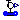 SensT | Temperature sensor for water-steam |
| SensW | Mass Flowrate sensor for water/steam |
| 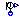 SensP | Pressure sensor for water/steam flows |
| Accumulator | Water-Gas Accumulator |
| Drum2States | |
| Drum for circulation boilers | |
| ValveLin | Valve for water/steam flows with linear pressure drop |
| ValveBase | Base model for valves |
| ValveLiq | Valve for liquid water flow |
| ValveVap | Valve for steam flow |
| ValveLiqChoked | Valve for liquid water flow, allows choked flow conditions |
| PumpBase | Base model for centrifugal pumps |
| Pump | Centrifugal pump with ideally controlled speed |
| PumpNPSH | |
| PumpMech | Centrifugal pump with mechanical connector for the shaft |
| Chen's correlation for two-phase flow in a tube | |
| Fanning friction factor for water/steam flows | |
| Fanning friction factor for a two phase water/steam flow | |
| Dittus-Boelter correlation for one-phase flow in a tube | |
| Steam turbine | |
| Steam turbine | |
| SteamTurbineUnit | Turbine for steam flows |
| Basic interface for 1-dimensional water/steam fluid flow models |
 ThermoPower.Water.Flange
ThermoPower.Water.Flange
Can be connected either to a type-A (FlangeA) or to a type B (FlangeB) connector.
| Type | Name | Description |
|---|---|---|
| AbsolutePressure | p | Pressure [Pa] |
| flow MassFlowRate | w | Mass flowrate [kg/s] |
| SpecificEnthalpy | hAB | [J/kg] |
| SpecificEnthalpy | hBA | [J/kg] |
connector Flange "Generic flange connector for water/steam flows"
replaceable package Medium = StandardWater extends
Modelica.Media.Interfaces.PartialMedium "Medium model";
Medium.AbsolutePressure p "Pressure";
flow Medium.MassFlowRate w "Mass flowrate";
Medium.SpecificEnthalpy hAB;
Medium.SpecificEnthalpy hBA;
end Flange;
 ThermoPower.Water.FlangeA
ThermoPower.Water.FlangeA
Must always be connected to a single type-B connector FlangeB.
| Type | Name | Description |
|---|---|---|
| AbsolutePressure | p | Pressure [Pa] |
| flow MassFlowRate | w | Mass flowrate [kg/s] |
| SpecificEnthalpy | hAB | Specific enthalpy of fluid going out [J/kg] |
| SpecificEnthalpy | hBA | Specific enthalpy of entering fluid [J/kg] |
connector FlangeA "A-type flange connector for water/steam flows"
replaceable package Medium = StandardWater extends
Modelica.Media.Interfaces.PartialMedium "Medium model";
Medium.AbsolutePressure p "Pressure";
flow Medium.MassFlowRate w "Mass flowrate";
output Medium.SpecificEnthalpy hAB "Specific enthalpy of fluid going out";
input Medium.SpecificEnthalpy hBA "Specific enthalpy of entering fluid";
end FlangeA;
Must always be connected to a single type-A connector FlangeA.
| Type | Name | Description |
|---|---|---|
| AbsolutePressure | p | Pressure [Pa] |
| flow MassFlowRate | w | Mass flowrate [kg/s] |
| SpecificEnthalpy | hAB | Specific enthalpy of entering fluid [J/kg] |
| SpecificEnthalpy | hBA | Specific enthalpy of fluid going out [J/kg] |
connector FlangeB "B-type flange connector for water/steam flows"
replaceable package Medium = StandardWater extends
Modelica.Media.Interfaces.PartialMedium "Medium model";
Medium.AbsolutePressure p "Pressure";
flow Medium.MassFlowRate w "Mass flowrate";
input Medium.SpecificEnthalpy hAB "Specific enthalpy of entering fluid";
output Medium.SpecificEnthalpy hBA "Specific enthalpy of fluid going out";
end FlangeB;
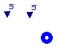
Modelling options
If R is set to zero, the pressure source is ideal; otherwise, the outlet pressure decreases proportionally to the outgoing flowrate.
If the in_p0 connector is wired, then the source pressure is given by the corresponding signal, otherwise it is fixed to p0.
If the in_h connector is wired, then the source pressure is given by the corresponding signal, otherwise it is fixed to h.
| Type | Name | Default | Description |
|---|---|---|---|
| Pressure | p0 | 1.01325e5 | Nominal pressure [Pa] |
| HydraulicResistance | R | 0 | Hydraulic resistance [Pa/(kg/s)] |
| SpecificEnthalpy | h | 1e5 | Nominal specific enthalpy [J/kg] |
| Type | Name | Description |
|---|---|---|
| FlangeB | flange | |
| input RealInput | in_p0 | |
| input RealInput | in_h |
model SourceP "Pressure source for water/steam flows"
extends Icons.Water.SourceP;
replaceable package Medium = StandardWater extends
Modelica.Media.Interfaces.PartialMedium "Medium model";
parameter Pressure p0=1.01325e5 "Nominal pressure";
parameter HydraulicResistance R=0 "Hydraulic resistance";
parameter SpecificEnthalpy h=1e5 "Nominal specific enthalpy";
Pressure p "Actual pressure";
FlangeB flange(redeclare package Medium=Medium);
Modelica.Blocks.Interfaces.RealInput in_p0;
Modelica.Blocks.Interfaces.RealInput in_h;
equation
if R == 0 then
flange.p = p;
else
flange.p = p + flange.w*R;
end if;
p = in_p0;
if cardinality(in_p0)==0 then
in_p0 = p0 "Pressure set by parameter";
end if;
flange.hBA =in_h;
if cardinality(in_h)==0 then
in_h = h "Enthalpy set by parameter";
end if;
end SourceP;
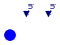
Modelling options
If R is set to zero, the pressure sink is ideal; otherwise, the inlet pressure increases proportionally to the incoming flowrate.
If the in_p0 connector is wired, then the source pressure is given by the corresponding signal, otherwise it is fixed to p0.
If the in_h connector is wired, then the source pressure is given by the corresponding signal, otherwise it is fixed to h.
| Type | Name | Default | Description |
|---|---|---|---|
| Pressure | p0 | 1.01325e5 | Nominal pressure [Pa] |
| HydraulicResistance | R | 0 | Hydraulic resistance [Pa/(kg/s)] |
| SpecificEnthalpy | h | 1e5 | Nominal specific enthalpy [J/kg] |
| Type | Name | Description |
|---|---|---|
| FlangeA | flange | |
| input RealInput | in_p0 | |
| input RealInput | in_h |
model SinkP "Pressure sink for water/steam flows"
extends Icons.Water.SourceP;
replaceable package Medium = StandardWater extends
Modelica.Media.Interfaces.PartialMedium "Medium model";
parameter Pressure p0=1.01325e5 "Nominal pressure";
parameter HydraulicResistance R=0 "Hydraulic resistance";
parameter SpecificEnthalpy h=1e5 "Nominal specific enthalpy";
Pressure p;
FlangeA flange(redeclare package Medium=Medium);
Modelica.Blocks.Interfaces.RealInput in_p0;
Modelica.Blocks.Interfaces.RealInput in_h;
equation
if R == 0 then
flange.p = p;
else
flange.p = p + flange.w*R;
end if;
p = in_p0;
if cardinality(in_p0)==0 then
in_p0 = p0 "Pressure set by parameter";
end if;
flange.hAB =in_h;
if cardinality(in_h)==0 then
in_h = h "Enthalpy set by parameter";
end if;
end SinkP;
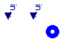
Modelling options
If G is set to zero, the flowrate source is ideal; otherwise, the outgoing flowrate decreases proportionally to the outlet pressure.
If the in_w0 connector is wired, then the source pressure is given by the corresponding signal, otherwise it is fixed to p0.
If the in_h connector is wired, then the source pressure is given by the corresponding signal, otherwise it is fixed to h.
| Type | Name | Default | Description |
|---|---|---|---|
| MassFlowRate | w0 | 0 | Nominal mass flowrate [kg/s] |
| Pressure | p0 | 1e5 | Nominal pressure [Pa] |
| HydraulicConductance | G | 0 | Hydraulic conductance [(kg/s)/Pa] |
| SpecificEnthalpy | h | 1e5 | Nominal specific enthalpy [J/kg] |
| Type | Name | Description |
|---|---|---|
| FlangeB | flange | |
| input RealInput | in_w0 | |
| input RealInput | in_h |
model SourceW "Flowrate source for water/steam flows"
extends Icons.Water.SourceW;
replaceable package Medium = StandardWater extends
Modelica.Media.Interfaces.PartialMedium "Medium model";
parameter MassFlowRate w0=0 "Nominal mass flowrate";
parameter Pressure p0=1e5 "Nominal pressure";
parameter HydraulicConductance G=0 "Hydraulic conductance";
parameter SpecificEnthalpy h=1e5 "Nominal specific enthalpy";
MassFlowRate w "Mass flowrate";
FlangeB flange(redeclare package Medium=Medium);
Modelica.Blocks.Interfaces.RealInput in_w0;
Modelica.Blocks.Interfaces.RealInput in_h;
equation
if G == 0 then
flange.w = -w;
else
flange.w = -w + (flange.p - p0)*G;
end if;
w = in_w0;
if cardinality(in_w0) == 0 then
in_w0 = w0 "Flow rate set by parameter";
end if;
flange.hBA = in_h "Enthalpy set by connector";
if cardinality(in_h) == 0 then
in_h = h "Enthalpy set by parameter";
end if;
end SourceW;
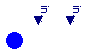
Modelling options
If G is set to zero, the flowrate source is ideal; otherwise, the incoming flowrate increases proportionally to the inlet pressure.
If w0Fix is set to true, the incoming flowrate is given by the parameter w0; otherwise, the in_w0 connector must be wired, providing the (possibly varying) source flowrate.
If hFix is set to true, the source enthalpy is given by the parameter h; otherwise, the in_h connector must be wired, providing the (possibly varying) source enthalpy.
| Type | Name | Default | Description |
|---|---|---|---|
| MassFlowRate | w0 | 0 | Nominal mass flowrate [kg/s] |
| Pressure | p0 | 1e5 | Nominal pressure [Pa] |
| HydraulicConductance | G | 0 | Hydraulic conductance [(kg/s)/Pa] |
| SpecificEnthalpy | h | 1e5 | Nominal specific enthalpy [J/kg] |
| Type | Name | Description |
|---|---|---|
| FlangeA | flange | |
| input RealInput | in_w0 | |
| input RealInput | in_h |
model SinkW "Flowrate sink for water/steam flows"
extends Icons.Water.SourceW;
replaceable package Medium = StandardWater extends
Modelica.Media.Interfaces.PartialMedium "Medium model";
parameter MassFlowRate w0=0 "Nominal mass flowrate";
parameter Pressure p0=1e5 "Nominal pressure";
parameter HydraulicConductance G=0 "Hydraulic conductance";
parameter SpecificEnthalpy h=1e5 "Nominal specific enthalpy";
MassFlowRate w "Mass flowrate";
Water.FlangeA flange(redeclare package Medium=Medium);
Modelica.Blocks.Interfaces.RealInput in_w0;
Modelica.Blocks.Interfaces.RealInput in_h;
equation
if G == 0 then
flange.w = w;
else
flange.w = w + (flange.p - p0)*G;
end if;
w = in_w0 "Flow rate set by connector";
if cardinality(in_w0) == 0 then
in_w0 = w0 "Flow rate set by parameter";
end if;
flange.hAB = in_h "Enthalpy set by connector";
if cardinality(in_h) == 0 then
in_h = h "Enthalpy set by parameter";
end if;
end SinkW;
Modelling options
If w0Fix is set to true, the flowrate is given by the parameter w0; otherwise, the in_w0 connector must be wired, providing the (possibly varying) flowrate value.
| Type | Name | Default | Description |
|---|---|---|---|
| MassFlowRate | w0 | 0 | Nominal mass flowrate [kg/s] |
| Type | Name | Description |
|---|---|---|
| FlangeA | inlet | |
| FlangeB | outlet | |
| input RealInput | in_w0 |
model ThroughW "Prescribes the flow rate across the component"
extends Icons.Water.SourceW;
replaceable package Medium = StandardWater extends
Modelica.Media.Interfaces.PartialMedium "Medium model";
parameter MassFlowRate w0=0 "Nominal mass flowrate";
MassFlowRate w "Mass flowrate";
FlangeA inlet(redeclare package Medium=Medium);
FlangeB outlet(redeclare package Medium=Medium);
Modelica.Blocks.Interfaces.RealInput in_w0;
equation
inlet.w + outlet.w = 0 "Mass balance";
inlet.w = w "Flow characteristics";
w = in_w0;
if cardinality(in_w0) == 0 then
in_w0 = w0 "Flow rate set by parameter";
end if;
// Energy balance
inlet.hAB = outlet.hAB;
inlet.hBA = outlet.hBA;
end ThroughW;
This very simple model provides a pressure drop which is proportional to the flowrate, without computing any fluid property.
| Type | Name | Default | Description |
|---|---|---|---|
| HydraulicResistance | R | Hydraulic resistance [Pa/(kg/s)] |
| Type | Name | Description |
|---|---|---|
| FlangeA | inlet | |
| FlangeB | outlet |
model PressDropLin "Linear pressure drop for water/steam flows"
extends Icons.Water.PressDrop;
replaceable package Medium = StandardWater extends
Modelica.Media.Interfaces.PartialMedium "Medium model";
parameter HydraulicResistance R "Hydraulic resistance";
FlangeA inlet(redeclare package Medium=Medium);
FlangeB outlet(redeclare package Medium=Medium);
equation
inlet.w + outlet.w = 0;
inlet.p - outlet.p = R*inlet.w "Flow characteristics";
// Energy balance
inlet.hAB = outlet.hAB;
inlet.hBA = outlet.hBA;
end PressDropLin;
The pressure drop across the inlet and outlet connectors is computed according to a turbulent friction model, i.e. is proportional to the squared velocity of the fluid. The friction coefficient can be specified directly, or by giving an operating point, or as a multiple of the kinetic pressure. In the latter two cases, the correction coefficient Kfc can be used to modify the friction coefficient, e.g. to fit some experimental operating point.
A small linear pressure drop is added to avoid numerical singularities at low or zero flowrate. The wnom parameter must be always specified; the additional linear pressure drop is such that it is equal to the turbulent pressure drop when the flowrate is equal to wnf*wnom (the default value is 1% of the nominal flowrate).
Modelling options
The following options are available to specify the friction coefficient:
| Type | Name | Default | Description |
|---|---|---|---|
| MassFlowRate | wnom | Nominal mass flowrate [kg/s] | |
| Temp | FFtype | FFtypes.Kf | Friction Factor Type |
| Real | Kf | 0 | Hydraulic resistance coefficient [Pa.kg/m^3/(kg/s)^2] |
| Pressure | dpnom | 0 | Nominal pressure drop [Pa] |
| Density | rhonom | 0 | Nominal density [kg/m3] |
| Real | K | 0 | Kinetic resistance coefficient (DP=K*rho*velocity^2/2) |
| Area | A | 0 | Cross-section [m2] |
| Real | wnf | 0.01 | Fraction of nominal flow rate at which linear friction equals turbulent friction |
| Real | Kfc | 1 | Friction factor correction coefficient |
| Type | Name | Description |
|---|---|---|
| FlangeA | inlet | |
| FlangeB | outlet |
model PressDrop "Pressure drop for water/steam flows"
extends Icons.Water.PressDrop;
import ThermoPower.Choices.PressDrop.FFtypes;
replaceable package Medium = StandardWater extends
Modelica.Media.Interfaces.PartialMedium "Medium model";
Medium.BaseProperties fluid;
parameter MassFlowRate wnom "Nominal mass flowrate";
parameter FFtypes.Temp FFtype=FFtypes.Kf "Friction Factor Type";
parameter Real Kf(fixed = if FFtype==FFtypes.Kf then true else false,
unit = "Pa.kg/m^3/(kg/s)^2")=0 "Hydraulic resistance coefficient";
parameter Pressure dpnom=0 "Nominal pressure drop";
parameter Density rhonom=0 "Nominal density";
parameter Real K=0 "Kinetic resistance coefficient (DP=K*rho*velocity^2/2)";
parameter Area A=0 "Cross-section";
parameter Real wnf=0.01
"Fraction of nominal flow rate at which linear friction equals turbulent friction";
parameter Real Kfc=1 "Friction factor correction coefficient";
protected
parameter Real Kfl(fixed = false) "Linear friction coefficient";
public
Medium.Density rho "Fluid density";
FlangeA inlet(w(start=wnom),redeclare package Medium=Medium);
FlangeB outlet(w(start=-wnom),redeclare package Medium=Medium);
initial equation
// Set Kf if FFtype <> FFtypes.Kf
if FFtype == FFtypes.OpPoint then
Kf = dpnom*rhonom/wnom^2*Kfc;
elseif FFtype == FFtypes.Kinetic then
Kf = K/(2*A^2)*Kfc;
end if;
Kfl = wnom*wnf*Kf "Linear friction factor";
equation
// Fluid properties
if inlet.w>=0 then
fluid.p=inlet.p;
fluid.h=inlet.hBA;
else
fluid.p=outlet.p;
fluid.h=outlet.hAB;
end if;
rho = fluid.d "Fluid density";
inlet.p - outlet.p = noEvent(Kf*abs(inlet.w) + Kfl)*inlet.w/rho
"Flow characteristics";
inlet.w + outlet.w = 0 "Mass balance";
// Energy balance
inlet.hAB = outlet.hAB;
inlet.hBA = outlet.hBA;
end PressDrop;
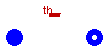
This model describes a constant volume header with metal walls. The fluid can be water, steam, or a two-phase mixture.
It is possible to take into account the heat storage and transfer in the metal wall in two ways:
The model can represent an actual header when connected to the model of a bank of tubes (e.g., Flow1D with Nt>1).
| Type | Name | Default | Description |
|---|---|---|---|
| Volume | V | Inner volume [m3] | |
| Area | S | 0 | Internal surface [m2] |
| Position | H | 0 | Elevation of outlet over inlet [m] |
| CoefficientOfHeatTransfer | gamma | 0 | Heat Transfer Coefficient [W/(m2.K)] |
| HeatCapacity | Cm | 0 | Metal Heat Capacity [J/K] |
| HT | thermalPort | redeclare Thermal.HT thermal... | Internal surface of metal wall |
| Initialisation | |||
| Pressure | pstartin | 1.01325e5 | Inlet pressure start value [Pa] |
| Pressure | pstartout | 1.01325e5 | Outlet pressure start value [Pa] |
| SpecificEnthalpy | hstart | 1e5 | Specific enthalpy start value [J/kg] |
| AbsoluteTemperature | Tmstart | 300 | Metal wall start temperature [K] |
| Temp | initOpt | Choices.Init.Options.noInit | Initialisation option |
| Type | Name | Description |
|---|---|---|
| FlangeA | inlet | |
| FlangeB | outlet | |
| HT | thermalPort | Internal surface of metal wall |
model Header "Header with metal walls for water/steam flows"
extends Icons.Water.Header;
replaceable package Medium = StandardWater extends
Modelica.Media.Interfaces.PartialMedium "Medium model";
Medium.BaseProperties fluid(p(start=pstartout),h(start=hstart));
parameter Volume V "Inner volume";
parameter Area S=0 "Internal surface";
parameter Position H=0 "Elevation of outlet over inlet";
parameter CoefficientOfHeatTransfer gamma=0 "Heat Transfer Coefficient";
parameter HeatCapacity Cm=0 "Metal Heat Capacity";
parameter Pressure pstartin=1.01325e5 "Inlet pressure start value";
parameter Pressure pstartout=1.01325e5 "Outlet pressure start value";
parameter SpecificEnthalpy hstart=1e5 "Specific enthalpy start value";
parameter AbsoluteTemperature Tmstart=300 "Metal wall start temperature";
parameter Choices.Init.Options.Temp initOpt=Choices.Init.Options.noInit
"Initialisation option";
FlangeA inlet(p(start=pstartin), hAB(start=hstart),
redeclare package Medium = Medium);
FlangeB outlet(p(start=pstartout), hBA(start=hstart),
redeclare package Medium = Medium);
Pressure p(start=pstartout, stateSelect=if Medium.singleState then
StateSelect.avoid else StateSelect.prefer)
"Fluid pressure at the outlet";
SpecificEnthalpy h(start=hstart, stateSelect=StateSelect.prefer)
"Fluid specific enthalpy";
SpecificEnthalpy hi;
SpecificEnthalpy ho;
Mass M "Fluid mass";
Energy E "Fluid energy";
AbsoluteTemperature T "Fluid temperature";
AbsoluteTemperature Tm(start=Tmstart) "Wall temperature";
Time Tr "Residence time";
replaceable Thermal.HT thermalPort "Internal surface of metal wall";
equation
// Set fluid properties
fluid.p=p;
fluid.h=h;
fluid.T=T;
M=fluid.d*V "Fluid mass";
E=M*fluid.u "Fluid energy";
der(M) = inlet.w + outlet.w "Fluid mass balance";
der(E)= inlet.w*hi + outlet.w*ho + gamma*S*(Tm - T) +
thermalPort.Q_flow "Fluid energy balance";
if Cm > 0 and gamma >0 then
Cm*der(Tm) = gamma*S*(T - Tm) "Energy balance of the built-in wall model";
else
Tm = T "Trivial equation for metal temperature";
end if;
// Boundary conditions
hi = if inlet.w >= 0 then inlet.hBA else h;
ho = if outlet.w >= 0 then outlet.hAB else h;
inlet.hAB = h;
outlet.hBA = h;
inlet.p = p+fluid.d*Modelica.Constants.g_n*H;
outlet.p = p;
thermalPort.T = T;
Tr=noEvent(M/max(inlet.w,Modelica.Constants.eps)) "Residence time";
initial equation
// Initial conditions
if initOpt == Choices.Init.Options.noInit then
// do nothing
elseif initOpt == Choices.Init.Options.steadyState then
der(fluid.h) = 0;
if (not Medium.singleState) then
der(fluid.p) = 0;
end if;
if (Cm > 0 and gamma >0) then
der(Tm) = 0;
end if;
elseif initOpt == Choices.Init.Options.steadyStateNoP then
der(fluid.h) = 0;
if (Cm > 0 and gamma >0) then
der(Tm) = 0;
end if;
else
assert(false, "Unsupported initialisation option");
end if;
end Header;
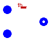
This model describes a constant volume mixer with metal walls. The fluid can be water, steam, or a two-phase mixture. The metal wall temperature and the heat transfer coefficient between the wall and the fluid are uniform. The wall is thermally insulated from the outside.
| Type | Name | Default | Description |
|---|---|---|---|
| Volume | V | Internal volume [m3] | |
| Area | S | 0 | Internal surface [m2] |
| CoefficientOfHeatTransfer | gamma | 0 | Internal Heat Transfer Coefficient [W/(m2.K)] |
| HeatCapacity | Cm | 0 | Metal Heat Capacity [J/K] |
| HT | thermalPort | redeclare Thermal.HT thermal... | Internal surface of metal wall |
| Initialisation | |||
| Pressure | pstart | 1e5 | Pressure start value [Pa] |
| Enthalpy | hstart | 1e5 | Enthalpy start value [J] |
| AbsoluteTemperature | Tmstart | 300 | Wall temperature start value [K] |
| Temp | initOpt | Choices.Init.Options.noInit | Initialisation option |
| Type | Name | Description |
|---|---|---|
| FlangeA | in1 | |
| FlangeA | in2 | |
| FlangeB | out | |
| HT | thermalPort | Internal surface of metal wall |
model Mixer "Mixer with metal walls for water/steam flows"
extends Icons.Water.Mixer;
replaceable package Medium = StandardWater extends
Modelica.Media.Interfaces.PartialMedium "Medium model";
Medium.BaseProperties fluid(p(start=pstart), h(start=hstart))
"Fluid properties";
parameter Volume V "Internal volume";
parameter Area S=0 "Internal surface";
parameter CoefficientOfHeatTransfer gamma=0
"Internal Heat Transfer Coefficient";
parameter HeatCapacity Cm=0 "Metal Heat Capacity";
parameter Pressure pstart=1e5 "Pressure start value";
parameter Enthalpy hstart=1e5 "Enthalpy start value";
parameter AbsoluteTemperature Tmstart=300 "Wall temperature start value";
parameter Choices.Init.Options.Temp initOpt=Choices.Init.Options.noInit
"Initialisation option";
FlangeA in1(p(start=pstart), hAB(start=hstart),redeclare package Medium=Medium);
FlangeA in2(p(start=pstart), hAB(start=hstart),redeclare package Medium=Medium);
FlangeB out(p(start=pstart), hBA(start=hstart),redeclare package Medium=Medium);
Medium.AbsolutePressure p(start=pstart, stateSelect=if Medium.singleState then
StateSelect.avoid else StateSelect.prefer) "Fluid pressure";
Medium.SpecificEnthalpy h(start=hstart, stateSelect=StateSelect.prefer)
"Fluid specific enthalpy";
Medium.SpecificEnthalpy hi1 "Inlet 1 specific enthalpy";
Medium.SpecificEnthalpy hi2 "Inlet 2 specific enthalpy";
Medium.SpecificEnthalpy ho "Outlet specific enthalpy";
Mass M "Fluid mass";
Energy E "Fluid energy";
HeatFlowRate Q "Heat flow rate exchanged with the outside";
Medium.Temperature T "Fluid temperature";
AbsoluteTemperature Tm(start=Tmstart) "Wall temperature";
Time Tr "Residence time";
replaceable Thermal.HT thermalPort "Internal surface of metal wall";
equation
// Set fluid properties
fluid.p=p;
fluid.h=h;
fluid.T=T;
M=fluid.d*V "Fluid mass";
E=M*fluid.u "Fluid energy";
der(M) = in1.w + in2.w + out.w "Fluid mass balance";
der(E) = in1.w*hi1 + in2.w*hi2 + out.w*ho - gamma*S*(T - Tm) + Q
"Fluid energy balance";
if Cm > 0 and gamma >0 then
Cm*der(Tm) = gamma*S*(T - Tm) "Metal wall energy balance";
else
Tm = T;
end if;
// Boundary conditions
hi1 = if in1.w >= 0 then in1.hBA else h;
hi2 = if in2.w >= 0 then in2.hBA else h;
ho = if out.w >= 0 then out.hAB else h;
in1.hAB = h;
in2.hAB = h;
out.hBA = h;
in1.p = p;
in2.p = p;
out.p = p;
thermalPort.Q_flow = Q;
thermalPort.T = T;
Tr=noEvent(M/max(-out.w,Modelica.Constants.eps)) "Residence time";
initial equation
if initOpt == Choices.Init.Options.noInit then
// do nothing
elseif initOpt == Choices.Init.Options.steadyState then
der(fluid.h) = 0;
if (not Medium.singleState) then
der(fluid.p) = 0;
end if;
if (Cm > 0 and gamma >0) then
der(Tm) = 0;
end if;
elseif initOpt == Choices.Init.Options.steadyStateNoP then
der(fluid.h) = 0;
if (Cm > 0 and gamma >0) then
der(Tm) = 0;
end if;
else
assert(false, "Unsupported initialisation option");
end if;
end Mixer;
This model describes a simple free-surface cylindrical water tank. The model is based on mass and energy balances, assuming that no heat transfer takes place except through the inlet and outlet flows.
| Type | Name | Default | Description |
|---|---|---|---|
| Area | A | Cross-sectional area [m2] | |
| Volume | V0 | 0 | Volume at zero level [m3] |
| Pressure | pext | 1.01325e5 | Surface pressure [Pa] |
| Initialisation | |||
| Length | ystart | Start level [m] | |
| SpecificEnthalpy | hstart | 1e5 | [J/kg] |
| Temp | initOpt | Choices.Init.Options.noInit | Initialisation option |
| Type | Name | Description |
|---|---|---|
| FlangeA | inlet | |
| FlangeB | outlet |
model Tank "Open tank with free surface"
extends Icons.Water.Tank;
replaceable package Medium = StandardWater extends
Modelica.Media.Interfaces.PartialMedium "Medium model";
Medium.BaseProperties liquid(p(start=pext),h(start=hstart))
"Liquid properties";
parameter Area A "Cross-sectional area";
parameter Volume V0=0 "Volume at zero level";
parameter Pressure pext=1.01325e5 "Surface pressure";
parameter Length ystart "Start level";
parameter SpecificEnthalpy hstart=1e5;
Length y(start=ystart, stateSelect=StateSelect.prefer) "Level";
Volume V "Liquid volume";
Mass M "Liquid mass";
Enthalpy H "Liquid (total) enthalpy";
Medium.SpecificEnthalpy h(start=hstart, stateSelect=StateSelect.prefer)
"Liquid specific enthalpy";
Medium.SpecificEnthalpy hin;
Medium.SpecificEnthalpy hout;
Medium.AbsolutePressure p(start=pext) "Bottom pressure";
constant Real g=Modelica.Constants.g_n;
FlangeA inlet(redeclare package Medium=Medium);
FlangeB outlet(redeclare package Medium=Medium);
parameter Choices.Init.Options.Temp initOpt=Choices.Init.Options.noInit
"Initialisation option";
equation
// Set liquid properties
liquid.p=pext;
liquid.h=h;
V=V0+A*y "Liquid volume";
M=liquid.d*V "Liquid mass";
H=M*liquid.h "Liquid enthalpy";
der(M)= inlet.w + outlet.w "Mass balance";
der(H) = inlet.w*hin+ outlet.w*hout "Energy balance";
p - pext = liquid.d*g*y "Stevino's law";
// Boundary conditions
hin = if inlet.w >= 0 then inlet.hBA else h;
hout = if outlet.w >= 0 then outlet.hAB else h;
inlet.hAB = h;
outlet.hBA = h;
inlet.p = p;
outlet.p = p;
initial equation
if initOpt == Choices.Init.Options.noInit then
// do nothing
elseif initOpt == Choices.Init.Options.steadyState then
der(liquid.h) = 0;
der(y) = 0;
else
assert(false, "Unsupported initialisation option");
end if;
end Tank;
 ThermoPower.Water.Flow1DBase
ThermoPower.Water.Flow1DBase

| Type | Name | Default | Description |
|---|---|---|---|
| Integer | N | 2 | Number of nodes for thermal variables |
| Integer | Nt | 1 | Number of tubes in parallel |
| Distance | L | Tube length [m] | |
| Position | H | 0 | Elevation of outlet over inlet [m] |
| Area | A | Cross-sectional area (single tube) [m2] | |
| Length | omega | Perimeter of heat transfer surface (single tube) [m] | |
| Length | Dhyd | Hydraulic Diameter (single tube) [m] | |
| MassFlowRate | wnom | Nominal mass flowrate (total) [kg/s] | |
| Temp | FFtype | Friction Factor Type | |
| Real | Kfnom | 0 | Nominal hydraulic resistance coefficient [Pa.kg/m^3/(kg/s)^2] |
| Pressure | dpnom | 0 | Nominal pressure drop (friction term only!) [Pa] |
| Density | rhonom | 0 | Nominal inlet density [kg/m3] |
| Real | Cfnom | 0 | Nominal Fanning friction factor |
| Real | e | 0 | Relative roughness (ratio roughness/diameter) |
| Boolean | DynamicMomentum | false | Inertial phenomena accounted for |
| Temp | HydraulicCapacitance | HCtypes.Downstream | Location of the hydraulic capacitance |
| Boolean | avoidInletEnthalpyDerivative | true | Avoid inlet enthalpy derivative |
| Real | wnf | 0.01 | Fraction of nominal flow rate at which linear friction equals turbulent friction |
| Real | Kfc | 1 | Friction factor correction coefficient |
| DHT | wall | redeclare ThermoPower.Therma... | |
| Initialisation | |||
| Pressure | pstartin | 1e5 | Inlet pressure start value [Pa] |
| Pressure | pstartout | 1e5 | Outlet pressure start value [Pa] |
| SpecificEnthalpy | hstartin | 1e5 | Inlet enthalpy start value [J/kg] |
| SpecificEnthalpy | hstartout | 1e5 | Outlet enthalpy start value [J/kg] |
| SpecificEnthalpy | hstart[N] | linspace(hstartin, hstartout... | Start value of enthalpy vector (initialized by default) [J/kg] |
| Temp | initOpt | Choices.Init.Options.noInit | Initialisation option |
| Type | Name | Description |
|---|---|---|
| FlangeA | infl | |
| FlangeB | outfl | |
| DHT | wall |
partial model Flow1DBase
"Basic interface for 1-dimensional water/steam fluid flow models"
replaceable package Medium = StandardWater extends
Modelica.Media.Interfaces.PartialMedium "Medium model";
extends Icons.Water.Tube;
import ThermoPower.Choices.Flow1D.FFtypes;
import ThermoPower.Choices.Flow1D.HCtypes;
parameter Integer N(min=2) = 2 "Number of nodes for thermal variables";
parameter Integer Nt=1 "Number of tubes in parallel";
parameter Distance L "Tube length";
parameter Position H=0 "Elevation of outlet over inlet";
parameter Area A "Cross-sectional area (single tube)";
parameter Length omega "Perimeter of heat transfer surface (single tube)";
parameter Length Dhyd "Hydraulic Diameter (single tube)";
parameter MassFlowRate wnom "Nominal mass flowrate (total)";
parameter FFtypes.Temp FFtype "Friction Factor Type";
parameter Real Kfnom(unit = "Pa.kg/m^3/(kg/s)^2", min=0)=0
"Nominal hydraulic resistance coefficient";
parameter Pressure dpnom=0 "Nominal pressure drop (friction term only!)";
parameter Density rhonom=0 "Nominal inlet density";
parameter Real Cfnom=0 "Nominal Fanning friction factor";
parameter Real e=0 "Relative roughness (ratio roughness/diameter)";
parameter Boolean DynamicMomentum=false "Inertial phenomena accounted for";
parameter HCtypes.Temp HydraulicCapacitance = HCtypes.Downstream
"Location of the hydraulic capacitance";
parameter Boolean avoidInletEnthalpyDerivative = true
"Avoid inlet enthalpy derivative";
parameter Pressure pstartin=1e5 "Inlet pressure start value";
parameter Pressure pstartout=1e5 "Outlet pressure start value";
parameter SpecificEnthalpy hstartin=1e5 "Inlet enthalpy start value";
parameter SpecificEnthalpy hstartout=1e5 "Outlet enthalpy start value";
parameter SpecificEnthalpy hstart[N] = linspace(hstartin, hstartout, N)
"Start value of enthalpy vector (initialized by default)";
parameter Real wnf=0.01
"Fraction of nominal flow rate at which linear friction equals turbulent friction";
parameter Real Kfc=1 "Friction factor correction coefficient";
parameter Choices.Init.Options.Temp initOpt=Choices.Init.Options.noInit
"Initialisation option";
constant Real g=Modelica.Constants.g_n;
FlangeA infl(p(start=pstartin),w(start=wnom),hAB(start=hstartin),
redeclare package Medium = Medium);
FlangeB outfl(p(start=pstartout),w(start=-wnom),hBA(start=hstartout),
redeclare package Medium = Medium);
replaceable ThermoPower.Thermal.DHT wall(N=N);
Power Q "Total heat flow through the lateral boundary (all Nt tubes)";
Time Tr "Residence time";
protected
parameter Real dzdx = H/L "Slope";
parameter Length l = L/(N - 1) "Length of a single volume";
end Flow1DBase;
ThermoPower.Water.Flow1D
This model describes the flow of water or steam in a rigid tube. The basic modelling assumptions are:
The mass, momentum and energy balance equation are discretised with the finite volume method. The state variables are one pressure, one flowrate (optional) and N-1 specific enthalpies.
The turbulent friction factor can be either assumed as a constant, or computed by Colebrook's equation. In the former case, the friction factor can be supplied directly, or given implicitly by a specified operating point. In any case, the multiplicative correction coefficient Kfc can be used to modify the friction coefficient, e.g. to fit experimental data.
A small linear pressure drop is added to avoid numerical singularities at low or zero flowrate. The wnom parameter must be always specified: the additional linear pressure drop is such that it is equal to the turbulent pressure drop when the flowrate is equal to wnf*wnom (the default value is 1% of the nominal flowrate). Increase wnf if numerical instabilities occur in tubes with very low pressure drops.
Flow reversal is fully supported.
Modelling options
Thermal variables (enthalpy, temperature, density) are computed in N equally spaced nodes, including the inlet (node 1) and the outlet (node N); N must be greater than or equal to 2.
The following options are available to specify the friction coefficient:
The dynamic momentum term is included or neglected depending on the DynamicMomentum parameter.
If HydraulicCapacitance = HCtypes.Downstream (default option) then the compressibility effect depending on the pressure derivative is lumped at the outlet, while the optional dynamic momentum term depending on the flowrate is lumped at the inlet; therefore, the state variables are the outlet pressure and the inlet flowrate. If HydraulicCapacitance = HCtypes.Upstream the reverse takes place. If HydraulicCapacitance = HCtypes.Middle, the compressibility effect is lumped at the middle of the pipe; to use this option, an odd number of nodes N is required.
Start values for the pressure and flowrate state variables are specified by pstart, wstart. The start values for the node enthalpies are linearly distributed from hstartin at the inlet to hstartout at the outlet.
A bank of Nt identical tubes working in parallel can be modelled by setting Nt > 1. The geometric parameters always refer to a single tube.
This models makes the temperature and external heat flow distributions available to connected components through the wall connector. If other variables (e.g. the heat transfer coefficient) are needed by external components to compute the actual heat flow, the wall connector can be replaced by an extended version of the DHT connector.
| Type | Name | Default | Description |
|---|---|---|---|
| replaceable package Medium | StandardWater | Medium model | |
| Integer | N | 2 | Number of nodes for thermal variables |
| Integer | Nt | 1 | Number of tubes in parallel |
| Distance | L | Tube length [m] | |
| Position | H | 0 | Elevation of outlet over inlet [m] |
| Area | A | Cross-sectional area (single tube) [m2] | |
| Length | omega | Perimeter of heat transfer surface (single tube) [m] | |
| Length | Dhyd | Hydraulic Diameter (single tube) [m] | |
| MassFlowRate | wnom | Nominal mass flowrate (total) [kg/s] | |
| Temp | FFtype | Friction Factor Type | |
| Real | Kfnom | 0 | Nominal hydraulic resistance coefficient [Pa.kg/m^3/(kg/s)^2] |
| Pressure | dpnom | 0 | Nominal pressure drop (friction term only!) [Pa] |
| Density | rhonom | 0 | Nominal inlet density [kg/m3] |
| Real | Cfnom | 0 | Nominal Fanning friction factor |
| Real | e | 0 | Relative roughness (ratio roughness/diameter) |
| Boolean | DynamicMomentum | false | Inertial phenomena accounted for |
| Temp | HydraulicCapacitance | HCtypes.Downstream | Location of the hydraulic capacitance |
| Boolean | avoidInletEnthalpyDerivative | true | Avoid inlet enthalpy derivative |
| Real | wnf | 0.01 | Fraction of nominal flow rate at which linear friction equals turbulent friction |
| Real | Kfc | 1 | Friction factor correction coefficient |
| DHT | wall | redeclare ThermoPower.Therma... | |
| Initialisation | |||
| Pressure | pstartin | 1e5 | Inlet pressure start value [Pa] |
| Pressure | pstartout | 1e5 | Outlet pressure start value [Pa] |
| SpecificEnthalpy | hstartin | 1e5 | Inlet enthalpy start value [J/kg] |
| SpecificEnthalpy | hstartout | 1e5 | Outlet enthalpy start value [J/kg] |
| SpecificEnthalpy | hstart[N] | linspace(hstartin, hstartout... | Start value of enthalpy vector (initialized by default) [J/kg] |
| Temp | initOpt | Choices.Init.Options.noInit | Initialisation option |
| Type | Name | Description |
|---|---|---|
| FlangeA | infl | |
| FlangeB | outfl | |
| DHT | wall |
model Flow1D
"1-dimensional fluid flow model for water/steam (finite volumes)"
extends Flow1DBase;
import ThermoPower.Choices.Flow1D.FFtypes;
Medium.BaseProperties fluid[N](each p(start=pstartin),
h(start=hstart)) "Properties of the fluid at the nodes";
Length omega_hyd "Wet perimeter (single tube)";
Pressure Dpfric "Pressure drop due to friction (total)";
Pressure Dpfric1 "Pressure drop due to friction (from inlet to capacitance)";
Pressure Dpfric2 "Pressure drop due to friction (from capacitance to outlet)";
Pressure Dpstat "Pressure drop due to static head";
MassFlowRate win "Flow rate at the inlet (single tube)";
MassFlowRate wout "Flow rate at the outlet (single tube)";
Real Kf "Hydraulic friction coefficient";
Real Kfl "Linear friction coefficient";
Real dwdt "Dynamic momentum term";
Real Cf "Fanning friction factor";
Medium.AbsolutePressure p(start=if HydraulicCapacitance==1 then pstartin else
pstartout) "Fluid pressure for property calculations";
MassFlowRate w(start=wnom/Nt) "Mass flowrate (single tube)";
MassFlowRate wbar[N - 1](each start=wnom/Nt);
Velocity u[N] "Fluid velocity";
Medium.Temperature T[N] "Fluid temperature";
Medium.SpecificEnthalpy h[N](start=hstart)
"Fluid specific enthalpy at the nodes";
Medium.SpecificEnthalpy htilde[N - 1](start=hstart[2:N])
"Enthalpy state variables";
Medium.Density rho[N] "Fluid nodal density";
Mass M "Fluid mass";
Real dMdt[N - 1] "Time derivative of mass in each cell between two nodes";
protected
Density rhobar[N - 1] "Fluid average density";
SpecificVolume vbar[N - 1] "Fluid average specific volume";
HeatFlux phibar[N - 1] "Average heat flux";
DerDensityByEnthalpy drdh[N] "Derivative of density by enthalpy";
DerDensityByEnthalpy drbdh[N - 1] "Derivative of average density by enthalpy";
DerDensityByPressure drdp[N] "Derivative of density by pressure";
DerDensityByPressure drbdp[N - 1] "Derivative of average density by pressure";
equation
//All equations are referred to a single tube
// Friction factor selection
omega_hyd = 4*A/Dhyd;
if FFtype == FFtypes.Kfnom then
Kf = Kfnom*Kfc;
Cf = 2*Kf*A^3/(omega_hyd*L);
elseif FFtype == FFtypes.OpPoint then
Kf = dpnom*rhonom/(wnom/Nt)^2*Kfc;
Cf = 2*Kf*A^3/(omega_hyd*L);
elseif FFtype == FFtypes.Cfnom then
Kf = Cfnom*omega_hyd*L/(2*A^3)*Kfc;
Cf = Cfnom*Kfc;
elseif FFtype == FFtypes.Colebrook then
Cf = f_colebrook(w, Dhyd/A, e,
Medium.dynamicViscosity(fluid[integer(N/2)].state))*Kfc;
Kf = Cf*omega_hyd*L/(2*A^3);
elseif FFtype == FFtypes.NoFriction then
Cf = 0;
Kf = 0;
end if;
assert(Kf>=0, "Negative friction coefficient");
Kfl = wnom/Nt*wnf*Kf "Linear friction factor";
// Dynamic momentum term
if DynamicMomentum then
dwdt = der(w);
else
dwdt = 0;
end if;
sum(dMdt) = (infl.w + outfl.w)/Nt "Mass balance";
L/A*dwdt + (outfl.p - infl.p) + Dpstat + Dpfric = 0 "Momentum balance";
Dpfric = Dpfric1 + Dpfric2 "Total pressure drop due to friction";
if FFtype == FFtypes.NoFriction then
Dpfric1 = 0;
Dpfric2 = 0;
elseif HydraulicCapacitance == 0 then
assert((N-1)-integer((N-1)/2)*2 == 0, "N must be odd");
Dpfric1 = noEvent(Kf*abs(win) + Kfl)*win* sum(vbar[1:integer((N-1)/2)])/(N-1)
"Pressure drop from inlet to capacitance";
Dpfric2 = noEvent(Kf*abs(wout) + Kfl)*wout*sum(vbar[1+integer((N-1)/2):N-1])/(N-1)
"Pressure drop from capacitance to outlet";
elseif HydraulicCapacitance == 1 then
Dpfric1 = 0 "Pressure drop from inlet to capacitance";
Dpfric2 = noEvent(Kf*abs(wout) + Kfl)*wout*sum(vbar)/(N - 1)
"Pressure drop from capacitance to outlet";
elseif HydraulicCapacitance == 2 then
Dpfric1 = noEvent(Kf*abs(win) + Kfl)*win*sum(vbar)/(N - 1)
"Pressure drop from inlet to capacitance";
Dpfric2 = 0 "Pressure drop from capacitance to outlet";
else
assert(false, "Unsupported HydraulicCapacitance option");
end if "Pressure drop due to friction";
Dpstat = if abs(dzdx)<1e-6 then 0 else g*l*dzdx*sum(rhobar)
"Pressure drop due to static head";
for j in 1:N - 1 loop
if Medium.singleState then
A*l*rhobar[j]*der(htilde[j]) + wbar[j]*(h[j + 1] - h[j]) =
l*omega*phibar[j] "Energy balance (pressure effects neglected)";
else
A*l*rhobar[j]*der(htilde[j]) + wbar[j]*(h[j + 1] - h[j]) - A*l*der(p) =
l*omega*phibar[j] "Energy balance";
end if;
dMdt[j] = A*l*(drbdh[j]*der(htilde[j]) + drbdp[j]*der(p))
"Mass derivative for each volume";
// Average volume quantities
rhobar[j] = (rho[j] + rho[j + 1])/2;
drbdp[j] = (drdp[j] + drdp[j + 1])/2;
drbdh[j] = (drdh[j] + drdh[j + 1])/2;
vbar[j] = 1/rhobar[j];
wbar[j] = infl.w/Nt - sum(dMdt[1:j - 1]) - dMdt[j]/2;
end for;
// Fluid property calculations
for j in 1:N loop
fluid[j].p=p;
fluid[j].h=h[j];
T[j]=fluid[j].T;
rho[j]=fluid[j].d;
drdp[j]= if Medium.singleState then 0 else
Medium.density_derp_h(fluid[j].state);
drdh[j]=Medium.density_derh_p(fluid[j].state);
u[j] = w/(rho[j]*A);
end for;
// Boundary conditions
win = infl.w/Nt;
wout = -outfl.w/Nt;
if HydraulicCapacitance == 0 then
p = infl.p - Dpfric1 - Dpstat/2;
w = win;
elseif HydraulicCapacitance == 1 then
p = infl.p;
w = wout;
elseif HydraulicCapacitance == 2 then
p = outfl.p;
w = win;
else
assert(false, "Unsupported HydraulicCapacitance option");
end if;
infl.hAB = htilde[1];
outfl.hBA = htilde[N - 1];
h[1] = infl.hBA;
h[2:N] = htilde;
T = wall.T;
phibar = (wall.phi[1:N - 1] + wall.phi[2:N])/2;
Q = Nt*l*omega*sum(phibar) "Total heat flow through lateral boundary";
M=sum(rhobar)*A*l "Total fluid mass";
Tr=noEvent(M/max(infl.w/Nt,Modelica.Constants.eps)) "Residence time";
initial equation
if initOpt == Choices.Init.Options.noInit then
// do nothing
elseif initOpt == Choices.Init.Options.steadyState then
der(htilde) = zeros(N-1);
if (not Medium.singleState) then
der(p) = 0;
end if;
elseif initOpt == Choices.Init.Options.steadyStateNoP then
der(htilde) = zeros(N-1);
else
assert(false, "Unsupported initialisation option");
end if;
end Flow1D;
ThermoPower.Water.Flow1DDB
This model extends Flow1D by computing the distribution of the heat transfer coefficient gamma and making it available through an extended version of the wall connector.
This model can be used in the case of one-phase water or steam flow. Dittus-Boelter's equation [1] is used to compute the heat transfer coefficient.
References:
| Type | Name | Default | Description |
|---|---|---|---|
| replaceable package Medium | StandardWater | Medium model | |
| Integer | N | 2 | Number of nodes for thermal variables |
| Integer | Nt | 1 | Number of tubes in parallel |
| Distance | L | Tube length [m] | |
| Position | H | 0 | Elevation of outlet over inlet [m] |
| Area | A | Cross-sectional area (single tube) [m2] | |
| Length | omega | Perimeter of heat transfer surface (single tube) [m] | |
| Length | Dhyd | Hydraulic Diameter (single tube) [m] | |
| MassFlowRate | wnom | Nominal mass flowrate (total) [kg/s] | |
| Temp | FFtype | Friction Factor Type | |
| Real | Kfnom | 0 | Nominal hydraulic resistance coefficient [Pa.kg/m^3/(kg/s)^2] |
| Pressure | dpnom | 0 | Nominal pressure drop (friction term only!) [Pa] |
| Density | rhonom | 0 | Nominal inlet density [kg/m3] |
| Real | Cfnom | 0 | Nominal Fanning friction factor |
| Real | e | 0 | Relative roughness (ratio roughness/diameter) |
| Boolean | DynamicMomentum | false | Inertial phenomena accounted for |
| Temp | HydraulicCapacitance | HCtypes.Downstream | Location of the hydraulic capacitance |
| Boolean | avoidInletEnthalpyDerivative | true | Avoid inlet enthalpy derivative |
| Real | wnf | 0.01 | Fraction of nominal flow rate at which linear friction equals turbulent friction |
| Real | Kfc | 1 | Friction factor correction coefficient |
| Initialisation | |||
| Pressure | pstartin | 1e5 | Inlet pressure start value [Pa] |
| Pressure | pstartout | 1e5 | Outlet pressure start value [Pa] |
| SpecificEnthalpy | hstartin | 1e5 | Inlet enthalpy start value [J/kg] |
| SpecificEnthalpy | hstartout | 1e5 | Outlet enthalpy start value [J/kg] |
| SpecificEnthalpy | hstart[N] | linspace(hstartin, hstartout... | Start value of enthalpy vector (initialized by default) [J/kg] |
| Temp | initOpt | Choices.Init.Options.noInit | Initialisation option |
| Type | Name | Description |
|---|---|---|
| FlangeA | infl | |
| FlangeB | outfl |
model Flow1DDB
"1-dimensional fluid flow model for water or steam flow (finite volumes, Dittus-Boelter heat transfer)"
extends Flow1D(redeclare Thermal.DHThtc wall);
Medium.DynamicViscosity mu[N] "Dynamic viscosity";
Medium.ThermalConductivity k[N] "Thermal conductivity";
Medium.SpecificHeatCapacity cp[N] "Heat capacity at constant pressure";
equation
for j in 1:N loop
// Additional fluid properties
mu[j] = Medium.dynamicViscosity(fluid[j].state);
k[j] = Medium.thermalConductivity(fluid[j].state);
cp[j] = Medium.heatCapacity_cp(fluid[j]);
wall.gamma[j] = f_dittus_boelter(w, Dhyd, A, mu[j], k[j], cp[j])
"Heat transfer on the wall connector";
end for;
end Flow1DDB;
ThermoPower.Water.Flow1D2ph
This model describes the flow of water or steam in a rigid tube. The basic modelling assumptions are:
The mass, momentum, and energy balance equation are discretised with the finite volume method. The state variables are one pressure, one flowrate (optional) and N-1 specific enthalpies.
The turbulent friction factor can be either assumed as a constant, or computed by Colebrook's equation. In the former case, the friction factor can be supplied directly, or given implicitly by a specified operating point. In any case, the multiplicative correction coefficient Kfc can be used to modify the friction coefficient, e.g. to fit experimental data.
A small linear pressure drop is added to avoid numerical singularities at low or zero flowrate. The wnom parameter must be always specified: the additional linear pressure drop is such that it is equal to the turbulent pressure drop when the flowrate is equal to wnf*wnom (the default value is 1% of the nominal flowrate). Increase wnf if numerical instabilities occur in tubes with very low pressure drops.
The model assumes that the mass flow rate is always from the inlet to the outlet. Small reverse flow is allowed (e.g. when closing a valve at the outlet), but the model will not account for it explicitly.
Modelling options
Thermal variables (enthalpy, temperature, density) are computed in N equally spaced nodes, including the inlet (node 1) and the outlet (node N); N must be greater than or equal to 2.
The dynamic momentum term is included or neglected depending on the DynamicMomentum parameter.
The density is computed assuming a linear distribution of the specific enthalpy between the nodes; this requires the availability of the time derivative of the inlet enthalpy. If this is not available, it is possible to set avoidInletEnthalpyDerivative to true, which will cause the mean density of the first volume to be approximated as its outlet density, thus avoiding the need of the inlet enthalpy derivative.
The following options are available to specify the friction coefficient:
If HydraulicCapacitance = 2 (default option) then the mass storage term depending on the pressure is lumped at the outlet, while the optional momentum storage term depending on the flowrate is lumped at the inlet. If HydraulicCapacitance = 1 the reverse takes place.
Start values for pressure and flowrate are specified by pstart, wstart. The start values for the node enthalpies are linearly distributed from hstartin at the inlet to hstartout at the outlet.
A bank of Nt identical tubes working in parallel can be modelled by setting Nt > 1. The geometric parameters always refer to a single tube.
This models makes the temperature and external heat flow distributions visible through the wall connector. If other variables (e.g. the heat transfer coefficient) are needed by external components to compute the actual heat flow, the wall connector can be replaced by an extended version of the DHT connector.
| Type | Name | Default | Description |
|---|---|---|---|
| Integer | N | 2 | Number of nodes for thermal variables |
| Integer | Nt | 1 | Number of tubes in parallel |
| Distance | L | Tube length [m] | |
| Position | H | 0 | Elevation of outlet over inlet [m] |
| Area | A | Cross-sectional area (single tube) [m2] | |
| Length | omega | Perimeter of heat transfer surface (single tube) [m] | |
| Length | Dhyd | Hydraulic Diameter (single tube) [m] | |
| MassFlowRate | wnom | Nominal mass flowrate (total) [kg/s] | |
| Temp | FFtype | Friction Factor Type | |
| Real | Kfnom | 0 | Nominal hydraulic resistance coefficient [Pa.kg/m^3/(kg/s)^2] |
| Pressure | dpnom | 0 | Nominal pressure drop (friction term only!) [Pa] |
| Density | rhonom | 0 | Nominal inlet density [kg/m3] |
| Real | Cfnom | 0 | Nominal Fanning friction factor |
| Real | e | 0 | Relative roughness (ratio roughness/diameter) |
| Boolean | DynamicMomentum | false | Inertial phenomena accounted for |
| Temp | HydraulicCapacitance | HCtypes.Downstream | Location of the hydraulic capacitance |
| Boolean | avoidInletEnthalpyDerivative | true | Avoid inlet enthalpy derivative |
| Real | wnf | 0.01 | Fraction of nominal flow rate at which linear friction equals turbulent friction |
| Real | Kfc | 1 | Friction factor correction coefficient |
| DHT | wall | redeclare ThermoPower.Therma... | |
| Initialisation | |||
| Pressure | pstartin | 1e5 | Inlet pressure start value [Pa] |
| Pressure | pstartout | 1e5 | Outlet pressure start value [Pa] |
| SpecificEnthalpy | hstartin | 1e5 | Inlet enthalpy start value [J/kg] |
| SpecificEnthalpy | hstartout | 1e5 | Outlet enthalpy start value [J/kg] |
| SpecificEnthalpy | hstart[N] | linspace(hstartin, hstartout... | Start value of enthalpy vector (initialized by default) [J/kg] |
| Temp | initOpt | Choices.Init.Options.noInit | Initialisation option |
| Type | Name | Description |
|---|---|---|
| FlangeA | infl | |
| FlangeB | outfl | |
| DHT | wall |
model Flow1D2ph
"1-dimensional fluid flow model for water/steam (finite volumes, 2-phase)"
extends Flow1DBase(redeclare replaceable package Medium = StandardWater extends
Modelica.Media.Interfaces.PartialTwoPhaseMedium "Medium model");
import ThermoPower.Choices.Flow1D.FFtypes;
package SmoothMedium=Medium(final smoothModel = true);
constant Pressure pzero=10 "Small deltap for calculations";
constant Pressure pc=Medium.fluidConstants[1].criticalPressure;
constant SpecificEnthalpy hzero=1e-3 "Small value for deltah";
SmoothMedium.BaseProperties fluid[N](each p(start=pstartin),
h(start=hstart)) "Properties of the fluid at the nodes";
Medium.SaturationProperties sat "Properties of saturated fluid";
Length omega_hyd "Wet perimeter (single tube)";
Pressure Dpfric "Pressure drop due to friction";
Pressure Dpstat "Pressure drop due to static head";
Real Kf[N - 1] "Friction coefficient";
Real Kfl[N - 1] "Linear friction coefficient";
Real Cf[N - 1] "Fanning friction factor";
Real dwdt "Dynamic momentum term";
Medium.AbsolutePressure p(
start=if HydraulicCapacitance==1 then pstartin else pstartout,
stateSelect = StateSelect.prefer) "Fluid pressure for property calculations";
Pressure dpf[N - 1] "Pressure drop due to friction between two nodes";
MassFlowRate w(start=wnom/Nt) "Mass flowrate (single tube)";
MassFlowRate wbar[N - 1](each start=wnom/Nt);
Velocity u[N] "Fluid velocity";
Medium.Temperature T[N] "Fluid temperature";
Medium.Temperature Ts "Saturated water temperature";
Medium.SpecificEnthalpy h[N](start=hstart) "Fluid specific enthalpy";
Medium.SpecificEnthalpy htilde[N - 1](
start=hstart[2:N],
stateSelect = StateSelect.prefer) "Enthalpy state variables";
Medium.SpecificEnthalpy hl "Saturated liquid temperature";
Medium.SpecificEnthalpy hv "Saturated vapour temperature";
Real x[N] "Steam quality";
Medium.Density rho[N] "Fluid density";
LiquidDensity rhol "Saturated liquid density";
GasDensity rhov "Saturated vapour density";
Mass M "Fluid mass";
protected
DerEnthalpyByPressure dhldp
"Derivative of saturated liquid enthalpy by pressure";
DerEnthalpyByPressure dhvdp
"Derivative of saturated vapour enthalpy by pressure";
Density rhobar[N - 1] "Fluid average density";
DerDensityByPressure drdp[N] "Derivative of density by pressure";
DerDensityByPressure drbdp[N - 1] "Derivative of average density by pressure";
DerDensityByPressure drldp
"Derivative of saturated liquid density by pressure";
DerDensityByPressure drvdp
"Derivative of saturated vapour density by pressure";
SpecificVolume vbar[N - 1] "Average specific volume";
HeatFlux phibar[N - 1] "Average heat flux";
DerDensityByEnthalpy drdh[N] "Derivative of density by enthalpy";
DerDensityByEnthalpy drbdh1[N - 1]
"Derivative of average density by left enthalpy";
DerDensityByEnthalpy drbdh2[N - 1]
"Derivative of average density by right enthalpy";
Real AA;
Real AA1;
Real dMdt[N - 1] "Derivative of fluid mass in each volume";
equation
//All equations are referred to a single tube
omega_hyd = 4*A/Dhyd;
// Friction factor selection
for j in 1:(N - 1) loop
if FFtype == FFtypes.Kfnom then
Kf[j] = Kfnom*Kfc/(N - 1);
Cf[j] = 2*Kf[j]*A^3/(omega_hyd*l);
elseif FFtype == FFtypes.OpPoint then
Kf[j] = dpnom*rhonom/(wnom/Nt)^2/(N - 1)*Kfc;
Cf[j] = 2*Kf[j]*A^3/(omega_hyd*l);
elseif FFtype == FFtypes.Cfnom then
Kf[j] = Cfnom*omega_hyd*l/(2*A^3)*Kfc;
Cf[j] = 2*Kf[j]*A^3/(omega_hyd*l);
elseif FFtype == FFtypes.Colebrook then
Cf[j]=if noEvent(htilde[j] < hl or htilde[j] > hv) then
f_colebrook(w, Dhyd/A, e,
Medium.dynamicViscosity(fluid[j].state))*Kfc else
f_colebrook_2ph(w, Dhyd/A, e,
Medium.dynamicViscosity(Medium.setBubbleState(sat,1)),
Medium.dynamicViscosity(Medium.setDewState(sat,1)),x[j])*Kfc;
Kf[j] = Cf[j]*omega_hyd*l/(2*A^3);
elseif FFtype == FFtypes.NoFriction then
Cf[j] = 0;
Kf[j] = 0;
else
assert(FFtype<>FFtypes.NoFriction, "Unsupported FFtype");
Cf[j] = 0;
Kf[j] = 0;
end if;
assert(Kf[j]>=0, "Negative friction coefficient");
Kfl[j] = wnom*wnf*Kf[j];
end for;
// Dynamic momentum term
if DynamicMomentum then
dwdt = der(w);
else
dwdt = 0;
end if;
sum(dMdt) = (infl.w/Nt + outfl.w/Nt) "Mass balance";
sum(dpf) = Dpfric "Total pressure drop due to friction";
Dpstat = if abs(dzdx)<1e-6 then 0 else g*l*dzdx*sum(rhobar)
"Pressure drop due to static head";
L/A*dwdt + (outfl.p - infl.p) + Dpstat + Dpfric = 0 "Momentum balance";
for j in 1:(N - 1) loop
A*l*rhobar[j]*der(htilde[j]) + wbar[j]*(h[j + 1] - h[j]) - A*l*der(p) =
l*omega*phibar[j] "Energy balance";
dMdt[j] = A*l*(drbdh1[j]*der(h[j]) + drbdh2[j]*der(h[j+1]) + drbdp[j]*der(p))
"Mass balance for each volume";
// Average volume quantities
vbar[j] = 1/rhobar[j] "Average specific volume";
wbar[j] = infl.w/Nt - sum(dMdt[1:j - 1]) - dMdt[j]/2;
dpf[j] = (if FFtype == FFtypes.NoFriction then 0 else
noEvent(Kf[j]*abs(w) + Kfl[j])*w*vbar[j]);
if avoidInletEnthalpyDerivative and j == 1 then
// first volume properties computed by the outlet properties
rhobar[j] = rho[j+1];
drbdp[j] = drdp[j+1];
drbdh1[j] = 0;
drbdh2[j] = drdh[j+1];
elseif noEvent((h[j] < hl and h[j + 1] < hl) or (h[j] > hv and h[j + 1] >
hv) or p >= (pc - pzero) or abs(h[j + 1] - h[j]) < hzero) then
// 1-phase or almost uniform properties
rhobar[j] = (rho[j] + rho[j+1])/2;
drbdp[j] = (drdp[j] + drdp[j+1])/2;
drbdh1[j] = drdh[j]/2;
drbdh2[j] = drdh[j+1]/2;
elseif noEvent(h[j] >= hl and h[j] <= hv and h[j + 1] >= hl and h[j + 1]
<= hv) then
// 2-phase
rhobar[j] = AA*log(rho[j]/rho[j+1]) / (h[j+1] - h[j]);
drbdp[j] = (AA1*log(rho[j]/rho[j+1]) +
AA*(1/rho[j] * drdp[j] - 1/rho[j+1] * drdp[j+1])) /
(h[j+1] - h[j]);
drbdh1[j] = (rhobar[j] - rho[j]) / (h[j+1] - h[j]);
drbdh2[j] = (rho[j+1] - rhobar[j]) / (h[j+1] - h[j]);
elseif noEvent(h[j] < hl and h[j + 1] >= hl and h[j + 1] <= hv) then
// liquid/2-phase
rhobar[j] = ((rho[j] + rhol)*(hl - h[j])/2 + AA*log(rhol/rho[j+1])) /
(h[j+1] - h[j]);
drbdp[j] = ((drdp[j] + drldp)*(hl - h[j])/2 + (rho[j]+rhol)/2 * dhldp +
AA1*log(rhol/rho[j+1]) +
AA*(1/rhol * drldp - 1/rho[j+1] * drdp[j+1])) / (h[j+1] - h[j]);
drbdh1[j] = (rhobar[j] - (rho[j]+rhol)/2 + drdh[j]*(hl-h[j])/2) / (h[j+1] - h[j]);
drbdh2[j] = (rho[j+1] - rhobar[j]) / (h[j+1] - h[j]);
elseif noEvent(h[j] >= hl and h[j] <= hv and h[j + 1] > hv) then
// 2-phase/vapour
rhobar[j] = (AA*log(rho[j]/rhov) + (rhov + rho[j+1])*(h[j+1] - hv)/2) /
(h[j+1] - h[j]);
drbdp[j] = (AA1*log(rho[j]/rhov) +
AA*(1/rho[j] * drdp[j] - 1/rhov *drvdp) +
(drvdp + drdp[j+1])*(h[j+1] - hv)/2 - (rhov+rho[j+1])/2 * dhvdp) /
(h[j + 1] - h[j]);
drbdh1[j] = (rhobar[j] - rho[j]) / (h[j+1] - h[j]);
drbdh2[j] = ((rhov+rho[j+1])/2 - rhobar[j] + drdh[j+1]*(h[j+1]-hv)/2) /
(h[j+1] - h[j]);
elseif noEvent(h[j] < hl and h[j + 1] > hv) then
// liquid/2-phase/vapour
rhobar[j] = ((rho[j] + rhol)*(hl - h[j])/2 + AA*log(rhol/rhov) +
(rhov + rho[j+1])*(h[j+1] - hv)/2) / (h[j+1] - h[j]);
drbdp[j] = ((drdp[j] + drldp)*(hl - h[j])/2 + (rho[j]+rhol)/2 * dhldp +
AA1*log(rhol/rhov) + AA*(1/rhol * drldp - 1/rhov * drvdp) +
(drvdp + drdp[j+1])*(h[j+1] - hv)/2 - (rhov+rho[j+1])/2 * dhvdp) /
(h[j+1] - h[j]);
drbdh1[j] = (rhobar[j] - (rho[j]+rhol)/2 + drdh[j]*(hl-h[j])/2) / (h[j+1] - h[j]);
drbdh2[j] = ((rhov+rho[j+1])/2 - rhobar[j] + drdh[j+1]*(h[j+1]-hv)/2) / (h[j+1] - h[j]);
elseif noEvent(h[j] >= hl and h[j] <= hv and h[j + 1] < hl) then
// 2-phase/liquid
rhobar[j] = (AA*log(rho[j]/rhol) + (rhol + rho[j+1])*(h[j+1] - hl)/2) /
(h[j+1] - h[j]);
drbdp[j] = (AA1*log(rho[j]/rhol) +
AA*(1/rho[j] * drdp[j] - 1/rhol * drldp) +
(drldp + drdp[j+1])*(h[j+1] - hl)/2 - (rhol + rho[j+1])/2 * dhldp) /
(h[j + 1] - h[j]);
drbdh1[j] = (rhobar[j] - rho[j]) / (h[j+1] - h[j]);
drbdh2[j] = ((rhol+rho[j+1])/2 - rhobar[j] + drdh[j+1]*(h[j+1]-hl)/2) / (h[j+1] - h[j]);
elseif noEvent(h[j] > hv and h[j + 1] < hl) then
// vapour/2-phase/liquid
rhobar[j] = ((rho[j] + rhov)*(hv - h[j])/2 + AA*log(rhov/rhol) +
(rhol + rho[j+1])*(h[j+1] - hl)/2) / (h[j+1] - h[j]);
drbdp[j] = ((drdp[j] + drvdp)*(hv - h[j])/2 + (rho[j]+rhov)/2 * dhvdp +
AA1*log(rhov/rhol) +
AA*(1/rhov * drvdp - 1/rhol * drldp) +
(drldp + drdp[j+1])*(h[j+1] - hl)/2 - (rhol+rho[j+1])/2 * dhldp) /
(h[j+1] - h[j]);
drbdh1[j] = (rhobar[j] - (rho[j]+rhov)/2 + drdh[j]*(hv-h[j])/2) / (h[j+1] - h[j]);
drbdh2[j] = ((rhol+rho[j+1])/2 - rhobar[j] + drdh[j+1]*(h[j+1]-hl)/2) / (h[j+1] - h[j]);
else
// vapour/2-phase
rhobar[j] = ((rho[j] + rhov)*(hv - h[j])/2 + AA*log(rhov/rho[j+1])) / (h[j+1] - h[j]);
drbdp[j] = ((drdp[j] + drvdp)*(hv - h[j])/2 + (rho[j]+rhov)/2 * dhvdp +
AA1*log(rhov/rho[j+1]) + AA*(1/rhov * drvdp - 1/rho[j+1] * drdp[j+1])) /
(h[j + 1] - h[j]);
drbdh1[j] = (rhobar[j] - (rho[j]+rhov)/2 + drdh[j]*(hv-h[j])/2) / (h[j+1] - h[j]);
drbdh2[j] = (rho[j+1] - rhobar[j]) / (h[j+1] - h[j]);
end if;
end for;
// Saturated fluid property calculations
sat = Medium.setSat_p(p);
Ts=sat.Tsat;
rhol=Medium.bubbleDensity(sat);
rhov=Medium.dewDensity(sat);
hl=Medium.bubbleEnthalpy(sat);
hv=Medium.dewEnthalpy(sat);
drldp=Medium.dBubbleDensity_dPressure(sat);
drvdp=Medium.dDewDensity_dPressure(sat);
dhldp=Medium.dBubbleEnthalpy_dPressure(sat);
dhvdp=Medium.dDewEnthalpy_dPressure(sat);
AA = (hv - hl)/(1/rhov - 1/rhol);
AA1 = ((dhvdp - dhldp)*(rhol - rhov)*rhol*rhov
- (hv - hl)*(rhov^2*drldp - rhol^2*drvdp))/(rhol - rhov)^2;
// Fluid property calculations
for j in 1:N loop
fluid[j].p=p;
fluid[j].h=h[j];
T[j]=fluid[j].T;
rho[j]=fluid[j].d;
drdp[j]=Medium.density_derp_h(fluid[j].state);
drdh[j]=Medium.density_derh_p(fluid[j].state);
u[j] = w/(rho[j]*A);
x[j]=noEvent(if h[j]<=hl then 0 else
if h[j]>=hv then 1 else (h[j]-hl)/(hv-hl));
end for;
// Selection of representative pressure and flow rate variables
if HydraulicCapacitance == 1 then
p = infl.p;
w = -outfl.w/Nt;
else
p = outfl.p;
w = infl.w/Nt;
end if;
// Boundary conditions
infl.hAB = htilde[1];
outfl.hBA = htilde[N - 1];
h[1] = infl.hBA;
h[2:N] = htilde;
T = wall.T;
phibar = (wall.phi[1:N - 1] + wall.phi[2:N])/2;
Q = Nt*l*omega*sum(phibar) "Total heat flow through lateral boundary";
M=sum(rhobar)*A*l "Fluid mass (single tube)";
Tr=noEvent(M/max(infl.w/Nt,Modelica.Constants.eps)) "Residence time";
initial equation
if initOpt == Choices.Init.Options.noInit then
// do nothing
elseif initOpt == Choices.Init.Options.steadyState then
der(htilde) = zeros(N-1);
if (not Medium.singleState) then
der(p) = 0;
end if;
elseif initOpt == Choices.Init.Options.steadyStateNoP then
der(htilde) = zeros(N-1);
else
assert(false, "Unsupported initialisation option");
end if;
end Flow1D2ph;
ThermoPower.Water.Flow1D2phDB
This model extends Flow1D2ph by computing the distribution of the heat transfer coefficient gamma and making it available through an extended version of the wall connector.
This simplified model can be used for one-phase or two-phase water/steam flow. The heat transfer coefficient is computed according to the following hypotheses:
A smoothing algorithm is applied to the nodes which are in the neighbourhood of a transition boundary between non-boiling and boiling conditions, to avoid non-physical sudden changes of the nodal values of the heat transfer coefficient when the transition boundary passes through a node. The computed values of the heat transfer coefficient are thus a continuous function of the nodal enthalpies and pressures, so that it is not necessary to generate events in order to handle discontinuities
References
| Type | Name | Default | Description |
|---|---|---|---|
| replaceable package Medium | StandardWater | Medium model | |
| Integer | N | 2 | Number of nodes for thermal variables |
| Integer | Nt | 1 | Number of tubes in parallel |
| Distance | L | Tube length [m] | |
| Position | H | 0 | Elevation of outlet over inlet [m] |
| Area | A | Cross-sectional area (single tube) [m2] | |
| Length | omega | Perimeter of heat transfer surface (single tube) [m] | |
| Length | Dhyd | Hydraulic Diameter (single tube) [m] | |
| MassFlowRate | wnom | Nominal mass flowrate (total) [kg/s] | |
| Temp | FFtype | Friction Factor Type | |
| Real | Kfnom | 0 | Nominal hydraulic resistance coefficient [Pa.kg/m^3/(kg/s)^2] |
| Pressure | dpnom | 0 | Nominal pressure drop (friction term only!) [Pa] |
| Density | rhonom | 0 | Nominal inlet density [kg/m3] |
| Real | Cfnom | 0 | Nominal Fanning friction factor |
| Real | e | 0 | Relative roughness (ratio roughness/diameter) |
| Boolean | DynamicMomentum | false | Inertial phenomena accounted for |
| Temp | HydraulicCapacitance | HCtypes.Downstream | Location of the hydraulic capacitance |
| Boolean | avoidInletEnthalpyDerivative | true | Avoid inlet enthalpy derivative |
| Real | wnf | 0.01 | Fraction of nominal flow rate at which linear friction equals turbulent friction |
| Real | Kfc | 1 | Friction factor correction coefficient |
| CoefficientOfHeatTransfer | gamma_b | 20000 | Coefficient of heat transfer for boiling flow [W/(m2.K)] |
| Real | xCHF | 0.9 | Steam quality corresponding to the Critical Heat Flux |
| Initialisation | |||
| Pressure | pstartin | 1e5 | Inlet pressure start value [Pa] |
| Pressure | pstartout | 1e5 | Outlet pressure start value [Pa] |
| SpecificEnthalpy | hstartin | 1e5 | Inlet enthalpy start value [J/kg] |
| SpecificEnthalpy | hstartout | 1e5 | Outlet enthalpy start value [J/kg] |
| SpecificEnthalpy | hstart[N] | linspace(hstartin, hstartout... | Start value of enthalpy vector (initialized by default) [J/kg] |
| Temp | initOpt | Choices.Init.Options.noInit | Initialisation option |
| Type | Name | Description |
|---|---|---|
| FlangeA | infl | |
| FlangeB | outfl |
model Flow1D2phDB
"1-dimensional fluid flow model for 2-phase boiling flow (finite volumes, 2-phase, computation of heat transfer coeff.)"
extends Flow1D2ph(redeclare Thermal.DHThtc wall);
parameter CoefficientOfHeatTransfer gamma_b=20000
"Coefficient of heat transfer for boiling flow";
parameter Real xCHF=0.9
"Steam quality corresponding to the Critical Heat Flux";
Medium.ThermodynamicState bubble "Bubble point state";
Medium.ThermodynamicState dew "Dew point state";
protected
CoefficientOfHeatTransfer gamma[N] "Raw heat transfer coefficient";
CoefficientOfHeatTransfer gamma_ls "H.t.c. just before bubble point";
CoefficientOfHeatTransfer gamma_chf "H.t.c. just after CHF";
CoefficientOfHeatTransfer gamma_corr_left[N]
"Correction term to get smooth h.t.c.";
CoefficientOfHeatTransfer gamma_corr_right[N]
"Correction term to get smooth h.t.c.";
SpecificEnthalpy hCHF "Enthalpy corresponding to the Critical Heat Flux";
DynamicViscosity mu_ls "Dynamic viscosity at bubble point";
DynamicViscosity mu_vs "Dynamic viscosity at dew point";
ThermalConductivity k_ls "Thermal conductivity at bubble point";
ThermalConductivity k_vs "Thermal conductivity at dew point";
SpecificHeatCapacity cp_ls "Specific heat capacity at bubble point";
SpecificHeatCapacity cp_vs "Specific heat capacity at dew point";
equation
hCHF = hl + xCHF*(hv - hl)
"Specific enthalpy corresponding to critical heat flux";
// Saturated fluid properties
bubble = Medium.setBubbleState(sat,1);
dew = Medium.setDewState(sat,1);
mu_ls = Medium.dynamicViscosity(bubble);
k_ls = Medium.thermalConductivity(bubble);
cp_ls = Medium.heatCapacity_cp(bubble);
mu_vs = Medium.dynamicViscosity(dew);
k_vs = Medium.thermalConductivity(dew);
cp_vs = Medium.heatCapacity_cp(dew);
// H.t.c. just outside the nucleate boiling region
gamma_ls =f_dittus_boelter(w, Dhyd, A, mu_ls, k_ls, cp_ls);
gamma_chf =f_dittus_boelter(w*xCHF, Dhyd, A, mu_vs, k_vs, cp_vs);
// Nodal h.t.c.
for j in 1:N loop
// a) Subcooled liquid
// b) Wet steam after dryout: Dittus-Boelter's correlation considering
// only the vapour phase
// c) Nucleate boiling: constant h.t.c.
gamma[j] = noEvent(if h[j] < hl or h[j] > hv then
f_dittus_boelter(w, Dhyd, A,
Medium.dynamicViscosity(fluid[j].state),
Medium.thermalConductivity(fluid[j].state),
Medium.heatCapacity_cp(fluid[j].state)) else
if h[j] > hCHF then
f_dittus_boelter(w*x[j], Dhyd, A, mu_vs, k_vs, cp_vs) else
gamma_b);
end for;
// Corrections due to boundaries near the nodes to the left
// to achieve continuous h.t.c.
gamma_corr_left[1]=0;
for j in 2:N loop
gamma_corr_left[j] = noEvent(
if h[j] < hl then
(if (h[j-1]+h[j])/2 > hl then
((h[j-1]-hl)/(h[j-1]-h[j])-0.5)*(gamma_b-gamma_ls)*
(if j==N then 2 else 1) else
0) else
if h[j] > hCHF then
(if (h[j-1]+h[j])/2 < hCHF then
((hCHF-h[j-1])/(h[j]-h[j-1])-0.5)*(gamma_b-gamma_chf)*
(if j==N then 2 else 1) else
0) else
if (h[j-1]+h[j])/2 < hl then
((hl-h[j-1])/(h[j]-h[j-1])-0.5)*(gamma_ls-gamma_b)*
(if j==N then 2 else 1) else
if (h[j-1]+h[j])/2 > hCHF then
((h[j-1]-hCHF)/(h[j-1]-h[j])-0.5)*(gamma_chf-gamma_b)*
(if j==N then 2 else 1) else
0);
end for;
// Corrections due to boundaries near the nodes to the right
// to achieve continuous h.t.c.
gamma_corr_right[N]=0;
for j in 1:N-1 loop
gamma_corr_right[j] = noEvent(
if h[j] < hl then
(if (h[j+1]+h[j])/2 > hl then
((h[j+1]-hl)/(h[j+1]-h[j])-0.5)*(gamma_b-gamma_ls)*
(if j==1 then 2 else 1) else
0) else
if h[j] > hCHF then
(if (h[j+1]+h[j])/2 < hCHF then
((hCHF-h[j+1])/(h[j]-h[j+1])-0.5)*(gamma_b-gamma_chf)*
(if j==1 then 2 else 1) else
0) else
if (h[j+1]+h[j])/2 < hl then
((hl-h[j+1])/(h[j]-h[j+1])-0.5)*(gamma_ls-gamma_b)*
(if j==1 then 2 else 1) else
if (h[j+1]+h[j])/2 > hCHF then
((h[j+1]-hCHF)/(h[j+1]-h[j])-0.5)*(gamma_chf-gamma_b)*
(if j==1 then 2 else 1) else
0);
end for;
wall.gamma = gamma + gamma_corr_left + gamma_corr_right
"H.t.c. including smoothing terms";
end Flow1D2phDB;
ThermoPower.Water.Flow1D2phChen
This model extends Flow1D2ph by computing the distribution of the heat transfer coefficient gamma and making it available through an extended version of the wall connector.
The model can be used for one-phase or two-phase water/steam flow. The heat transfer coefficient is computed according to the following hypotheses:
A smoothing algorithm is applied to the nodes which are in the neighbourhood of a transition boundary between non-boiling and boiling conditions, to avoid non-physical sudden changes of the nodal values of the heat transfer coefficient when the transition boundary passes through a node. The computed values of the heat transfer coefficient are thus a continuous function of the nodal enthalpies and pressures, so that it is not necessary to generate events in order to handle discontinuities
References
Revision history:
| Type | Name | Default | Description |
|---|---|---|---|
| replaceable package Medium | StandardWater | Medium model | |
| Integer | N | 2 | Number of nodes for thermal variables |
| Integer | Nt | 1 | Number of tubes in parallel |
| Distance | L | Tube length [m] | |
| Position | H | 0 | Elevation of outlet over inlet [m] |
| Area | A | Cross-sectional area (single tube) [m2] | |
| Length | omega | Perimeter of heat transfer surface (single tube) [m] | |
| Length | Dhyd | Hydraulic Diameter (single tube) [m] | |
| MassFlowRate | wnom | Nominal mass flowrate (total) [kg/s] | |
| Temp | FFtype | Friction Factor Type | |
| Real | Kfnom | 0 | Nominal hydraulic resistance coefficient [Pa.kg/m^3/(kg/s)^2] |
| Pressure | dpnom | 0 | Nominal pressure drop (friction term only!) [Pa] |
| Density | rhonom | 0 | Nominal inlet density [kg/m3] |
| Real | Cfnom | 0 | Nominal Fanning friction factor |
| Real | e | 0 | Relative roughness (ratio roughness/diameter) |
| Boolean | DynamicMomentum | false | Inertial phenomena accounted for |
| Temp | HydraulicCapacitance | HCtypes.Downstream | Location of the hydraulic capacitance |
| Boolean | avoidInletEnthalpyDerivative | true | Avoid inlet enthalpy derivative |
| Real | wnf | 0.01 | Fraction of nominal flow rate at which linear friction equals turbulent friction |
| Real | Kfc | 1 | Friction factor correction coefficient |
| Real | xCHF | 0.9 | Steam quality corresponding to Critical Heat Flux |
| Initialisation | |||
| Pressure | pstartin | 1e5 | Inlet pressure start value [Pa] |
| Pressure | pstartout | 1e5 | Outlet pressure start value [Pa] |
| SpecificEnthalpy | hstartin | 1e5 | Inlet enthalpy start value [J/kg] |
| SpecificEnthalpy | hstartout | 1e5 | Outlet enthalpy start value [J/kg] |
| SpecificEnthalpy | hstart[N] | linspace(hstartin, hstartout... | Start value of enthalpy vector (initialized by default) [J/kg] |
| Temp | initOpt | Choices.Init.Options.noInit | Initialisation option |
| Type | Name | Description |
|---|---|---|
| FlangeA | infl | |
| FlangeB | outfl |
model Flow1D2phChen
"1-dimensional fluid flow model for 2-phase boiling flow (finite volumes, 2-phase, Chen correlation)"
extends Flow1D2ph(redeclare Thermal.DHThtc wall);
parameter Real xCHF=0.9 "Steam quality corresponding to Critical Heat Flux";
Medium.ThermodynamicState bubble "Bubble point state";
Medium.ThermodynamicState dew "Dew point state";
protected
CoefficientOfHeatTransfer gamma[N] "Raw heat transfer coefficient";
CoefficientOfHeatTransfer gamma_ls "H.t.c. just before bubble point";
CoefficientOfHeatTransfer gamma_chf "H.t.c. just after CHF";
CoefficientOfHeatTransfer gamma_corr_left[N]
"Correction term to get smooth h.t.c.";
CoefficientOfHeatTransfer gamma_corr_right[N]
"Correction term to get smooth h.t.c.";
Medium.SpecificEnthalpy hCHF
"Enthalpy corresponding to the Critical Heat Flux";
Medium.DynamicViscosity mu_ls "Dynamic viscosity at bubble point";
Medium.DynamicViscosity mu_vs "Dynamic viscosity at dew point";
Medium.ThermalConductivity k_ls "Thermal conductivity at bubble point";
Medium.ThermalConductivity k_vs "Thermal conductivity at dew point";
Medium.SpecificHeatCapacity cp_ls "Specific heat capacity at bubble point";
Medium.SpecificHeatCapacity cp_vs "Specific heat capacity at dew point";
Medium.SurfaceTension sigma "Surface tension";
equation
hCHF = hl + xCHF*(hv - hl)
"Specific enthalpy corresponding to critical heat flux";
// Saturated water and steam properties
bubble = Medium.setBubbleState(sat,1);
dew = Medium.setDewState(sat,1);
mu_ls = Medium.dynamicViscosity(bubble);
k_ls = Medium.thermalConductivity(bubble);
cp_ls = Medium.heatCapacity_cp(bubble);
mu_vs = Medium.dynamicViscosity(dew);
k_vs = Medium.thermalConductivity(dew);
cp_vs = Medium.heatCapacity_cp(dew);
sigma = Medium.surfaceTension(sat);
// H.t.c. just outside the nucleate boiling region
gamma_ls = f_dittus_boelter(w, Dhyd, A, mu_ls, k_ls, cp_ls);
gamma_chf = f_dittus_boelter(w*xCHF, Dhyd, A, mu_vs, k_vs, cp_vs);
// Nodal h.t.c. computations
for j in 1:N loop
// a) Subcooled liquid
// b) Wet steam after dryout: Dittus-Boelter's correlation considering
// only the vapour phase
// c) Nucleate boiling: constant h.t.c.
gamma[j] = noEvent(if h[j] < hl or h[j] > hv then
f_dittus_boelter(w, Dhyd, A,
Medium.dynamicViscosity(fluid[j].state),
Medium.thermalConductivity(fluid[j].state),
Medium.heatCapacity_cp(fluid[j].state)) else
if h[j] > hCHF then
f_dittus_boelter(w*x[j], Dhyd, A, mu_vs, k_vs, cp_vs) else
f_chen(w, Dhyd, A, mu_ls, k_ls, cp_ls, rhol,
sigma, rhov, mu_vs,
wall.T[j] - Medium.saturationTemperature(p),
Medium.saturationPressure(wall.T[j]) - p,
hv - hl, x[j]));
end for;
// Corrections due to boundaries near the nodes to the left
// to achieve continuous h.t.c.
gamma_corr_left[1]=0;
for j in 2:N loop
gamma_corr_left[j] = noEvent(
if h[j] < hl then
(if (h[j-1]+h[j])/2 > hl then
((h[j-1]-hl)/(h[j-1]-h[j])-0.5)*
(f_chen(w, Dhyd, A, mu_ls, k_ls, cp_ls, rhol,
sigma, rhov, mu_vs,
wall.T[j] - Medium.saturationTemperature(p),
Medium.saturationPressure(wall.T[j]) - p,
hv - hl, 0) - gamma_ls)*
(if j==N then 2 else 1) else
0) else
if h[j] > hCHF then
(if (h[j-1]+h[j])/2 < hCHF then
((hCHF-h[j-1])/(h[j]-h[j-1])-0.5)*
(f_chen(w, Dhyd, A, mu_ls, k_ls, cp_ls, rhol,
sigma, rhov, mu_vs,
wall.T[j] - Medium.saturationTemperature(p),
Medium.saturationPressure(wall.T[j]) - p,
hv - hl, xCHF) - gamma_chf)*
(if j==N then 2 else 1) else
0) else
if (h[j-1]+h[j])/2 < hl then
((hl-h[j-1])/(h[j]-h[j-1])-0.5)*
(gamma_ls - f_chen(w, Dhyd, A, mu_ls, k_ls, cp_ls, rhol,
sigma, rhov, mu_vs,
wall.T[j] - Medium.saturationTemperature(p),
Medium.saturationPressure(wall.T[j]) - p,
hv - hl, 0))*
(if j==N then 2 else 1) else
if (h[j-1]+h[j])/2 > hCHF then
((h[j-1]-hCHF)/(h[j-1]-h[j])-0.5)*
(gamma_chf - f_chen(w, Dhyd, A, mu_ls, k_ls, cp_ls, rhol,
sigma, rhov, mu_vs,
wall.T[j] - Medium.saturationTemperature(p),
Medium.saturationPressure(wall.T[j]) - p,
hv - hl, xCHF))*
(if j==N then 2 else 1) else
0);
end for;
// Compute corrections due to boundaries near the nodes to the right
// to achieve continuous h.t.c.
gamma_corr_right[N]=0;
for j in 1:N-1 loop
gamma_corr_right[j] = noEvent(
if h[j] < hl then
(if (h[j+1]+h[j])/2 > hl then
((h[j+1]-hl)/(h[j+1]-h[j])-0.5)*
(f_chen(w, Dhyd, A, mu_ls, k_ls, cp_ls, rhol,
sigma, rhov, mu_vs,
wall.T[j] - Medium.saturationTemperature(p),
Medium.saturationPressure(wall.T[j]) - p,
hv - hl, 0) - gamma_ls)*
(if j==1 then 2 else 1) else
0) else
if h[j] > hCHF then
(if (h[j+1]+h[j])/2 < hCHF then
((hCHF-h[j+1])/(h[j]-h[j+1])-0.5)*
(f_chen(w, Dhyd, A, mu_ls, k_ls, cp_ls, rhol,
sigma, rhov, mu_vs,
wall.T[j] - Medium.saturationTemperature(p),
Medium.saturationPressure(wall.T[j]) - p,
hv - hl, xCHF) - gamma_chf)*
(if j==1 then 2 else 1) else
0) else
if (h[j+1]+h[j])/2 < hl then
((hl-h[j+1])/(h[j]-h[j+1])-0.5)*
(gamma_ls - f_chen(w, Dhyd, A, mu_ls, k_ls, cp_ls, rhol,
sigma, rhov, mu_vs,
wall.T[j] - Medium.saturationTemperature(p),
Medium.saturationPressure(wall.T[j]) - p,
hv - hl, 0))*
(if j==1 then 2 else 1) else
if (h[j+1]+h[j])/2 > hCHF then
((h[j+1]-hCHF)/(h[j+1]-h[j])-0.5)*
(gamma_chf - f_chen(w, Dhyd, A, mu_ls, k_ls, cp_ls, rhol,
sigma, rhov, mu_vs,
wall.T[j] - Medium.saturationTemperature(p),
Medium.saturationPressure(wall.T[j]) - p,
hv - hl, xCHF))*
(if j==1 then 2 else 1) else
0);
end for;
wall.gamma = gamma + gamma_corr_left + gamma_corr_right
"H.t.c. including smoothing terms";
end Flow1D2phChen;
ThermoPower.Water.Flow1Dfem
This model describes the flow of water or steam in a rigid tube. The basic modelling assumptions are:
The mass, momentum, and energy balance equation are discretised with the finite element method. The state variables are one pressure, one flowrate (optional) and N specific enthalpies.
The turbulent friction factor can be either assumed as a constant, or computed by Colebrook's equation. In the former case, the friction factor can be supplied directly, or given implicitly by a specified operating point. In any case, the multiplicative correction coefficient Kfc can be used to modify the friction coefficient, e.g. to fit experimental data.
A small linear pressure drop is added to avoid numerical singularities at low or zero flowrate. The wnom parameter must be always specified: the additional linear pressure drop is such that it is equal to the turbulent pressure drop when the flowrate is equal to wnf*wnom (the default value is 1% of the nominal flowrate). Increase wnf if numerical instabilities occur in tubes with very low pressure drops.
Flow reversal is fully supported.
Modelling options
Thermal variables (enthalpy, temperature, density) are computed in N equally spaced nodes, including the inlet (node 1) and the outlet (node N); N must be greater or equal than 2.
The dynamic momentum term is included or neglected depending on the DynamicMomentum parameter.
Two parameters are available to tune the numerical method. The stabilisation coefficient alpha varies from 0.0 to 1.0; alpha=0.0 corresponds to a non-stabilised method, which gives rise to non-physical oscillations; the default value of 1.0 corresponds to a stabilised method, with well-damped oscillations. The mass lumping coefficient (ML) allows to use a hybrid finite-element/finite-volume discretisation method for the dynamic matrix; the default value ML=0.0 corresponds to a standard FEM model, ML=1.0 corresponds to a full finite-volume method, with the associated numerical diffusion effects. Intermediate values can be used.
The following options are available to specify the friction coefficient:
If HydraulicCapacitance = 2 (default option) then the mass buildup term depending on the pressure is lumped at the outlet, while the optional momentum buildup term depending on the flowrate is lumped at the inlet. If HydraulicCapacitance = 1 the reverse takes place.
Start values for pressure and flowrate are specified by pstart, wstart. The start values for the node enthalpies are linearly distributed from hstartin at the inlet to hstartout at the outlet.
A bank of Nt identical tubes working in parallel can be modelled by setting Nt > 1. The geometric parameters always refer to a single tube.
This models makes the temperature and external heat flow distributions visible through the wall connector. If other variables (e.g. the heat transfer coefficient) are needed by external components to compute the actual heat flow, the wall connector can be replaced by an extended version of the DHT connector.
| Type | Name | Default | Description |
|---|---|---|---|
| replaceable package Medium | StandardWater | Medium model | |
| Integer | N | 2 | Number of nodes for thermal variables |
| Integer | Nt | 1 | Number of tubes in parallel |
| Distance | L | Tube length [m] | |
| Position | H | 0 | Elevation of outlet over inlet [m] |
| Area | A | Cross-sectional area (single tube) [m2] | |
| Length | omega | Perimeter of heat transfer surface (single tube) [m] | |
| Length | Dhyd | Hydraulic Diameter (single tube) [m] | |
| MassFlowRate | wnom | Nominal mass flowrate (total) [kg/s] | |
| Temp | FFtype | Friction Factor Type | |
| Real | Kfnom | 0 | Nominal hydraulic resistance coefficient [Pa.kg/m^3/(kg/s)^2] |
| Pressure | dpnom | 0 | Nominal pressure drop (friction term only!) [Pa] |
| Density | rhonom | 0 | Nominal inlet density [kg/m3] |
| Real | Cfnom | 0 | Nominal Fanning friction factor |
| Real | e | 0 | Relative roughness (ratio roughness/diameter) |
| Boolean | DynamicMomentum | false | Inertial phenomena accounted for |
| Temp | HydraulicCapacitance | HCtypes.Downstream | Location of the hydraulic capacitance |
| Boolean | avoidInletEnthalpyDerivative | true | Avoid inlet enthalpy derivative |
| Real | wnf | 0.01 | Fraction of nominal flow rate at which linear friction equals turbulent friction |
| Real | Kfc | 1 | Friction factor correction coefficient |
| DHT | wall | redeclare ThermoPower.Therma... | |
| Real | alpha | 1 | Numerical stabilization coefficient |
| Real | ML | 0 | Mass Lumping Coefficient |
| Initialisation | |||
| Pressure | pstartin | 1e5 | Inlet pressure start value [Pa] |
| Pressure | pstartout | 1e5 | Outlet pressure start value [Pa] |
| SpecificEnthalpy | hstartin | 1e5 | Inlet enthalpy start value [J/kg] |
| SpecificEnthalpy | hstartout | 1e5 | Outlet enthalpy start value [J/kg] |
| SpecificEnthalpy | hstart[N] | linspace(hstartin, hstartout... | Start value of enthalpy vector (initialized by default) [J/kg] |
| Temp | initOpt | Choices.Init.Options.noInit | Initialisation option |
| Type | Name | Description |
|---|---|---|
| FlangeA | infl | |
| FlangeB | outfl | |
| DHT | wall |
model Flow1Dfem
"1-dimensional fluid flow model for water/steam (finite elements)"
extends Flow1DBase;
import Modelica.Math.*;
import ThermoPower.Choices.Flow1D.FFtypes;
Medium.BaseProperties fluid[N](each p(start=pstartin),
h(start=hstart)) "Properties of the fluid at the nodes";
parameter Real alpha(
min=0,
max=1) = 1 "Numerical stabilization coefficient";
parameter Real ML(
min=0,
max=1) = 0 "Mass Lumping Coefficient";
constant Real g=Modelica.Constants.g_n;
Length omega_hyd "Hydraulic perimeter (single tube)";
Real Kf[N] "Friction coefficient";
Real Kfl[N] "Linear friction coefficient";
Real Cf[N] "Fanning friction factor";
Real dwdt "Dynamic momentum term";
Medium.AbsolutePressure p(start=if HydraulicCapacitance==1 then pstartin else
pstartout) "Fluid pressure";
Pressure Dpfric "Pressure drop due to friction";
Pressure Dpstat "Pressure drop due to static head";
MassFlowRate w[N](each start=wnom/Nt) "Mass flowrate (single tube)";
Velocity u[N] "Fluid velocity";
HeatFlux phi[N] "External heat flux";
Medium.Temperature T[N] "Fluid temperature";
Medium.SpecificEnthalpy h[N](start=hstart) "Fluid specific enthalpy";
Medium.Density rho[N] "Fluid density";
SpecificVolume v[N] "Fluid specific volume";
protected
DerDensityByEnthalpy drdh[N] "Derivative of density by enthalpy";
DerDensityByPressure drdp[N] "Derivative of density by pressure";
Real Y[N, N];
Real M[N, N];
Real D[N];
Real G[N];
Real B[N, N];
Real C[N, N];
Real K[N, N];
Real alpha_sgn;
Real YY[N, N];
equation
//All equations are referred to a single tube
// Selection of representative pressure and flow rate variables
if HydraulicCapacitance == 1 then
p = infl.p;
else
p = outfl.p;
end if;
//Friction factor selection
omega_hyd = 4*A/Dhyd;
for i in 1:N loop
if FFtype == FFtypes.Kfnom then
Kf[i] = Kfnom*Kfc;
Cf[i] = 2*Kf[i]*A^3/(omega_hyd*L);
elseif FFtype == FFtypes.OpPoint then
Kf[i] = dpnom*rhonom/(wnom/Nt)^2*Kfc;
Cf[i] = 2*Kf[i]*A^3/(omega_hyd*L);
elseif FFtype == FFtypes.Cfnom then
Kf[i] = Cfnom*omega_hyd*L/(2*A^3)*Kfc;
Cf[i] = Cfnom*Kfc;
elseif FFtype == FFtypes.Colebrook then
Cf[i] = f_colebrook(w[i], Dhyd/A, e,
Medium.dynamicViscosity(fluid[i].state))*Kfc;
Kf[i] = Cf[i]*omega_hyd*L/(2*A^3);
elseif FFtype == FFtypes.NoFriction then
Cf[i] = 0;
Kf[i] = 0;
end if;
assert(Kf[i]>=0, "Negative friction coefficient");
Kfl[i] = wnom/Nt*wnf*Kf[i];
end for;
//Dynamic Momentum [not] accounted for
if DynamicMomentum then
if HydraulicCapacitance == 1 then
dwdt = -der(outfl.w)/Nt;
else
dwdt = der(infl.w)/Nt;
end if;
else
dwdt = 0;
end if;
L/A*dwdt + (outfl.p - infl.p) + Dpstat + Dpfric = 0
"Momentum balance equation";
w[1] = infl.w/Nt "Inlet flow rate - single tube";
w[N] = -outfl.w/Nt "Outlet flow rate - single tube";
Dpfric = if FFtype == FFtypes.NoFriction then 0 else
noEvent(sign(infl.w))*sum((Kf[i]*w[i]^2/rho[i] + Kfl[i]*w[i]/
rho[i])*D[i] for i in 1:N)/L "Pressure drop due to friction";
Dpstat = if abs(dzdx)<1e-6 then 0 else g*dzdx*rho*D
"Pressure drop due to static head";
((1 - ML)*Y + ML*YY)*der(h) + B/A*h + C*h/A = der(p)*G + M*(omega/A)*phi
+ K*w/A "Energy balance equation";
//Computation of fluid properties
for i in 1:N loop
fluid[i].p=p;
fluid[i].h=h[i];
T[i]=fluid[i].T;
rho[i]=fluid[i].d;
drdp[i]= if Medium.singleState then 0 else
Medium.density_derp_h(fluid[i].state);
drdh[i]=Medium.density_derh_p(fluid[i].state);
v[i] = 1/rho[i];
u[i] = w[i]/(rho[i]*A);
end for;
//Wall energy flux and temperature
T = wall.T;
phi = wall.phi;
//Boundary Values of outflowing fluid enthalpies
h[1] = infl.hAB;
h[N] = outfl.hBA;
alpha_sgn = alpha*sign(infl.w - outfl.w);
for i in 1:N - 1 loop
(w[i + 1] - w[i]) = -A*l*(der(p)*1/2*(drdp[i + 1] + drdp[i]) + 1/6*(der(
h[i])*(2*drdh[i] + drdh[i + 1]) + der(h[i + 1])*(drdh[i] + 2*drdh[i
+ 1]))) "Mass balance equations";
end for;
// Energy equation FEM matrices
Y[1, 1] = rho[1]*((-l/12)*(2*alpha_sgn - 3)) + rho[2]*((-l/12)*(alpha_sgn
- 1));
Y[1, 2] = rho[1]*((-l/12)*(alpha_sgn - 1)) + rho[2]*((-l/12)*(2*alpha_sgn
- 1));
Y[N, N] = rho[N - 1]*((l/12)*(alpha_sgn + 1)) + rho[N]*((l/12)*(2*
alpha_sgn + 3));
Y[N, N - 1] = rho[N - 1]*((l/12)*(2*alpha_sgn + 1)) + rho[N]*((l/12)*(
alpha_sgn + 1));
if N > 2 then
for i in 2:N - 1 loop
Y[i, i - 1] = rho[i - 1]*((l/12)*(2*alpha_sgn + 1)) + rho[i]*((l/12)*
(alpha_sgn + 1));
Y[i, i] = rho[i - 1]*((l/12)*(alpha_sgn + 1)) + rho[i]*(l/2) + rho[i
+ 1]*(-(l/12)*(alpha_sgn - 1));
Y[i, i + 1] = rho[i]*((-l/12)*(alpha_sgn - 1)) + rho[i + 1]*((-l/12)*
(2*alpha_sgn - 1));
Y[1, i + 1] = 0;
Y[N, i - 1] = 0;
for j in 1:(i - 2) loop
Y[i, j] = 0;
end for;
for j in (i + 2):N loop
Y[i, j] = 0;
end for;
end for;
end if;
for i in 1:N loop
for j in 1:N loop
YY[i, j] = if (i <> j) then 0 else sum(Y[:, j]);
end for;
end for;
M[1, 1] = l/3 - l*alpha_sgn/4;
M[N, N] = l/3 + l*alpha_sgn/4;
M[1, 2] = l/6 - l*alpha_sgn/4;
M[N, (N - 1)] = l/6 + l*alpha_sgn/4;
if N > 2 then
for i in 2:N - 1 loop
M[i, i - 1] = l/6 + l*alpha_sgn/4;
M[i, i] = 2*l/3;
M[i, i + 1] = l/6 - l*alpha_sgn/4;
M[1, i + 1] = 0;
M[N, i - 1] = 0;
for j in 1:(i - 2) loop
M[i, j] = 0;
end for;
for j in (i + 2):N loop
M[i, j] = 0;
end for;
end for;
end if;
B[1, 1] = (-1/3 + alpha_sgn/4)*w[1] + (-1/6 + alpha_sgn/4)*w[2];
B[1, 2] = (1/3 - alpha_sgn/4)*w[1] + (1/6 - alpha_sgn/4)*w[2];
B[N, N] = (1/6 + alpha_sgn/4)*w[N - 1] + (1/3 + alpha_sgn/4)*w[N];
B[N, N - 1] = (-1/(6) - alpha_sgn/4)*w[N - 1] + (-1/3 - alpha_sgn/4)*w[N];
if N > 2 then
for i in 2:N - 1 loop
B[i, i - 1] = (-1/6 - alpha_sgn/4)*w[i - 1] + (-1/3 - alpha_sgn/4)*w[
i];
B[i, i] = (1/6 + alpha_sgn/4)*w[i - 1] + (alpha_sgn/2)*w[i] + (-1/6
+ alpha_sgn/4)*w[i + 1];
B[i, i + 1] = (1/3 - alpha_sgn/4)*w[i] + (1/6 - alpha_sgn/4)*w[i + 1];
B[1, i + 1] = 0;
B[N, i - 1] = 0;
for j in 1:(i - 2) loop
B[i, j] = 0;
end for;
for j in (i + 2):N loop
B[i, j] = 0;
end for;
end for;
end if;
if Medium.singleState then
G=zeros(N) "No influence of pressure";
else
G[1] = l/2*(1 - alpha_sgn);
G[N] = l/2*(1 + alpha_sgn);
if N > 2 then
for i in 2:N - 1 loop
G[i] = l;
end for;
end if;
end if;
//boundary condition matrices
C[1, 1] = if noEvent(infl.w >= 0) then (1 - alpha_sgn/2)*w[1] else 0;
C[N, N] = if noEvent(outfl.w >= 0) then -(1 + alpha_sgn/2)*w[N] else 0;
C[N, 1] = 0;
C[1, N] = 0;
if (N > 2) then
for i in 2:(N - 1) loop
C[1, i] = 0;
C[N, i] = 0;
for j in 1:N loop
C[i, j] = 0;
end for;
end for;
end if;
K[1, 1] = if noEvent(infl.w >= 0) then (1 - alpha_sgn/2)*infl.hBA else 0;
K[N, N] = if noEvent(outfl.w >= 0) then -(1 + alpha_sgn/2)*outfl.hAB else
0;
K[N, 1] = 0;
K[1, N] = 0;
if (N > 2) then
for i in 2:(N - 1) loop
K[1, i] = 0;
K[N, i] = 0;
for j in 1:N loop
K[i, j] = 0;
end for;
end for;
end if;
// Momentum and Mass balance equation matrices
D[1] = l/2;
D[N] = l/2;
if N > 2 then
for i in 2:N - 1 loop
D[i] = l;
end for;
end if;
Q = Nt*l*omega*D*phi "Total heat flow through lateral boundary";
Tr=noEvent(sum(rho)*A*l/max(infl.w/Nt,Modelica.Constants.eps))
"Residence time";
initial equation
if initOpt == Choices.Init.Options.noInit then
// do nothing
elseif initOpt == Choices.Init.Options.steadyState then
der(h) = zeros(N);
if (not Medium.singleState) then
der(p) = 0;
end if;
elseif initOpt == Choices.Init.Options.steadyStateNoP then
der(h) = zeros(N);
else
assert(false, "Unsupported initialisation option");
end if;
end Flow1Dfem;
ThermoPower.Water.Flow1Dfem2ph
This model describes the flow of water or steam in a rigid tube. The basic modelling assumptions are:
The mass, momentum, and energy balance equation are discretised with the Finite Element Method (Stabilised Galerkin Least Squares). The state variables are one pressure, one flowrate (optional) and N specific enthalpies.
The turbulent friction factor can be either assumed as a constant, or computed by Colebrook's equation. In the former case, the friction factor can be supplied directly, or given implicitly by a specified operating point. In any case, the multiplicative correction coefficient Kfc can be used to modify the friction coefficient, e.g. to fit experimental data.
A small linear pressure drop is added to avoid numerical singularities at low or zero flowrate. The wnom parameter must be always specified: the additional linear pressure drop is such that it is equal to the turbulent pressure drop when the flowrate is equal to wnf*wnom (the default value is 1% of the nominal flowrate). Increase wnf if numerical instabilities occur in tubes with very low pressure drops.
Flow reversal is fully supported.
Modelling options
Thermal variables (enthalpy, temperature, density) are computed in N equally spaced nodes, including the inlet (node 1) and the outlet (node N); N must be greater or equal than 2.
The dynamic momentum term is included or neglected depending on the DynamicMomentum parameter.
Two parameters are available to tune the numerical method. The stabilisation coefficient alpha varies from 0.0 to 1.0; alpha=0.0 corresponds to a non-stabilised method, which gives rise to non-physical oscillations; the default value of 1.0 corresponds to a stabilised method, with well-damped oscillations. The mass lumping coefficient (ML) allows to use a hybrid finite-element/finite-volume discretisation method for the dynamic matrix; the default value ML=0.0 corresponds to a standard FEM model, ML=1.0 corresponds to a full finite-volume method, with the associated numerical diffusion effects. Intermediate values can be used.
The following options are available to specify the friction coefficient:
If HydraulicCapacitance = 2 (default option) then the mass buildup term depending on the pressure is lumped at the outlet, while the optional momentum buildup term depending on the flowrate is lumped at the inlet. If HydraulicCapacitance = 1 the reverse takes place.
Start values for pressure and flowrate are specified by pstart, wstart. The start values for the node enthalpies are linearly distributed from hstartin at the inlet to hstartout at the outlet.
A bank of Nt identical tubes working in parallel can be modelled by setting Nt > 1. The geometric parameters always refer to a single tube.
This models makes the temperature and external heat flow distributions visible through the wall connector. If other variables (e.g. the heat transfer coefficient) are needed by external components to compute the actual heat flow, the wall connector can be replaced by an extended version of the DHT connector.
| Type | Name | Default | Description |
|---|---|---|---|
| Integer | N | 2 | Number of nodes for thermal variables |
| Integer | Nt | 1 | Number of tubes in parallel |
| Distance | L | Tube length [m] | |
| Position | H | 0 | Elevation of outlet over inlet [m] |
| Area | A | Cross-sectional area (single tube) [m2] | |
| Length | omega | Perimeter of heat transfer surface (single tube) [m] | |
| Length | Dhyd | Hydraulic Diameter (single tube) [m] | |
| MassFlowRate | wnom | Nominal mass flowrate (total) [kg/s] | |
| Temp | FFtype | Friction Factor Type | |
| Real | Kfnom | 0 | Nominal hydraulic resistance coefficient [Pa.kg/m^3/(kg/s)^2] |
| Pressure | dpnom | 0 | Nominal pressure drop (friction term only!) [Pa] |
| Density | rhonom | 0 | Nominal inlet density [kg/m3] |
| Real | Cfnom | 0 | Nominal Fanning friction factor |
| Real | e | 0 | Relative roughness (ratio roughness/diameter) |
| Boolean | DynamicMomentum | false | Inertial phenomena accounted for |
| Temp | HydraulicCapacitance | HCtypes.Downstream | Location of the hydraulic capacitance |
| Boolean | avoidInletEnthalpyDerivative | true | Avoid inlet enthalpy derivative |
| Real | wnf | 0.01 | Fraction of nominal flow rate at which linear friction equals turbulent friction |
| Real | Kfc | 1 | Friction factor correction coefficient |
| DHT | wall | redeclare ThermoPower.Therma... | |
| Real | alpha | 1 | Numerical stabilization coefficient |
| Real | ML | 0.2 | Mass Lumping Coefficient |
| Initialisation | |||
| Pressure | pstartin | 1e5 | Inlet pressure start value [Pa] |
| Pressure | pstartout | 1e5 | Outlet pressure start value [Pa] |
| SpecificEnthalpy | hstartin | 1e5 | Inlet enthalpy start value [J/kg] |
| SpecificEnthalpy | hstartout | 1e5 | Outlet enthalpy start value [J/kg] |
| SpecificEnthalpy | hstart[N] | linspace(hstartin, hstartout... | Start value of enthalpy vector (initialized by default) [J/kg] |
| Temp | initOpt | Choices.Init.Options.noInit | Initialisation option |
| Type | Name | Description |
|---|---|---|
| FlangeA | infl | |
| FlangeB | outfl | |
| DHT | wall |
model Flow1Dfem2ph
"1-dimensional fluid flow model for water/steam (finite elements)"
import Modelica.Math.*;
import ThermoPower.Choices.Flow1D.FFtypes;
extends Flow1DBase(redeclare replaceable package Medium = StandardWater extends
Modelica.Media.Interfaces.PartialTwoPhaseMedium "Medium model");
package SmoothMedium=Medium(final smoothModel = true);
parameter Real alpha(
min=0,
max=2) = 1 "Numerical stabilization coefficient";
parameter Real ML(
min=0,
max=1) = 0.2 "Mass Lumping Coefficient";
constant Real g=Modelica.Constants.g_n;
constant Pressure pzero=10 "Small deltap for calculations";
constant Pressure pc=Medium.fluidConstants[1].criticalPressure;
constant SpecificEnthalpy hzero=1e-3;
SmoothMedium.BaseProperties fluid[N] "Properties of the fluid at the nodes";
Medium.SaturationProperties sat "Properties of saturated fluid";
Medium.ThermodynamicState dew "Thermodynamic state at dewpoint";
Medium.ThermodynamicState bubble "Thermodynamic state at bubblepoint";
Length omega_hyd "Hydraulic perimeter (single tube)";
Real dwdt "Dynamic momentum term";
Medium.AbsolutePressure p(start=if HydraulicCapacitance==1 then pstartin else
pstartout) "Fluid pressure";
Pressure Dpfric "Pressure drop due to friction";
Pressure Dpstat "Pressure drop due to static head";
MassFlowRate w[N](start=wnom*ones(N)) "Mass flowrate (single tube)";
Velocity u[N] "Fluid velocity";
HeatFlux phi[N] "External heat flux";
Medium.Temperature T[N] "Fluid temperature";
Medium.SpecificEnthalpy h[N](start=hstart) "Fluid specific enthalpy";
Medium.Density rho[N] "Fluid density";
SpecificVolume v[N] "Fluid specific volume";
Medium.Temperature Ts "Saturation temperature";
Medium.SpecificEnthalpy hl "Saturated liquid specific enthalpy";
Medium.SpecificEnthalpy hv "Saturated vapour specific enthalpy";
Real x[N] "Steam quality";
LiquidDensity rhol "Saturated liquid density";
GasDensity rhov "Saturated vapour density";
protected
DerDensityByEnthalpy drdh[N] "Derivative of density by enthalpy";
DerDensityByPressure drdp[N] "Derivative of density by pressure";
Real Kf[N] "Friction coefficient";
Real Kfl[N] "Linear friction coefficient";
Real Cf[N] "Fanning friction factor";
DerDensityByPressure drl_dp
"Derivative of liquid density by pressure just before saturation";
DerDensityByPressure drv_dp
"Derivative of vapour density by pressure just before saturation";
DerDensityByEnthalpy drl_dh
"Derivative of liquid density by enthalpy just before saturation";
DerDensityByEnthalpy drv_dh
"Derivative of vapour density by enthalpy just before saturation";
Real dhl "Derivative of saturated liquid enthalpy by pressure";
Real dhv "Derivative of saturated vapour enthalpy by pressure";
Real drl "Derivative of saturatd liquid density by pressure";
Real drv "Derivative of saturated vapour density by pressure";
Density rhos[N - 1];
MassFlowRate ws[N - 1];
Real rs[N - 1];
Real Y[N, N];
Real YY[N, N];
Real Y2ph[N, N];
Real M[N, N];
Real D[N];
Real G[N];
Real B[N, N];
Real B2ph[N, N];
Real C[N, N];
Real K[N, N];
Real by[8, N];
Real beta[8, N];
//coefficients matrix for 2-phases augmented FEM matrices
Real alpha_sgn;
Real gamma_rho[N - 1];
Real gamma_w[N - 1];
//coefficients for gamma functions
Real a;
Real b;
Real betap;
Real c;
Real d;
Real ee[N - 1];
Real f[N - 1];
Real dMbif[N - 1];
Real dMmono[N - 1];
equation
//All equations are referred to a single tube
// Selection of representative pressure and flow rate variables
if HydraulicCapacitance == 1 then
p = infl.p;
else
p = outfl.p;
end if;
//Friction factor calculation
omega_hyd = 4*A/Dhyd;
for i in 1:N loop
if FFtype == FFtypes.Kfnom then
Kf[i] = Kfnom*Kfc;
Cf[i] = 2*Kf[i]*A^3/(omega_hyd*L);
elseif FFtype == FFtypes.OpPoint then
Kf[i] = dpnom*rhonom/(wnom/Nt)^2*Kfc;
Cf[i] = 2*Kf[i]*A^3/(omega_hyd*L);
elseif FFtype == FFtypes.Cfnom then
Kf[i] = Cfnom*omega_hyd*L/(2*A^3)*Kfc;
Cf[i] = Cfnom*Kfc;
elseif FFtype == FFtypes.Colebrook then
if noEvent(h[i] < hl or h[i] > hv) then
Cf[i] = f_colebrook(w[i], Dhyd/A, e,
Medium.dynamicViscosity(fluid[i].state))*Kfc;
else
Cf[i] = f_colebrook_2ph(w[i], Dhyd/A, e,
Medium.dynamicViscosity(bubble),
Medium.dynamicViscosity(dew), x[i])*Kfc;
end if;
Kf[i] = Cf[i]*omega_hyd*L/(2*A^3);
elseif FFtype == FFtypes.NoFriction then
Cf[i] = 0;
Kf[i] = 0;
end if;
assert(Kf[i]>=0, "Negative friction coefficient");
Kfl[i] = wnom/Nt*wnf*Kf[i];
end for;
//Dynamic Momentum [not] accounted for
if DynamicMomentum then
if HydraulicCapacitance == 1 then
dwdt = -der(outfl.w)/Nt;
else
dwdt = der(infl.w)/Nt;
end if;
else
dwdt = 0;
end if;
//Momentum balance equation
L/A*dwdt + (outfl.p - infl.p) + Dpstat + Dpfric = 0;
w[1] = infl.w/Nt;
w[N] = -outfl.w/Nt;
Dpfric = if FFtype == FFtypes.NoFriction then 0 else
sum((Kf[i]*w[i]*noEvent(abs(w[i]))/rho[i] + Kfl[i]*w[i]/rho[i])*
D[i] for i in 1:N)/L;
Dpstat = if abs(dzdx)<1e-6 then 0 else g*dzdx*rho*D
"Pressure drop due to static head";
//Energy balance equations
l/12*((1 - ML)*Y + ML*YY + 0*Y2ph)*der(h) + (1/A)*(B + 0*B2ph)*h + C*h/A
= der(p)*G + M*(omega/A)*phi + K*w/A;
// (Ts,rhol,rhov,hl,hv,drl_dp,drv_dp,drl_dh,drv_dh,dhl,dhv,drl,drv) =
// propsat_p_2der(noEvent(min(p, pc - pzero)));
sat.psat=p;
sat.Tsat=Medium.saturationTemperature(p);
Ts=sat.Tsat;
bubble=Medium.setBubbleState(sat);
dew=Medium.setDewState(sat);
rhol=Medium.bubbleDensity(sat);
rhov=Medium.dewDensity(sat);
hl=Medium.bubbleEnthalpy(sat);
hv=Medium.dewEnthalpy(sat);
drl=Medium.dBubbleDensity_dPressure(sat);
drv=Medium.dDewDensity_dPressure(sat);
dhl=Medium.dBubbleEnthalpy_dPressure(sat);
dhv=Medium.dDewEnthalpy_dPressure(sat);
drl_dp=Medium.density_derp_h(bubble);
drv_dp=Medium.density_derp_h(dew);
drl_dh=Medium.density_derh_p(bubble);
drv_dh=Medium.density_derh_p(dew);
a = ((hv - hl)*(rhol^2*drv + rhov^2*drl) + rhov*rhol*(rhol - rhov)*(dhv
- dhl))/(rhol - rhov)^2;
betap = ((rhol - rhov)*(rhov*dhv - rhol*dhl) + (hv - hl)*(rhol*drv - rhov
*drl))/(rhol - rhov)^2;
b = a*c + d*betap;
c = (rhov*hv - rhol*hl)/(rhol - rhov);
d = -rhol*rhov*(hv - hl)/(rhol - rhov);
//Computation of fluid properties
for i in 1:N loop
fluid[i].p=p;
fluid[i].h=h[i];
T[i]=fluid[i].T;
rho[i]=fluid[i].d;
drdp[i]=Medium.density_derp_h(fluid[i].state);
drdh[i]=Medium.density_derh_p(fluid[i].state);
v[i] = 1/rho[i];
u[i] = w[i]/(rho[i]*A);
x[i]=noEvent(if h[i]<=hl then 0 else
if h[i]>=hv then 1 else (h[i]-hl)/(hv-hl));
end for;
//Wall energy flux and temperature
T = wall.T;
phi = wall.phi;
//Boundary Values
h[1] = infl.hAB;
h[N] = outfl.hBA;
alpha_sgn = alpha*sign(infl.w - outfl.w);
//phase change determination
for i in 1:N - 1 loop
(w[i] - w[i + 1]) = dMmono[i] + dMbif[i];
if noEvent(abs(h[i + 1] - h[i]) < hzero) then
rs[i] = 0;
rhos[i] = 0;
gamma_rho[i] = 0;
gamma_w[i] = 0;
ws[i] = 0;
dMmono[i] = A*l*(der(p)*1/2*(drdp[i + 1] + drdp[i]) + 1/6*(der(h[i])*
(2*drdh[i] + drdh[i + 1]) + der(h[i + 1])*(drdh[i] + 2*drdh[i + 1])));
dMbif[i] = 0;
ee[i] = 0;
f[i] = 0;
else
if noEvent((h[i] < hl) and (h[i + 1] >= hl) and (h[i + 1] <= hv)) then
//liquid - two phase
rs[i] = (hl - h[i])/(h[i + 1] - h[i]);
rhos[i] = rhol;
gamma_rho[i] = (rhos[i] - rho[i]*(1 - rs[i]) - rho[i + 1]*rs[i]);
gamma_w[i] = (ws[i] - w[i]*(1 - rs[i]) - w[i + 1]*rs[i]);
(w[i] - ws[i]) = dMmono[i];
dMmono[i] = A*rs[i]*l*(der(p)*1/2*(drl_dp + drdp[i]) + 1/6*(der(h[i])
*(2*drdh[i] + drl_dh) + (der(h[i])*(1 - rs[i]) + der(h[i + 1])*rs[
i])*(drdh[i] + 2*drl_dh)));
dMbif[i] = A*(1 - rs[i])*l/(h[i + 1] - hl)*(der(p)*((b - a*c)*(h[i
+ 1] - hl)/((c + h[i + 1])*(c + hl)) + a*log((c + h[i + 1])/(c
+ hl))) + ((d*f[i] - d*c*ee[i])*(h[i + 1] - hl)/((c + h[i + 1])*
(c + hl)) + d*ee[i]*log((c + h[i + 1])/(c + hl))));
//(der(h[i + 1])*rs[i] + der(h[i])*(1 - rs[i])) = 0;
ee[i] = (der(h[i + 1]) - (der(h[i + 1])*rs[i] + der(h[i])*(1 - rs[i])))
/(h[i + 1] - hl);
f[i] = ((der(h[i + 1])*rs[i] + der(h[i])*(1 - rs[i]))*h[i + 1] -
der(h[i + 1])*hl)/(h[i + 1] - hl);
elseif noEvent((h[i] >= hl) and (h[i] <= hv) and (h[i + 1] < hl)) then
//two phase-liquid
rs[i] = (hl - h[i])/(h[i + 1] - h[i]);
rhos[i] = rhol;
gamma_rho[i] = (rhos[i] - rho[i]*(1 - rs[i]) - rho[i + 1]*rs[i]);
gamma_w[i] = (ws[i] - w[i]*(1 - rs[i]) - w[i + 1]*rs[i]);
(w[i] - ws[i]) = dMbif[i];
dMmono[i] = A*(1 - rs[i])*l*(der(p)*1/2*(drdp[i + 1] + drl_dp) + 1/
6*(der(h[i])*(2*drl_dh + drdh[i + 1]) + (der(h[i + 1])*rs[i] +
der(h[i])*(1 - rs[i]))*(drl_dh + 2*drdh[i + 1])));
dMbif[i] = A*rs[i]*l/(hl - h[i])*(der(p)*((b - a*c)*(hl - h[i])/((c
+ hl)*(c + h[i])) + a*log((c + hl)/(c + h[i]))) + ((d*f[i] - d*c
*ee[i])*(hl - h[i])/((c + hl)*(c + h[i])) + d*ee[i]*log((c + hl)/
(c + h[i]))));
ee[i] = ((der(h[i + 1])*rs[i] + der(h[i])*(1 - rs[i])) - der(h[i]))
/(hl - h[i]);
f[i] = (der(h[i])*hl - (der(h[i + 1])*rs[i] + der(h[i])*(1 - rs[i]))
*h[i])/(hl - h[i]);
elseif noEvent((h[i] >= hl) and (h[i] <= hv) and (h[i + 1] > hv)) then
//two phase - vapour
rs[i] = (hv - h[i])/(h[i + 1] - h[i]);
rhos[i] = rhov;
gamma_rho[i] = (rhos[i] - rho[i]*(1 - rs[i]) - rho[i + 1]*rs[i]);
gamma_w[i] = (ws[i] - w[i]*(1 - rs[i]) - w[i + 1]*rs[i]);
(w[i] - ws[i]) = dMbif[i];
dMmono[i] = A*(1 - rs[i])*l*(der(p)*1/2*(drdp[i + 1] + drv_dp) + 1/
6*(der(h[i])*(2*drv_dh + drdh[i + 1]) + (der(h[i + 1])*rs[i] +
der(h[i])*(1 - rs[i]))*(drv_dh + 2*drdh[i + 1])));
dMbif[i] = A*rs[i]*l/(hv - h[i])*(der(p)*((b - a*c)*(hv - h[i])/((c
+ hv)*(c + h[i])) + a*log((c + hv)/(c + h[i]))) + ((d*f[i] - d*c
*ee[i])*(hv - h[i])/((c + hv)*(c + h[i])) + d*ee[i]*log((c + hv)/
(c + h[i]))));
ee[i] = ((der(h[i + 1])*rs[i] + der(h[i])*(1 - rs[i])) - der(h[i]))
/(hv - h[i]);
f[i] = (der(h[i])*hv - (der(h[i + 1])*rs[i] + der(h[i])*(1 - rs[i]))
*h[i])/(hv - h[i]);
elseif noEvent((h[i] > hv) and (h[i + 1] >= hl) and (h[i + 1] <= hv)) then
// vapour - two phase
rs[i] = (hv - h[i])/(h[i + 1] - h[i]);
rhos[i] = rhov;
gamma_rho[i] = (rhos[i] - rho[i]*(1 - rs[i]) - rho[i + 1]*rs[i]);
gamma_w[i] = (ws[i] - w[i]*(1 - rs[i]) - w[i + 1]*rs[i]);
(w[i] - ws[i]) = dMmono[i];
dMmono[i] = A*rs[i]*l*(der(p)*1/2*(drv_dp + drdp[i]) + 1/6*(der(h[i])
*(2*drdh[i] + drv_dh) + (der(h[i])*(1 - rs[i]) + der(h[i + 1])*rs[
i])*(drdh[i] + 2*drv_dh)));
dMbif[i] = A*(1 - rs[i])*(der(p)*((b - a*c)*(h[i + 1] - hv)/((c + h[
i + 1])*(c + hv)) + a*log((c + h[i + 1])/(c + hv))) + ((d*f[i] -
d*c*ee[i])*(h[i + 1] - hv)/((c + h[i + 1])*(c + hv)) + d*ee[i]*
log((c + h[i + 1])/(c + hv))));
ee[i] = (der(h[i + 1]) - (der(h[i + 1])*rs[i] + der(h[i])*(1 - rs[i])))
/(h[i + 1] - hv);
f[i] = ((der(h[i + 1])*rs[i] + der(h[i])*(1 - rs[i]))*h[i + 1] -
der(h[i + 1])*hv)/(h[i + 1] - hv);
elseif noEvent((h[i] >= hl) and (h[i] <= hv) and (h[i + 1] >= hl)
and (h[i + 1] <= hv)) then
//two phase
rs[i] = 0;
rhos[i] = 0;
gamma_rho[i] = 0;
gamma_w[i] = 0;
ws[i] = 0;
dMmono[i] = 0;
dMbif[i] = A*l/(h[i + 1] - h[i])*(der(p)*((b - a*c)*(h[i + 1] - h[i])
/((c + h[i + 1])*(c + h[i])) + a*log((c + h[i + 1])/(c + h[i])))
+ ((d*f[i] - d*c*ee[i])*(h[i + 1] - h[i])/((c + h[i + 1])*(c + h[
i])) + d*ee[i]*log((c + h[i + 1])/(c + h[i]))));
ee[i] = (der(h[i + 1]) - der(h[i]))/(h[i + 1] - h[i]);
f[i] = (der(h[i])*h[i + 1] - der(h[i + 1])*h[i])/(h[i + 1] - h[i]);
elseif noEvent(((h[i] < hl) and (h[i + 1] < hl)) or ((h[i] > hv) and
(h[i + 1] > hv))) then
//single-phase
rs[i] = 0;
rhos[i] = 0;
gamma_rho[i] = 0;
gamma_w[i] = 0;
ws[i] = 0;
dMmono[i] = A*l*(der(p)*1/2*(drdp[i + 1] + drdp[i]) + 1/6*(der(h[i])
*(2*drdh[i] + drdh[i + 1]) + der(h[i + 1])*(drdh[i] + 2*drdh[i +
1])));
dMbif[i] = 0;
ee[i] = 0;
f[i] = 0;
else
//double transition (not supported!)
assert(0 > 1,
"Error: two phase trasitions between two adiacent nodes. Try increasing the number of nodes");
rs[i] = 0;
rhos[i] = 0;
gamma_rho[i] = 0;
gamma_w[i] = 0;
ws[i] = 0;
dMmono[i] = 0;
dMbif[i] = 0;
ee[i] = 0;
f[i] = 0;
end if;
end if;
end for;
// Energy equation FEM matrices
Y[1, 1] = rho[1]*(3 - 2*alpha_sgn) + rho[2]*(1 - alpha_sgn);
Y[1, 2] = rho[1]*(1 - alpha_sgn) + rho[2]*(1 - 2*alpha_sgn);
Y[N, N] = rho[N - 1]*(alpha_sgn + 1) + rho[N]*(3 + 2*alpha_sgn);
Y[N, N - 1] = rho[N - 1]*(1 + 2*alpha_sgn) + rho[N]*(1 + alpha_sgn);
if N > 2 then
for i in 2:N - 1 loop
Y[i, i - 1] = rho[i - 1]*(1 + 2*alpha_sgn) + rho[i]*(1 + alpha_sgn);
Y[i, i] = rho[i - 1]*(1 + alpha_sgn) + rho[i]*6 + rho[i + 1]*(1 -
alpha_sgn);
Y[i, i + 1] = rho[i]*(1 - alpha_sgn) + rho[i + 1]*(1 - 2*alpha_sgn);
Y[1, i + 1] = 0;
Y[N, i - 1] = 0;
for j in 1:(i - 2) loop
Y[i, j] = 0;
end for;
for j in (i + 2):N loop
Y[i, j] = 0;
end for;
end for;
end if;
for i in 1:N loop
for j in 1:N loop
YY[i, j] = if (i <> j) then 0 else sum(Y[:, j]);
end for;
end for;
M[1, 1] = l/3 - l*alpha_sgn/4;
M[N, N] = l/3 + l*alpha_sgn/4;
M[1, 2] = l/6 - l*alpha_sgn/4;
M[N, (N - 1)] = l/6 + l*alpha_sgn/4;
if N > 2 then
for i in 2:N - 1 loop
M[i, i - 1] = l/6 + l*alpha_sgn/4;
M[i, i] = 2*l/3;
M[i, i + 1] = l/6 - l*alpha_sgn/4;
M[1, i + 1] = 0;
M[N, i - 1] = 0;
for j in 1:(i - 2) loop
M[i, j] = 0;
end for;
for j in (i + 2):N loop
M[i, j] = 0;
end for;
end for;
end if;
B[1, 1] = (-1/(3) + alpha_sgn/4)*w[1] + (-1/(6) + alpha_sgn/4)*w[2];
B[1, 2] = (1/(3) - alpha_sgn/4)*w[1] + (1/(6) - alpha_sgn/4)*w[2];
B[N, N] = (1/(6) + alpha_sgn/4)*w[N - 1] + (1/(3) + alpha_sgn/4)*w[N];
B[N, N - 1] = (-1/(6) - alpha_sgn/4)*w[N - 1] + (-1/(3) - alpha_sgn/4)*w[
N];
if N > 2 then
for i in 2:N - 1 loop
B[i, i - 1] = (-1/(6) - alpha_sgn/4)*w[i - 1] + (-1/(3) - alpha_sgn/4)
*w[i];
B[i, i] = (1/(6) + alpha_sgn/4)*w[i - 1] + (alpha_sgn/2)*w[i] + (-1/(
6) + alpha_sgn/4)*w[i + 1];
B[i, i + 1] = (1/(3) - alpha_sgn/4)*w[i] + (1/(6) - alpha_sgn/4)*w[i
+ 1];
B[1, i + 1] = 0;
B[N, i - 1] = 0;
for j in 1:(i - 2) loop
B[i, j] = 0;
end for;
for j in (i + 2):N loop
B[i, j] = 0;
end for;
end for;
end if;
G[1] = l/2*(1 - alpha_sgn);
G[N] = l/2*(1 + alpha_sgn);
if N > 2 then
for i in 2:N - 1 loop
G[i] = l;
end for;
end if;
//boundary conditions
C[1, 1] = if noEvent(infl.w >= 0) then (1 - alpha_sgn/2)*w[1] else 0;
C[N, N] = if noEvent(outfl.w >= 0) then -(1 + alpha_sgn/2)*w[N] else 0;
C[N, 1] = 0;
C[1, N] = 0;
if (N > 2) then
for i in 2:(N - 1) loop
C[1, i] = 0;
C[N, i] = 0;
for j in 1:N loop
C[i, j] = 0;
end for;
end for;
end if;
K[1, 1] = if noEvent(infl.w >= 0) then (1 - alpha_sgn/2)*infl.hBA else 0;
K[N, N] = if noEvent(outfl.w >= 0) then -(1 + alpha_sgn/2)*outfl.hAB else
0;
K[N, 1] = 0;
K[1, N] = 0;
if (N > 2) then
for i in 2:(N - 1) loop
K[1, i] = 0;
K[N, i] = 0;
for j in 1:N loop
K[i, j] = 0;
end for;
end for;
end if;
// Momentum and Mass balance equation matrices
D[1] = l/2;
D[N] = l/2;
if N > 2 then
for i in 2:N - 1 loop
D[i] = l;
end for;
end if;
by[1, 1] = 0;
by[2, 1] = 0;
by[3, 1] = l/12*rs[1]*(6 - 8*rs[1] + 3*rs[1]^2 + alpha_sgn*(2*rs[1] - 3));
by[4, 1] = -l/12*(1 - rs[1])^2*(2*alpha_sgn + 3*rs[1] - 3);
by[5, 1] = -l/12*rs[1]^2*(2*alpha_sgn + 3*rs[1] - 4);
by[6, 1] = -l/12*(1 - rs[1])*(3*rs[1]^2 - 2*rs[1] + 2*alpha_sgn*rs[1] +
alpha_sgn - 1);
by[7, 1] = 0;
by[8, 1] = 0;
by[1, N] = l/12*rs[N - 1]^2*(2*alpha_sgn + 3*rs[N - 1]);
by[2, N] = l/12*(1 - rs[N - 1])*(1 + alpha_sgn + 2*rs[N - 1] + 2*
alpha_sgn*rs[N - 1] + 3*rs[N - 1]^2);
by[3, N] = 0;
by[4, N] = 0;
by[5, N] = 0;
by[6, N] = 0;
by[7, N] = l/12*rs[N - 1]*(alpha_sgn*(3 - 2*rs[N - 1]) + rs[N - 1]*(4 - 3
*rs[N - 1]));
by[8, N] = l/12*(1 - rs[N - 1])^2*(2*alpha_sgn + 3*rs[N - 1] + 1);
if N > 2 then
for i in 2:N - 1 loop
by[1, i] = l/12*rs[i - 1]^2*(2*alpha_sgn + 3*rs[i - 1]);
by[2, i] = l/12*(1 - rs[i - 1])*(1 + alpha_sgn + 2*rs[i - 1] + 2*
alpha_sgn*rs[i - 1] + 3*rs[i - 1]^2);
by[3, i] = l/12*rs[i]*(6 - 8*rs[i] + 3*rs[i]^2 + alpha_sgn*(2*rs[i]
- 3));
by[4, i] = -l/12*(1 - rs[i])^2*(2*alpha_sgn + 3*rs[i] - 3);
by[5, i] = -l/12*rs[i]^2*(2*alpha_sgn + 3*rs[i] - 4);
by[6, i] = -l/12*(1 - rs[i])*(3*rs[i]^2 - 2*rs[i] + 2*alpha_sgn*rs[i]
+ alpha_sgn - 1);
by[7, i] = l/12*rs[i - 1]*(alpha_sgn*(3 - 2*rs[i - 1]) + rs[i - 1]*(4
- 3*rs[i - 1]));
by[8, i] = l/12*(1 - rs[i - 1])^2*(2*alpha_sgn + 3*rs[i - 1] + 1);
end for;
end if;
//additional 2 phases Y-matrix
Y2ph[1, 1] = (gamma_rho[1]*by[3, 1] + gamma_rho[1]*by[4, 1]);
Y2ph[1, 2] = (gamma_rho[1]*by[5, 1] + gamma_rho[1]*by[6, 1]);
Y2ph[N, N] = (gamma_rho[N - 1]*by[1, N] + gamma_rho[N - 1]*by[2, N]);
Y2ph[N, N - 1] = (gamma_rho[N - 1]*by[7, N] + gamma_rho[N - 1]*by[8, N]);
if N > 2 then
for i in 2:N - 1 loop
Y2ph[i, i - 1] = (gamma_rho[i - 1]*by[7, i] + gamma_rho[i - 1]*by[8,
i]);
Y2ph[i, i] = (gamma_rho[i - 1]*by[1, i] + gamma_rho[i - 1]*by[2, i])
+ (gamma_rho[i]*by[3, i] + gamma_rho[i]*by[4, i]);
Y2ph[i, i + 1] = (gamma_rho[i]*by[5, i] + gamma_rho[i]*by[6, i]);
Y2ph[1, i + 1] = 0;
Y2ph[N, i - 1] = 0;
for j in 1:(i - 2) loop
Y2ph[i, j] = 0;
end for;
for j in (i + 2):N loop
Y2ph[i, j] = 0;
end for;
end for;
end if;
//computation of beta functions for additional matrices
beta[1, 1] = 0;
beta[2, 1] = 0;
beta[3, 1] = 1/12*rs[1]*(3*alpha_sgn + 4*rs[1] - 6);
beta[4, 1] = 1/12*(1 - rs[1])*(3*alpha_sgn + 4*rs[1] - 4);
beta[5, 1] = -beta[3, 1];
beta[6, 1] = -beta[4, 1];
beta[7, 1] = 0;
beta[8, 1] = 0;
beta[1, N] = 1/12*rs[N - 1]*(3*alpha_sgn + 4*rs[N - 1]);
beta[2, N] = 1/12*(1 - rs[N - 1])*(3*alpha_sgn + 4*rs[N - 1] + 2);
beta[3, N] = 0;
beta[4, N] = 0;
beta[5, N] = 0;
beta[6, N] = 0;
beta[7, N] = -beta[1, N];
beta[8, N] = -beta[2, N];
if N > 2 then
for i in 2:N - 1 loop
beta[1, i] = 1/12*rs[i - 1]*(3*alpha_sgn + 4*rs[i - 1]);
beta[2, i] = 1/12*(1 - rs[i - 1])*(3*alpha_sgn + 4*rs[i - 1] + 2);
beta[3, i] = 1/12*rs[i]*(3*alpha_sgn + 4*rs[i] - 6);
beta[4, i] = 1/12*(1 - rs[i])*(3*alpha_sgn + 4*rs[i] - 4);
beta[5, i] = -beta[3, i];
beta[6, i] = -beta[4, i];
beta[7, i] = -beta[1, i];
beta[8, i] = -beta[2, i];
end for;
end if;
//additional 2 phases B-matrix
B2ph[1, 1] = (gamma_w[1]*beta[3, 1] + gamma_w[1]*beta[4, 1]);
B2ph[1, 2] = (gamma_w[1]*beta[5, 1] + gamma_w[1]*beta[6, 1]);
B2ph[N, N] = (gamma_w[N - 1]*beta[1, N] + gamma_w[N - 1]*beta[2, N]);
B2ph[N, N - 1] = (gamma_w[N - 1]*beta[7, N] + gamma_w[N - 1]*beta[8, N]);
if N > 2 then
for i in 2:N - 1 loop
B2ph[i, i - 1] = (gamma_w[i - 1]*beta[7, i] + gamma_w[i - 1]*beta[8,
i]);
B2ph[i, i] = (gamma_w[i - 1]*beta[1, i] + gamma_w[i - 1]*beta[2, i])
+ (gamma_w[i]*beta[3, i] + gamma_w[i]*beta[4, i]);
B2ph[i, i + 1] = (gamma_w[i]*beta[5, i] + gamma_w[i]*beta[6, i]);
B2ph[1, i + 1] = 0;
B2ph[N, i - 1] = 0;
for j in 1:(i - 2) loop
B2ph[i, j] = 0;
end for;
for j in (i + 2):N loop
B2ph[i, j] = 0;
end for;
end for;
end if;
Q = Nt*l*omega*D*phi "Total heat flow through lateral boundary";
Tr=noEvent(sum(rho)*A*l/max(infl.w/Nt,Modelica.Constants.eps));
initial equation
if initOpt == Choices.Init.Options.noInit then
// do nothing
elseif initOpt == Choices.Init.Options.steadyState then
der(h) = zeros(N);
if (not Medium.singleState) then
der(p) = 0;
end if;
elseif initOpt == Choices.Init.Options.steadyStateNoP then
der(h) = zeros(N);
else
assert(false, "Unsupported initialisation option");
end if;
end Flow1Dfem2ph;
This component allows to join two separate flows into one. The model is based on mass and energy balance equations, without any mass or energy buildup, and without any pressure drop between the inlet and the outlets.
Modelling options
If rev_in1, rev_in2 or rev_out is true, the respective flows reversal is allowed. If at least ona among these parameters is false, it is possible to set checkFlowDirection.
If checkFlowDirection is true, when the flow reversal happen where it is not allowed, the error message is showed.
| Type | Name | Default | Description |
|---|---|---|---|
| Boolean | rev_in1 | true | Allow flow reversal at in1 |
| Boolean | rev_in2 | true | Allow flow reversal at in2 |
| Boolean | rev_out | true | Allow flow reversal at out |
| Boolean | checkFlowDirection | false | Check flow direction |
| Initialisation | |||
| Pressure | pstart | 1e5 | Pressure start value [Pa] |
| Type | Name | Description |
|---|---|---|
| FlangeB | out | |
| FlangeA | in1 | |
| FlangeA | in2 |
model FlowJoin "Joins two water/steam flows"
extends Icons.Water.FlowJoin;
replaceable package Medium = StandardWater extends
Modelica.Media.Interfaces.PartialMedium "Medium model";
constant MassFlowRate wzero=1e-9
"Small flowrate to avoid singularity in computing the outlet enthalpy";
parameter Pressure pstart=1e5 "Pressure start value";
parameter Boolean rev_in1 = true "Allow flow reversal at in1";
parameter Boolean rev_in2 = true "Allow flow reversal at in2";
parameter Boolean rev_out = true "Allow flow reversal at out";
parameter Boolean checkFlowDirection = false "Check flow direction";
FlangeB out(p(start=pstart), redeclare package Medium = Medium);
FlangeA in1(p(start=pstart), redeclare package Medium = Medium);
FlangeA in2(p(start=pstart), redeclare package Medium = Medium);
equation
in1.w + in2.w + out.w = 0 "Mass balance";
in1.p = out.p;
in2.p = out.p;
// Energy balance
out.hBA = if (in2.w < 0 and rev_in2) then in1.hBA else if (in1.w < 0 and rev_in1) then in2.hBA else (
in1.hBA*(in1.w + wzero) + in2.hBA*(in2.w + wzero))/(in1.w + 2*wzero + in2.w);
in1.hAB = if (in2.w < 0 and rev_in2) then out.hAB else if (out.w < 0 or not rev_out) then in2.hBA else (
out.hAB*(out.w + wzero) + in2.hBA*(in2.w + wzero))/(out.w + 2*wzero + in2.w);
in2.hAB = if (in1.w < 0 and rev_in1) then out.hAB else if (out.w < 0 or not rev_out) then in1.hBA else (
out.hAB*(out.w + wzero) + in1.hBA*(in1.w + wzero))/(out.w + 2*wzero + in1.w);
//Check flow direction
assert( not checkFlowDirection or ((rev_in1 or in1.w >= 0) and
(rev_in2 or in2.w >= 0) and
(rev_out or out.w <= 0)),
"Flow reversal not supported");
end FlowJoin;
This component allows to split a single flow in two ones. The model is based on mass and energy balance equations, without any mass or energy buildup, and without any pressure drop between the inlet and the outlets.
Modelling options
If rev_in1, rev_out1 or rev_out2 is true, the respective flows reversal is allowed. If at least ona among these parameters is false, it is possible to set checkFlowDirection.
If checkFlowDirection is true, when the flow reversal happen where it is not allowed, the error message is showed.
| Type | Name | Default | Description |
|---|---|---|---|
| Boolean | rev_in1 | true | Allow flow reversal at in1 |
| Boolean | rev_out1 | true | Allow flow reversal at out1 |
| Boolean | rev_out2 | true | Allow flow reversal at out2 |
| Boolean | checkFlowDirection | false | Check flow direction |
| Initialisation | |||
| Pressure | pstart | 1e5 | Pressure start value [Pa] |
| Type | Name | Description |
|---|---|---|
| FlangeA | in1 | |
| FlangeB | out1 | |
| FlangeB | out2 |
model FlowSplit "Splits a flow in two"
extends Icons.Water.FlowSplit;
replaceable package Medium = StandardWater extends
Modelica.Media.Interfaces.PartialMedium "Medium model";
constant MassFlowRate wzero=1e-9
"Small flowrate to avoid singularity in computing the outlet enthalpy";
parameter Pressure pstart=1e5 "Pressure start value";
parameter Boolean rev_in1 = true "Allow flow reversal at in1";
parameter Boolean rev_out1 = true "Allow flow reversal at out1";
parameter Boolean rev_out2 = true "Allow flow reversal at out2";
parameter Boolean checkFlowDirection = false "Check flow direction";
FlangeA in1(p(start=pstart), redeclare package Medium = Medium);
FlangeB out1(p(start=pstart), redeclare package Medium = Medium);
FlangeB out2(p(start=pstart), redeclare package Medium = Medium);
equation
in1.w + out1.w + out2.w = 0 "Mass balance";
out1.p = in1.p;
out2.p = in1.p;
// Energy balance
out1.hBA = if (in1.w < 0 and rev_in1) then out2.hAB else if (out2.w < 0 or not rev_out2) then in1.hBA else
(in1.hBA*(in1.w + wzero) + out2.hAB*(out2.w + wzero))/(in1.w + 2*wzero + out2.w);
out2.hBA = if (in1.w < 0 and rev_in1) then out1.hAB else if (out1.w < 0 or not rev_out1) then in1.hBA else
(in1.hBA*(in1.w + wzero) + out1.hAB*(out1.w + wzero))/(in1.w + 2*wzero + out1.w);
in1.hAB = if (out1.w < 0 or not rev_out1) then out2.hAB else if (out2.w < 0 or not rev_out2) then out1.hAB else
(out1.hAB*(out1.w + wzero) + out2.hAB*(out2.w + wzero))/(out1.w + 2*wzero + out2.w);
//Check flow direction
assert( not checkFlowDirection or ((rev_in1 or in1.w >= 0) and
(rev_out1 or out1.w <= 0) and
(rev_out2 or out2.w <= 0)),
"Flow reversal not supported");
end FlowSplit;
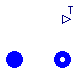
This component can be inserted in a hydraulic circuit to measure the temperature of the fluid flowing through it.
Flow reversal is supported.
| Type | Name | Description |
|---|---|---|
| FlangeA | inlet | |
| FlangeB | outlet | |
| output RealOutput | T |
model SensT "Temperature sensor for water-steam"
extends Icons.Water.SensThrough;
replaceable package Medium = StandardWater extends
Modelica.Media.Interfaces.PartialMedium "Medium model";
Medium.BaseProperties fluid;
ThermoPower.Water.FlangeA inlet(redeclare package Medium = Medium);
ThermoPower.Water.FlangeB outlet(redeclare package Medium = Medium);
Modelica.Blocks.Interfaces.RealOutput T;
equation
inlet.w + outlet.w = 0 "Mass balance";
inlet.p = outlet.p "No pressure drop";
// Set fluid properties
fluid.p=inlet.p;
fluid.h = if inlet.w >= 0 then inlet.hBA else inlet.hAB;
T = fluid.T;
// Boundary conditions
inlet.hAB = outlet.hAB;
inlet.hBA = outlet.hBA;
end SensT;
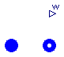
This component can be inserted in a hydraulic circuit to measure the flowrate of the fluid flowing through it.
Flow reversal is supported.
| Type | Name | Description |
|---|---|---|
| FlangeA | inlet | |
| FlangeB | outlet | |
| output RealOutput | w |
model SensW "Mass Flowrate sensor for water/steam"
extends Icons.Water.SensThrough;
replaceable package Medium = StandardWater extends
Modelica.Media.Interfaces.PartialMedium "Medium model";
ThermoPower.Water.FlangeA inlet(redeclare package Medium = Medium);
ThermoPower.Water.FlangeB outlet(redeclare package Medium = Medium);
Modelica.Blocks.Interfaces.RealOutput w;
equation
inlet.w + outlet.w = 0 "Mass balance";
// Boundary conditions
inlet.p = outlet.p;
inlet.hAB = outlet.hAB;
inlet.hBA = outlet.hBA;
w = inlet.w;
end SensW;
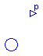
This component can be connected to any A-type or B-type connector to measure the pressure of the fluid flowing through it. In this case, it is possible to connect more than two Flange connectors together.
| Type | Name | Description |
|---|---|---|
| output RealOutput | p | |
| Flange | flange |
model SensP "Pressure sensor for water/steam flows"
extends Icons.Water.SensP;
replaceable package Medium = StandardWater extends
Modelica.Media.Interfaces.PartialMedium "Medium model";
Modelica.Blocks.Interfaces.RealOutput p;
Flange flange(redeclare package Medium = Medium);
equation
flange.w = 0;
p = flange.p;
end SensP;
This model describes a water-gas accumulator (the gas is modeled as ideal bi-atomic).
Water flows in and out through the interfaces at the component bottom (flow reversal supported).
The gas is supposed to flow in at constant temperature (parameter Tgin) and with variable flow-rate (GasInfl signal port), and to flow out by a valve operating in choked condition; the valve coefficient is determined by the working point at full opening (wg_out0,Tg0, Pg0) while the valve opening (in the range 0-1) is an input signal (OutletValveOpening signal port).
Dimensional parameters
| Type | Name | Default | Description |
|---|---|---|---|
| Volume | V | Total volume [m3] | |
| Volume | Vl0 | Water nominal volume (at reference level) [m3] | |
| Area | A | Cross Sectional Area [m2] | |
| Height | zl0 | Height of water reference level over inlet/outlet connectors [m] | |
| Height | zl_start | Water start level (relative to reference) [m] | |
| SpecificEnthalpy | hl_start | Water start specific enthalpy [J/kg] | |
| Pressure | pg_start | Gas start pressure [Pa] | |
| AbsoluteTemperature | Tg_start | 300 | Gas start temperature [K] |
| CoefficientOfHeatTransfer | gamma_ex | 50 | Water-Gas heat transfer coefficient [W/(m2.K)] |
| Temperature | Tgin | 300 | Inlet gas temperature [K] |
| MolarMass | MM | 29e-3 | Gas molar mass [kg/mol] |
| MassFlowRate | wg_out0 | Nominal gas outlet flowrate [kg/s] | |
| AbsoluteTemperature | Tg0 | 300 | Nominal gas temperature [K] |
| Pressure | pg0 | Nominal gas pressure [Pa] | |
| Temp | initOpt | Choices.Init.Options.noInit | Initialisation option |
| Type | Name | Description |
|---|---|---|
| input RealInput | GasInfl | |
| FlangeA | WaterInfl | |
| FlangeB | WaterOutfl | |
| input RealInput | OutletValveOpening |
model Accumulator "Water-Gas Accumulator"
extends ThermoPower.Icons.Water.Accumulator;
replaceable package Medium = StandardWater extends
Modelica.Media.Interfaces.PartialMedium "Liquid medium model";
Medium.BaseProperties liquid "Liquid properties";
parameter Volume V "Total volume";
parameter Volume Vl0 "Water nominal volume (at reference level)";
parameter Area A "Cross Sectional Area";
parameter Height zl0
"Height of water reference level over inlet/outlet connectors";
parameter Height zl_start "Water start level (relative to reference)";
parameter SpecificEnthalpy hl_start "Water start specific enthalpy";
parameter Pressure pg_start "Gas start pressure";
parameter AbsoluteTemperature Tg_start=300 "Gas start temperature";
parameter CoefficientOfHeatTransfer gamma_ex=50
"Water-Gas heat transfer coefficient";
parameter Temperature Tgin=300 "Inlet gas temperature";
parameter MolarMass MM=29e-3 "Gas molar mass";
parameter MassFlowRate wg_out0 "Nominal gas outlet flowrate";
parameter AbsoluteTemperature Tg0=300 "Nominal gas temperature";
parameter Pressure pg0 "Nominal gas pressure";
parameter Choices.Init.Options.Temp initOpt=Choices.Init.Options.noInit
"Initialisation option";
protected
constant Acceleration g=Modelica.Constants.g_n;
constant Real R=Modelica.Constants.R "Universal gas constant";
parameter SpecificHeatCapacityAtConstantPressure cpg = (7/2)*Rstar
"Cp of gas";
parameter SpecificHeatCapacityAtConstantVolume cvg = (5/2)*Rstar "Cv of gas";
parameter Real Rstar = R/MM "Gas constant";
parameter Real K = wg_out0/(pg0*sqrt(Tg0)) "Gas outlet flow coefficient";
public
MassFlowRate wl_in "Water inflow mass flow rate";
MassFlowRate wl_out "Water outflow mass flow rate";
Height zl(start=zl_start) "Water level (relative to reference)";
Medium.SpecificEnthalpy hl_in "Water inlet specific enthalpy";
Medium.SpecificEnthalpy hl_out "Water outlet specific enthalpy";
Medium.SpecificEnthalpy hl(start=hl_start, stateSelect=StateSelect.prefer)
"Water internal specific enthalpy";
Volume Vl "Volume occupied by water";
Mass Mg "Mass of gas";
Medium.AbsolutePressure pf "Water Pressure at the inlet/outlet flanges";
EnergyFlowRate Qp "Water-Gas heat flow";
MassFlowRate wg_in "Gas inflow mass flow rate";
MassFlowRate wg_out "Gas outflow mass flow rate";
GasDensity rhog(start=pg_start*MM/(R*Tg_start)) "Gas density";
Medium.Temperature Tg(start=Tg_start) "Gas temperature";
Volume Vg "Volume occupied by gas";
Medium.AbsolutePressure pg(start=pg_start) "Gas pressure";
Modelica.Blocks.Interfaces.RealInput GasInfl;
ThermoPower.Water.FlangeA WaterInfl(redeclare package Medium = Medium);
ThermoPower.Water.FlangeB WaterOutfl(redeclare package Medium = Medium);
Modelica.Blocks.Interfaces.RealInput OutletValveOpening;
equation
//Equations for water and gas volumes and exchanged thermal power
Vl = Vl0 + A*zl;
Vg = V - Vl;
Qp = gamma_ex*A*(liquid.T - Tg);
// Boundary conditions
// (Thermal effects of the water going out of the accumulator are neglected)
hl_in = if wl_in >= 0 then WaterInfl.hBA else hl;
hl_out = if wl_out >= 0 then WaterOutfl.hAB else hl;
WaterInfl.hAB = WaterOutfl.hAB;
WaterOutfl.hBA = WaterInfl.hBA;
wl_in = WaterInfl.w;
wl_out = WaterOutfl.w;
WaterInfl.p = pf;
WaterOutfl.p = pf;
liquid.d*A*der(zl) = wl_in + wl_out
"Water mass balance (density variations neglected)";
liquid.d*Vl*der(hl)-Vl*der(pg)-pg*der(Vl) = wl_in*(hl_in-hl) + wl_out*(hl_out-hl) - Qp
"Water energy balance";
// Set liquid properties
liquid.p=pg;
liquid.h=hl;
pf = pg + liquid.d*g*(zl + zl0) "Stevino's law";
wg_in =GasInfl "Gas inlet mass-flow rate";
//Gas outlet mass-flow rate
wg_out = -OutletValveOpening*K*pg*sqrt(Tg);
pg = rhog*Rstar*Tg "Gas state equation";
Mg=Vg*rhog "Gas mass";
der(Mg) = wg_in + wg_out "Gas mass balance";
rhog*Vg*cpg*der(Tg) = wg_in*cpg*(Tgin - Tg) + Vg*der(pg) + Qp
"Gas energy balance";
initial equation
if initOpt == Choices.Init.Options.noInit then
// do nothing
elseif initOpt == Choices.Init.Options.steadyState then
zl = zl_start;
der(Tg) = 0;
der(hl) = 0;
der(Vl) = 0;
elseif initOpt == Choices.Init.Options.steadyStateNoP then
zl = zl_start;
der(Tg) = 0;
der(hl) = 0;
else
assert(false, "Unsupported initialisation option");
end if;
end Accumulator;
Simplified model of a drum for drum boilers. This model assumes thermodynamic equilibrium between the liquid and vapour volumes. The model has two state variables (i.e., pressure and liquid volume).
| Type | Name | Default | Description |
|---|---|---|---|
| Volume | Vd | Drum volume [m3] | |
| Volume | Vdcr | Volume of downcomer and risers [m3] | |
| Mass | Mmd | Drum metal mass [kg] | |
| Mass | Mmdcr | Metal mass of downcomer and risers [kg] | |
| SpecificHeatCapacity | cm | Specific heat capacity of the metal [J/(kg.K)] | |
| Initialisation | |||
| Pressure | pstart | Pressure start value [Pa] | |
| Volume | Vldstart | Start value of drum water volume [m3] | |
| Temp | initOpt | Choices.Init.Options.noInit | Initialisation option |
| Type | Name | Description |
|---|---|---|
| FlangeA | feed | |
| FlangeB | steam | |
| HeatPort_a | heat | Metal wall thermal port |
model Drum2States
extends Icons.Water.Drum;
replaceable package Medium = StandardWater extends
Modelica.Media.Interfaces.PartialTwoPhaseMedium "Medium model";
parameter Volume Vd "Drum volume";
parameter Volume Vdcr "Volume of downcomer and risers";
parameter Mass Mmd "Drum metal mass";
parameter Mass Mmdcr "Metal mass of downcomer and risers";
parameter SpecificHeatCapacity cm "Specific heat capacity of the metal";
parameter Pressure pstart "Pressure start value";
parameter Volume Vldstart "Start value of drum water volume";
parameter Choices.Init.Options.Temp initOpt=Choices.Init.Options.noInit
"Initialisation option";
Medium.SaturationProperties sat "Saturation conditions";
FlangeA feed(redeclare package Medium = Medium);
FlangeB steam(redeclare package Medium = Medium);
Modelica.Thermal.HeatTransfer.Interfaces.HeatPort_a heat
"Metal wall thermal port";
Mass Ml "Liquid water mass";
Mass Mv "Steam mass";
Mass M "Total liquid+steam mass";
Energy E "Total energy";
Volume Vt "Total volume";
Volume Vl(start=Vldstart+Vdcr) "Liquid water total volume";
Volume Vld(start=Vldstart, stateSelect=StateSelect.prefer)
"Liquid water volume in the drum";
Volume Vv "Steam volume";
Medium.AbsolutePressure p(start=pstart,stateSelect=StateSelect.prefer)
"Drum pressure";
MassFlowRate qf "Feedwater mass flowrate";
MassFlowRate qs "Steam mass flowrate";
HeatFlowRate Q "Heat flow to the risers";
Medium.SpecificEnthalpy hf "Feedwater specific enthalpy";
Medium.SpecificEnthalpy hl "Specific enthalpy of saturated liquid";
Medium.SpecificEnthalpy hv "Specific enthalpy of saturated steam";
Medium.Temperature Ts "Saturation temperature";
Medium.Density rhol "Density of saturated liquid";
Medium.Density rhov "Density of saturated steam";
equation
Ml=Vl*rhol "Mass of liquid";
Mv=Vv*rhov "Mass of vapour";
M=Ml+Mv "Total mass";
E=Ml*hl+Mv*hv-p*Vt+(Mmd+Mmdcr)*cm*Ts "Total energy";
Ts=sat.Tsat "Saturation temperature";
der(M) = qf - qs "Mass balance";
der(E) = Q + qf*hf - qs*hv "Energy balance";
Vl = Vld+Vdcr "Liquid volume";
Vt = Vd + Vdcr "Total volume";
Vt = Vl + Vv "Total volume";
// Boundary conditions
p = feed.p;
p = steam.p;
hf = if feed.w >= 0 then feed.hBA else hl;
feed.w = qf;
-steam.w = qs;
feed.hAB = hl;
steam.hBA = hv;
Q =heat.Q_flow;
heat.T = Ts;
// Fluid properties
sat.psat=p;
sat.Tsat=Medium.saturationTemperature(p);
rhol=Medium.bubbleDensity(sat);
rhov=Medium.dewDensity(sat);
hl=Medium.bubbleEnthalpy(sat);
hv=Medium.dewEnthalpy(sat);
initial equation
if initOpt == Choices.Init.Options.noInit then
// do nothing
elseif initOpt == Choices.Init.Options.steadyState then
der(p) = 0;
der(Vld) = 0;
else
assert(false, "Unsupported initialisation option");
end if;
end Drum2States;
This model describes the cylindrical drum of a drum boiler, without assuming thermodynamic equilibrium between the liquid and vapour holdups. Connectors are provided for feedwater inlet, steam outlet, downcomer outlet, riser inlet, and blowdown outlet.
The model is based on dynamic mass and energy balance equations of the liquid volume and vapour volume inside the drum. Mass and energy tranfer between the two phases is provided by bulk condensation and surface condensation of the vapour phase, and by bulk boiling of the liquid phase. Additional energy transfer can take place at the surface if the steam is superheated.
The riser flowrate is separated before entering the drum, at the vapour pressure. The (saturated) liquid fraction goes into the liquid volume; the (wet) vapour fraction goes into the vapour volume, vith a steam quality depending on the liquid/vapour density ratio and on the avr parameter.
The enthalpy of the liquid going to the downcomer is computed by assuming that a fraction of the total mass flowrate (afd) comes directly from the feedwater inlet. The pressure at the downcomer connector is equal to the vapour pressure plus the liquid head.
The metal wall dynamics is taken into account, assuming uniform temperature. Heat transfer takes place between the metal wall and the liquid phase, vapour phase, and external atmosphere, the corresponding heat transfer coefficients being gl, gv, and gext.
The drum level is referenced to the centreline.
The start values of drum pressure, liquid specific enthalpy, vapour specific enthalpy, and metal wall temperature can be specified by setting the parameters pstart, hlstart, hvstart, Tmstart
Modelling options
The following options are available to specify the orientation of the cylindrical drum:
| Type | Name | Default | Description |
|---|---|---|---|
| Length | rint | 0 | Internal radius [m] |
| Length | rext | 0 | External radius [m] |
| Length | L | 0 | Length [m] |
| HeatCapacity | Cm | 0 | Total Heat Capacity of the metal wall [J/K] |
| Temperature | Text | 293 | External atmospheric temperature [K] |
| Time | tauev | 15 | Time constant of bulk evaporation [s] |
| Time | tauc | 15 | Time constant of bulk condensation [s] |
| Real | Kcs | 0 | Surface condensation coefficient [kg/(s.m^2.K)] |
| Real | Ks | 0 | Surface heat transfer coefficient [W/(m^2.K)] |
| CoefficientOfHeatTransfer | gext | 0 | Heat transfer coefficient between metal wall and external atmosphere [W/(m2.K)] |
| CoefficientOfHeatTransfer | gl | 200 | Heat transfer coefficient between metal wall and liquid phase [W/(m2.K)] |
| CoefficientOfHeatTransfer | gv | 200 | Heat transfer coefficient between metal wall and vapour phase [W/(m2.K)] |
| ThermalConductivity | lm | 20 | Metal wall thermal conductivity [W/(m.K)] |
| Real | afd | 0.05 | Ratio of feedwater in downcomer flowrate |
| Real | avr | 1.2 | Phase separation efficiency coefficient |
| Integer | DrumOrientation | 0 | 0: Horizontal; 1: Vertical |
| Initialisation | |||
| Pressure | pstart | 1e5 | Pressure start value [Pa] |
| SpecificEnthalpy | hlstart | 1e5 | Liquid enthalpy start value [J/kg] |
| SpecificEnthalpy | hvstart | 2.78e6 | Vapour enthalpy start value [J/kg] |
| Temperature | Tmstart | 300 | Metal wall temperature start value [K] |
| Length | ystart | 0 | Start level value [m] |
| Temp | initOpt | Choices.Init.Options.noInit | Initialisation option |
| Type | Name | Description |
|---|---|---|
| FlangeA | feedwater | |
| FlangeA | riser | |
| FlangeB | downcomer | |
| FlangeB | blowdown | |
| FlangeB | steam |
model Drum "Drum for circulation boilers"
extends Icons.Water.Drum;
replaceable package Medium = StandardWater extends
Modelica.Media.Interfaces.PartialTwoPhaseMedium "Medium model";
Medium.BaseProperties liquid;
Medium.BaseProperties vapour;
Medium.SaturationProperties sat;
parameter Length rint=0 "Internal radius";
parameter Length rext=0 "External radius";
parameter Length L=0 "Length";
parameter HeatCapacity Cm=0 "Total Heat Capacity of the metal wall";
parameter Temperature Text=293 "External atmospheric temperature";
parameter Time tauev=15 "Time constant of bulk evaporation";
parameter Time tauc=15 "Time constant of bulk condensation";
parameter Real Kcs=0 "Surface condensation coefficient [kg/(s.m^2.K)]";
parameter Real Ks=0 "Surface heat transfer coefficient [W/(m^2.K)]";
parameter CoefficientOfHeatTransfer gext=0
"Heat transfer coefficient between metal wall and external atmosphere";
parameter CoefficientOfHeatTransfer gl=200
"Heat transfer coefficient between metal wall and liquid phase";
parameter CoefficientOfHeatTransfer gv=200
"Heat transfer coefficient between metal wall and vapour phase";
parameter ThermalConductivity lm=20 "Metal wall thermal conductivity";
parameter Real afd=0.05 "Ratio of feedwater in downcomer flowrate";
parameter Real avr=1.2 "Phase separation efficiency coefficient";
parameter Integer DrumOrientation=0 "0: Horizontal; 1: Vertical";
parameter Pressure pstart=1e5 "Pressure start value";
parameter SpecificEnthalpy hlstart=1e5 "Liquid enthalpy start value";
parameter SpecificEnthalpy hvstart=2.78e6 "Vapour enthalpy start value";
parameter Temperature Tmstart=300 "Metal wall temperature start value";
parameter Length ystart=0 "Start level value";
parameter Choices.Init.Options.Temp initOpt=Choices.Init.Options.noInit
"Initialisation option";
constant Real g=Modelica.Constants.g_n;
constant Real pi=Modelica.Constants.pi;
Volume Vv(start=pi*rint^2*L/2) "Volume occupied by the vapour";
Volume Vl(start=pi*rint^2*L/2) "Volume occupied by the liquid";
Pressure p(start=pstart, stateSelect=StateSelect.prefer) "Surface pressure";
SpecificEnthalpy hl(start=hlstart, stateSelect=StateSelect.prefer)
"Liquid specific enthalpy";
SpecificEnthalpy hv(start=hvstart, stateSelect=StateSelect.prefer)
"Vapour specific enthalpy";
SpecificEnthalpy hrv
"Specific enthalpy of vapour from the risers after separation";
SpecificEnthalpy hrl
"Specific enthalpy of liquid from the risers after separation";
SpecificEnthalpy hls "Specific enthalpy of saturated liquid";
SpecificEnthalpy hvs "Specific enthalpy of saturated vapour";
SpecificEnthalpy hf "Specific enthalpy of feedwater";
SpecificEnthalpy hd "Specific enthalpy of liquid to the downcomers";
SpecificEnthalpy hvout "Specific enthalpy of steam at the outlet";
SpecificEnthalpy hr "Specific enthalpy of fluid from the risers";
MassFlowRate wf "Mass flowrate of feedwater";
MassFlowRate wd "Mass flowrate to the downcomers";
MassFlowRate wb "Mass flowrate of blowdown";
MassFlowRate wr "Mass flowrate from the risers";
MassFlowRate wrl "Mass flowrate of liquid from the risers";
MassFlowRate wrv "Mass flowrate of vapour from the risers";
MassFlowRate wv "Mass flowrate of steam at the outlet";
MassFlowRate wc "Mass flowrate of bulk condensation";
MassFlowRate wcs "Mass flowrate of surface condensation";
MassFlowRate wev "Mass flowrate of bulk evaporation";
AbsoluteTemperature Tl "Liquid temperature";
AbsoluteTemperature Tv "Vapour temperature";
AbsoluteTemperature Tm(start=Tmstart, stateSelect=StateSelect.prefer)
"Wall temperature";
AbsoluteTemperature Ts "Saturated water temperature";
Power Qmv "Heat flow from the wall to the vapour";
Power Qvl "Heat flow from the vapour to the liquid";
Power Qml "Heat flow from the wall to the liquid";
Power Qme "Heat flow from the wall to the atmosphere";
Mass Ml "Liquid mass";
Mass Mv "Vapour mass";
Energy El "Liquid internal energy";
Energy Ev "Vapour internal energy";
LiquidDensity rhol "Liquid density";
GasDensity rhov "Vapour density";
Real xl "Mass fraction of vapour in the liquid volume";
Real xv "Steam quality in the vapour volume";
Real xr "Steam quality of the fluid from the risers";
Real xrv "Steam quality of the separated steam from the risers";
Real gml "Total heat transfer coefficient (wall-liquid)";
Real gmv "Total heat transfer coefficient (wall-vapour)";
Real a;
Length y(start=ystart, stateSelect=StateSelect.prefer)
"Level (referred to the centreline)";
Area Aml "Surface of the wall-liquid interface";
Area Amv "Surface of the wall-vapour interface";
Area Asup "Surface of the liquid-vapour interface";
Area Aext "External drum surface";
FlangeA feedwater(p(start=pstart), hAB(start=hlstart),
redeclare package Medium = Medium);
FlangeA riser(p(start=pstart), hAB(start=hlstart),
redeclare package Medium = Medium);
FlangeB downcomer(p(start=pstart), hAB(start=hlstart),
redeclare package Medium = Medium);
FlangeB blowdown(p(start=pstart), hBA(start=hlstart),
redeclare package Medium = Medium);
FlangeB steam(p(start=pstart), hBA(start=hvstart),
redeclare package Medium = Medium);
equation
der(Mv)= wrv + wev - wv - wc - wcs "Vapour volume mass balance";
der(Ml)= wf + wrl + wc + wcs - wd - wb - wev "Liquid volume mass balance";
der(Ev)= wrv*hrv + (wev - wcs)*hvs - wc*hls - wv*hvout + Qmv - Qvl-p*der(Vv)
"Vapour volume energy balance";
der(El)= wf*hf + wrl*hrl + wc*hls + (wcs - wev)*hvs - wd*hd -wb*hl + Qml + Qvl-p*der(Vl)
"Liquid volume energy balance";
//Metal wall energy balance with singular cases
if Cm > 0 and (gl > 0 or gv > 0) then
Cm*der(Tm) = -Qml - Qmv - Qme "Metal wall dynamic energy balance";
elseif (gl > 0 or gv > 0) then
0 = -Qml - Qmv - Qme "Metal wall static energy balance";
else
Tm = 300 "Wall temperature doesn't matter";
end if;
Mv=Vv*rhov "Vapour volume mass";
Ml=Vl*rhol "Liquid volume mass";
Ev=Mv*vapour.u "Vapour volume energy";
El=Ml*liquid.u "Liquid volume energy";
wev = xl*rhol*Vl/tauev "Bulk evaporation flow rate in the liquid volume";
wc = (1 - xv)*rhov*Vv/tauc "Bulk condensation flow rate in the vapour volume";
wcs = Kcs*Asup*(Ts - Tl) "Surface condensation flow rate";
Qme = gext*Aext*(Tm - Text)
"Heat flow from metal wall to external environment";
Qml = gml*Aml*(Tm - Tl) "Heat flow from metal wall to liquid volume";
Qmv = gmv*Amv*(Tm - Tv) "Heat flow from metal wall to vapour volume";
Qvl = Ks*Asup*(Tv - Ts) "Heat flow from vapour to liquid volume";
xv = if hv >= hvs then 1 else (hv - hls)/(hvs - hls)
"Steam quality in the vapour volume";
xl = if hl <= hls then 0 else (hl - hls)/(hvs - hls)
"Steam quality in the liquid volume";
gml = if gl == 0 then 0 else 1/(1/gl + a*rint/lm)
"Total Heat conductance metal-liquid";
gmv = if gv == 0 then 0 else 1/(1/gv + a*rint/lm)
"Total Heat conductance metal-vapour";
a = rext^2/(rext^2 - rint^2)*log(rext/rint) - 0.5;
if DrumOrientation == 0 then
Vl = L*(rint^2*acos(-y/rint) + y*sqrt(rint^2 - y^2)) "Liquid volume";
Aml = 2*Vl/L + 2*rint*acos(-y/rint)*L "Metal-liquid interface area";
Asup = 2*sqrt(rint^2 - y^2)*L "Liquid-vapour interface area";
else
Vl = pi*rint^2*(y + L/2) "Liquid volume";
Aml = pi*rint^2 + 2*pi*rint*(y + L/2) "Metal-liquid interface area";
Asup = pi*rint^2 "Liquid-vapour interface area";
end if;
Vv = pi*rint^2*L - Vl "Vapour volume";
Amv = 2*pi*rint*L + 2*pi*rint^2 - Aml "Metal-vapour interface area";
Aext = 2*pi*rext^2 + 2*pi*rext*L "External metal surface area";
// Fluid properties
liquid.p=p;
liquid.h=hl;
Tl=liquid.T;
rhol=liquid.d;
vapour.p=p;
vapour.h=hv;
Tv=vapour.T;
rhov=vapour.d;
sat.psat=p;
sat.Tsat=Medium.saturationTemperature(p);
hls= Medium.bubbleEnthalpy(sat);
hvs= Medium.dewEnthalpy(sat);
Ts=sat.Tsat;
// Boundary conditions
feedwater.p = p;
feedwater.w = wf;
feedwater.hAB = hl;
hf = noEvent(if wf >= 0 then feedwater.hBA else hl);
downcomer.p = p + rhol*g*y;
downcomer.w = -wd;
downcomer.hBA = hd;
hd = noEvent(if wd >= 0 then afd*hf + (1 - afd)*hl else downcomer.hAB);
blowdown.p = p;
blowdown.w = -wb;
blowdown.hBA = hl;
riser.p = p;
riser.w = wr;
riser.hAB = hl;
hrv = hls + xrv*(hvs - hls);
xrv = 1 - (rhov/rhol)^avr;
hr=noEvent(if wr>=0 then riser.hBA else hl);
xr=noEvent(if wr>=0 then (if hr>hls then (hr - hls)/(hvs - hls) else 0) else xl);
hrl=noEvent(if wr>=0 then (if hr>hls then hls else hr) else hl);
wrv=noEvent(if wr>=0 then xr*wr/xrv else 0);
wrl=wr-wrv;
steam.p = p;
steam.w = -wv;
steam.hBA = hv;
hvout = noEvent(if wv >= 0 then hv else steam.hAB);
initial equation
if initOpt == Choices.Init.Options.noInit then
// do nothing
elseif initOpt == Choices.Init.Options.steadyState then
der(p) = 0;
der(hl) = 0;
der(hv) = 0;
der(y) = 0;
if Cm > 0 and (gl > 0 or gv > 0) then
der(Tm)=0;
end if;
elseif initOpt == Choices.Init.Options.steadyStateNoP then
der(hl) = 0;
der(hv) = 0;
der(y) = 0;
if Cm > 0 and (gl > 0 or gv > 0) then
der(Tm)=0;
end if;
else
assert(false, "Unsupported initialisation option");
end if;
end Drum;
This very simple model provides a pressure drop which is proportional to the flowrate and to the cmd signal, without computing any fluid property.
| Type | Name | Default | Description |
|---|---|---|---|
| HydraulicConductance | Kv | Nominal hydraulic conductance [(kg/s)/Pa] |
| Type | Name | Description |
|---|---|---|
| FlangeA | inlet | |
| FlangeB | outlet | |
| input RealInput | cmd |
model ValveLin
"Valve for water/steam flows with linear pressure drop"
extends Icons.Water.Valve;
replaceable package Medium = StandardWater extends
Modelica.Media.Interfaces.PartialMedium "Medium model";
parameter HydraulicConductance Kv "Nominal hydraulic conductance";
MassFlowRate w "Mass flowrate";
FlangeA inlet(redeclare package Medium = Medium);
FlangeB outlet(redeclare package Medium = Medium);
Modelica.Blocks.Interfaces.RealInput cmd;
equation
inlet.w + outlet.w = 0 "Mass balance";
w = Kv*cmd *(inlet.p - outlet.p) "Valve characteristics";
// Boundary conditions
w = inlet.w;
inlet.hAB = outlet.hAB;
inlet.hBA = outlet.hBA;
end ValveLin;
This is the base model for the ValveLiq, ValveLiqChoked, and ValveVap valve models. The model is based on the IEC 534 / ISA S.75 standards for valve sizing.
The model optionally supports reverse flow conditions (assuming symmetrical behaviour) or check valve operation, and has been suitably modified to avoid numerical singularities at zero pressure drop.
Modelling options
The following options are available to specify the valve flow coefficient in fully open conditions:
The nominal pressure drop dpnom must always be specified; to avoid numerical singularities, the flow characteristic is modified for pressure drops less than b*dpnom (the default value is 1% of the nominal pressure drop). Increase this parameter if numerical instabilities occur in valves with very low pressure drops.
If CheckValve is true, then the flow is stopped when the outlet pressure is higher than the inlet pressure; otherwise, reverse flow takes place.
The default flow characteristic FlowChar is linear; it can be replaced by functions taken from Functions.ValveCharacteristics, or by any suitable user-defined function extending Functions.ValveCharacteristics.baseFun.
| Type | Name | Default | Description |
|---|---|---|---|
| Temp | CvData | CvTypes.Av | Selection of flow coefficient |
| Boolean | CheckValve | false | Reverse flow stopped |
| Real | b | 0.01 | Regularisation factor |
| Flow Coefficient | |||
| Area | Av | 0 | Av (metric) flow coefficient [m2] |
| Real | Kv | 0 | Kv (metric) flow coefficient [m^3/h] |
| Real | Cv | 0 | Cv (US) flow coefficient [USG/min] |
| Nominal operating point | |||
| Real | pnom | Nominal inlet pressure | |
| Pressure | dpnom | Nominal pressure drop [Pa] | |
| MassFlowRate | wnom | Nominal mass flowrate [kg/s] | |
| Density | rhonom | 1000 | Nominal density [kg/m3] |
| Real | thetanom | 1 | Nominal valve opening |
| Initialisation | |||
| Pressure | pin_start | pnom | Inlet pressure start value [Pa] |
| Pressure | pout_start | pnom - dpnom | Inlet pressure start value [Pa] |
| SpecificEnthalpy | hstart | 1e5 | Specific enthalpy start value [J/kg] |
| Type | Name | Description |
|---|---|---|
| FlangeA | inlet | |
| FlangeB | outlet | |
| input RealInput | theta | Valve opening in per unit |
partial model ValveBase "Base model for valves"
extends Icons.Water.Valve;
import ThermoPower.Choices.Valve.CvTypes;
replaceable package Medium = StandardWater extends
Modelica.Media.Interfaces.PartialMedium "Medium model";
Medium.BaseProperties fluid(p(start=pin_start), h(start=hstart));
parameter CvTypes.Temp CvData = CvTypes.Av "Selection of flow coefficient";
parameter Area Av(fixed = if CvData==CvTypes.Av then true else false,
start = wnom/(sqrt(rhonom*dpnom))*FlowChar(thetanom))=0
"Av (metric) flow coefficient";
parameter Real Kv(unit="m^3/h")=0 "Kv (metric) flow coefficient";
parameter Real Cv(unit="USG/min")=0 "Cv (US) flow coefficient";
parameter Real pnom "Nominal inlet pressure";
parameter Pressure dpnom "Nominal pressure drop";
parameter MassFlowRate wnom "Nominal mass flowrate";
parameter Density rhonom = 1000 "Nominal density";
parameter Real thetanom = 1 "Nominal valve opening";
parameter Boolean CheckValve=false "Reverse flow stopped";
parameter Real b=0.01 "Regularisation factor";
replaceable function FlowChar = Functions.ValveCharacteristics.linear
extends Functions.ValveCharacteristics.baseFun "Flow characteristic";
parameter Pressure pin_start = pnom "Inlet pressure start value";
parameter Pressure pout_start = pnom-dpnom "Inlet pressure start value";
parameter SpecificEnthalpy hstart=1e5 "Specific enthalpy start value";
MassFlowRate w "Mass flow rate";
LiquidDensity rho "Inlet density";
Medium.Temperature Tin;
Pressure dp "Pressure drop across the valve";
protected
function sqrtR = Functions.sqrtReg(delta = b*dpnom);
public
FlangeA inlet(w(start=wnom),p(start=pin_start),redeclare package Medium = Medium);
FlangeB outlet(w(start=-wnom),p(start=pout_start),redeclare package Medium = Medium);
Modelica.Blocks.Interfaces.RealInput theta "Valve opening in per unit";
initial equation
if CvData == CvTypes.Kv then
Av = 2.7778e-5*Kv;
elseif CvData == CvTypes.Cv then
Av = 2.4027e-5*Cv;
end if;
assert(CvData>=0 and CvData<=3, "Invalid CvData");
equation
inlet.w + outlet.w = 0 "Mass balance";
w = inlet.w;
// Fluid properties
fluid.p = inlet.p;
fluid.h = inlet.hBA;
Tin = fluid.T;
rho = fluid.d;
// Energy balance
inlet.hAB = outlet.hAB;
inlet.hBA = outlet.hBA;
dp = inlet.p - outlet.p "Definition of dp";
end ValveBase;
Liquid water valve model according to the IEC 534/ISA S.75 standards for valve sizing, incompressible fluid.
Extends the ValveBase model (see the corresponding documentation for common valve features).
| Type | Name | Default | Description |
|---|---|---|---|
| replaceable package Medium | StandardWater | Medium model | |
| Temp | CvData | CvTypes.Av | Selection of flow coefficient |
| Boolean | CheckValve | false | Reverse flow stopped |
| Real | b | 0.01 | Regularisation factor |
| replaceable function FlowChar | Functions.ValveCharacteristi... | Flow characteristic | |
| Flow Coefficient | |||
| Area | Av | 0 | Av (metric) flow coefficient [m2] |
| Real | Kv | 0 | Kv (metric) flow coefficient [m^3/h] |
| Real | Cv | 0 | Cv (US) flow coefficient [USG/min] |
| Nominal operating point | |||
| Real | pnom | Nominal inlet pressure | |
| Pressure | dpnom | Nominal pressure drop [Pa] | |
| MassFlowRate | wnom | Nominal mass flowrate [kg/s] | |
| Density | rhonom | 1000 | Nominal density [kg/m3] |
| Real | thetanom | 1 | Nominal valve opening |
| Initialisation | |||
| Pressure | pin_start | pnom | Inlet pressure start value [Pa] |
| Pressure | pout_start | pnom - dpnom | Inlet pressure start value [Pa] |
| SpecificEnthalpy | hstart | 1e5 | Specific enthalpy start value [J/kg] |
| Type | Name | Description |
|---|---|---|
| FlangeA | inlet | |
| FlangeB | outlet | |
| input RealInput | theta | Valve opening in per unit |
model ValveLiq "Valve for liquid water flow"
extends ValveBase;
import ThermoPower.Choices.Valve.CvTypes;
initial equation
if CvData == CvTypes.OpPoint then
wnom = FlowChar(thetanom)*Av*sqrt(rhonom)*sqrtR(dpnom)
"Determination of Av by the operating point";
end if;
equation
if CheckValve then
w = FlowChar(theta)*Av*sqrt(rho)*smooth(0,if dp>=0 then sqrtR(dp) else 0);
else
w = FlowChar(theta)*Av*sqrt(rho)*sqrtR(dp);
end if;
end ValveLiq;
Liquid water valve model according to the IEC 534/ISA S.75 standards for valve sizing, compressible fluid.
Extends the ValveBase model (see the corresponding documentation for common valve features).
The product Fk*xt is given by the parameter Fxt_full, and is assumed constant by default. The relative change (per unit) of the xt coefficient with the valve opening can be specified by customising the xtfun function.
| Type | Name | Default | Description |
|---|---|---|---|
| replaceable package Medium | StandardWater | Medium model | |
| Temp | CvData | CvTypes.Av | Selection of flow coefficient |
| Boolean | CheckValve | false | Reverse flow stopped |
| Real | b | 0.01 | Regularisation factor |
| replaceable function FlowChar | Functions.ValveCharacteristi... | Flow characteristic | |
| Real | Fxt_full | 0.5 | Fk*xt critical ratio at full opening |
| Flow Coefficient | |||
| Area | Av | 0 | Av (metric) flow coefficient [m2] |
| Real | Kv | 0 | Kv (metric) flow coefficient [m^3/h] |
| Real | Cv | 0 | Cv (US) flow coefficient [USG/min] |
| Nominal operating point | |||
| Real | pnom | Nominal inlet pressure | |
| Pressure | dpnom | Nominal pressure drop [Pa] | |
| MassFlowRate | wnom | Nominal mass flowrate [kg/s] | |
| Density | rhonom | 1000 | Nominal density [kg/m3] |
| Real | thetanom | 1 | Nominal valve opening |
| Initialisation | |||
| Pressure | pin_start | pnom | Inlet pressure start value [Pa] |
| Pressure | pout_start | pnom - dpnom | Inlet pressure start value [Pa] |
| SpecificEnthalpy | hstart | 1e5 | Specific enthalpy start value [J/kg] |
| Type | Name | Description |
|---|---|---|
| FlangeA | inlet | |
| FlangeB | outlet | |
| input RealInput | theta | Valve opening in per unit |
model ValveVap "Valve for steam flow"
extends ValveBase;
import ThermoPower.Choices.Valve.CvTypes;
parameter Real Fxt_full=0.5 "Fk*xt critical ratio at full opening";
replaceable function xtfun = Functions.ValveCharacteristics.one
extends Functions.ValveCharacteristics.baseFun
"Critical ratio characteristic";
Real x "Pressure drop ratio";
Real xs "Saturated pressure drop ratio";
Real Y "Compressibility factor";
Real Fxt "Fxt coefficient";
Medium.AbsolutePressure p "Inlet pressure";
protected
parameter Real Fxt_nom(fixed=false) "Nominal Fxt";
parameter Real x_nom(fixed=false) "Nominal pressure drop ratio";
parameter Real xs_nom(fixed=false) "Nominal saturated pressure drop ratio";
parameter Real Y_nom(fixed=false) "Nominal compressibility factor";
initial equation
if CvData == CvTypes.OpPoint then
// Determination of Av by the nominal operating point conditions
Fxt_nom = Fxt_full*xtfun(thetanom);
x_nom = dpnom/pnom;
xs_nom = smooth(0, if x_nom > Fxt_nom then Fxt_nom else x_nom);
Y_nom = 1 - abs(xs_nom)/(3*Fxt_nom);
wnom = FlowChar(thetanom)*Av*Y_nom*sqrt(rhonom)*sqrtR(pnom*xs_nom);
else
// Dummy values
Fxt_nom = 0;
x_nom = 0;
xs_nom = 0;
Y_nom = 0;
end if;
equation
p = noEvent(if dp>=0 then inlet.p else outlet.p);
Fxt = Fxt_full*xtfun(theta);
x = dp/p;
xs = smooth(0, if x < -Fxt then -Fxt else if x > Fxt then Fxt else x);
Y = 1 - abs(xs)/(3*Fxt);
if CheckValve then
w = FlowChar(theta)*Av*Y*sqrt(rho)*
smooth(0,if xs>=0 then sqrtR(p*xs) else 0);
else
w = FlowChar(theta)*Av*Y*sqrt(rho)*sqrtR(p*xs);
end if;
end ValveVap;
Liquid water valve model according to the IEC 534/ISA S.75 standards for valve sizing, incompressible fluid, with possible choked flow conditions.
Extends the ValveBase model (see the corresponding documentation for common valve features).
The model operating range includes choked flow operation, which takes place for low outlet pressures due to flashing in the vena contracta; otherwise, non-choking conditions are assumed.
The default liquid pressure recovery coefficient Fl is constant and given by the parameter Flnom. The relative change (per unit) of the recovery coefficient can be specified as a given function of the valve opening by customising the Flfun function.
If the flow coefficient is specified in terms of a nominal operating point, this should be in non-chocked conditions.
| Type | Name | Default | Description |
|---|---|---|---|
| Temp | CvData | CvTypes.Av | Selection of flow coefficient |
| Boolean | CheckValve | false | Reverse flow stopped |
| Real | b | 0.01 | Regularisation factor |
| replaceable function FlowChar | Functions.ValveCharacteristi... | Flow characteristic | |
| Real | Flnom | 0.9 | Liquid pressure recovery factor |
| Flow Coefficient | |||
| Area | Av | 0 | Av (metric) flow coefficient [m2] |
| Real | Kv | 0 | Kv (metric) flow coefficient [m^3/h] |
| Real | Cv | 0 | Cv (US) flow coefficient [USG/min] |
| Nominal operating point | |||
| Real | pnom | Nominal inlet pressure | |
| Pressure | dpnom | Nominal pressure drop [Pa] | |
| MassFlowRate | wnom | Nominal mass flowrate [kg/s] | |
| Density | rhonom | 1000 | Nominal density [kg/m3] |
| Real | thetanom | 1 | Nominal valve opening |
| Initialisation | |||
| Pressure | pin_start | pnom | Inlet pressure start value [Pa] |
| Pressure | pout_start | pnom - dpnom | Inlet pressure start value [Pa] |
| SpecificEnthalpy | hstart | 1e5 | Specific enthalpy start value [J/kg] |
| Type | Name | Description |
|---|---|---|
| FlangeA | inlet | |
| FlangeB | outlet | |
| input RealInput | theta | Valve opening in per unit |
model ValveLiqChoked
"Valve for liquid water flow, allows choked flow conditions"
extends ValveBase(redeclare replaceable package Medium = StandardWater extends
Modelica.Media.Interfaces.PartialTwoPhaseMedium);
import ThermoPower.Choices.Valve.CvTypes;
parameter Real Flnom=0.9 "Liquid pressure recovery factor";
replaceable function Flfun = Functions.ValveCharacteristics.one
extends Functions.ValveCharacteristics.baseFun
"Pressure recovery characteristic";
MassFlowRate w "Mass flowrate";
Real Ff "Ff coefficient (see IEC/ISA standard)";
Real Fl "Pressure recovery coefficient Fl (see IEC/ISA standard)";
AbsolutePressure pv "Saturation pressure";
Pressure dpEff "Effective pressure drop";
initial equation
if CvData == CvTypes.OpPoint then
wnom = FlowChar(theta)*Av*sqrt(rhonom)*sqrtR(dpnom)
"Determination of Av by the operating point";
end if;
equation
pv = Medium.saturationPressure(Tin);
Ff = 0.96 - 0.28*sqrt(pv/Medium.fluidConstants[1].criticalPressure);
Fl = Flnom*Flfun(theta);
dpEff = if outlet.p < (1 - Fl^2)*inlet.p + Ff*Fl^2*pv then
Fl^2*(inlet.p - Ff*pv) else inlet.p - outlet.p
"Effective pressure drop, accounting for possible choked conditions";
if CheckValve then
w = FlowChar(theta)*Av*sqrt(rho)*
(if dpEff>=0 then sqrtR(dpEff) else 0);
else
w = FlowChar(theta)*Av*sqrt(rho)*sqrtR(dpEff);
end if;
end ValveLiqChoked;
This is the base model for the Pump and PumpMech pump models.
The model describes a centrifugal pump, or a group of Np identical pumps in parallel. The pump model is based on the theory of kinematic similarity: the pump characteristics are given for nominal operating conditions (rotational speed and fluid density), and then adapted to actual operating condition, according to the similarity equations.
In order to avoid singularities in the computation of the outlet enthalpy at zero flowrate, the thermal capacity of the fluid inside the pump body can be taken into account.
The model can either support reverse flow conditions or include a built-in check valve to avoid flow reversal.
Modelling options
The nominal hydraulic characteristic (head vs. volume flow rate) is given by the the replaceable function flowCharacteristic.
The pump energy balance can be specified in two alternative ways:
Several functions are provided in the package Functions.PumpCharacteristics to specify the characteristics as a function of some operating points at nominal conditions.
Depending on the value of the checkValve parameter, the model either supports reverse flow conditions, or includes a built-in check valve to avoid flow reversal.
If the in_Np input connector is wired, it provides the number of pumps in parallel; otherwise, Np0 parallel pumps are assumed.
It is possible to take into account the heat capacity of the fluid inside the pump by specifying its volume V at nominal conditions; this is necessary to avoid singularities in the computation of the outlet enthalpy in case of zero flow rate. If zero flow rate conditions are always avoided, this dynamic effect can be neglected by leaving the default value V = 0, thus avoiding a fast state variable in the model.
The CheckValve parameter determines whether the pump has a built-in check valve or not.
If computeNPSHa = true, the available net positive suction head is also computed; this requires a two-phase medium model to provide the fluid saturation pressure.
| Type | Name | Default | Description |
|---|---|---|---|
| Integer | Np0 | 1 | Nominal number of pumps in parallel |
| Volume | V | 0 | Pump Internal Volume [m3] |
| Boolean | CheckValve | false | Reverse flow stopped |
| Characteristics | |||
| Boolean | usePowerCharacteristic | false | Use powerCharacteristic (vs. efficiencyCharacteristic) |
| Density | rho0 | 1000 | Nominal Liquid Density [kg/m3] |
| AngularVelocity_rpm | n0 | Nominal rotational speed [rev/min] | |
| Initialisation | |||
| Pressure | pin_start | Inlet Pressure Start Value [Pa] | |
| Pressure | pout_start | Outlet Pressure Start Value [Pa] | |
| MassFlowRate | wstart | Mass Flow Rate Start Value [kg/s] | |
| SpecificEnthalpy | hstart | 1e5 | Fluid Specific Enthalpy Start Value [J/kg] |
| Temp | initOpt | Choices.Init.Options.noInit | Initialisation option |
| Type | Name | Description |
|---|---|---|
| FlangeA | infl | |
| FlangeB | outfl | |
| input IntegerInput | in_Np | Number of parallel pumps |
partial model PumpBase "Base model for centrifugal pumps"
extends Icons.Water.Pump;
import Modelica.SIunits.Conversions.NonSIunits.*;
replaceable package Medium = StandardWater extends
Modelica.Media.Interfaces.PartialMedium "Medium model";
Medium.BaseProperties inletFluid(p(start=pin_start),h(start=hstart))
"Fluid properties at the inlet";
replaceable function flowCharacteristic =
Functions.PumpCharacteristics.baseFlow
"Head vs. q_flow characteristic at nominal speed and density";
parameter Boolean usePowerCharacteristic = false
"Use powerCharacteristic (vs. efficiencyCharacteristic)";
replaceable function powerCharacteristic =
Functions.PumpCharacteristics.constantPower
extends Functions.PumpCharacteristics.basePower
"Power consumption vs. q_flow at nominal speed and density";
replaceable function efficiencyCharacteristic =
Functions.PumpCharacteristics.constantEfficiency(eta_nom = 0.8)
extends Functions.PumpCharacteristics.baseEfficiency
"Efficiency vs. q_flow at nominal speed and density";
parameter Integer Np0(min=1) = 1 "Nominal number of pumps in parallel";
parameter Density rho0=1000 "Nominal Liquid Density";
parameter AngularVelocity_rpm n0 "Nominal rotational speed";
parameter Volume V=0 "Pump Internal Volume";
parameter Boolean CheckValve=false "Reverse flow stopped";
parameter Pressure pin_start "Inlet Pressure Start Value";
parameter Pressure pout_start "Outlet Pressure Start Value";
parameter MassFlowRate wstart "Mass Flow Rate Start Value";
parameter SpecificEnthalpy hstart=1e5 "Fluid Specific Enthalpy Start Value";
parameter Choices.Init.Options.Temp initOpt=Choices.Init.Options.noInit
"Initialisation option";
constant Acceleration g=Modelica.Constants.g_n;
MassFlowRate w_single(start = wstart/Np0) "Mass flow rate (single pump)";
MassFlowRate w = Np*w_single "Mass flow rate (total)";
VolumeFlowRate q_single(start = wstart/(Np0*rho0))
"Volume flow rate (single pump)";
VolumeFlowRate q=Np*q_single "Volume flow rate (totale)";
Pressure dp "Outlet pressure minus inlet pressure";
Height head = dp/(rho*g) "Pump head";
Medium.SpecificEnthalpy h(start=hstart) "Fluid specific enthalpy";
Medium.SpecificEnthalpy hin(start=hstart) "Enthalpy of entering fluid";
Medium.SpecificEnthalpy hout(start=hstart) "Enthalpy of outgoing fluid";
LiquidDensity rho "Liquid density";
Medium.Temperature Tin "Liquid inlet temperature";
AngularVelocity_rpm n "Shaft r.p.m.";
Integer Np(min=1) "Number of pumps in parallel";
Power W_single "Power Consumption (single pump)";
Power W = Np*W_single "Power Consumption (total)";
constant Power W_eps=1e-8
"Small coefficient to avoid numerical singularities";
constant AngularVelocity_rpm n_eps=1e-6;
Real eta "Pump efficiency";
Real s "Auxiliary Variable";
FlangeA infl(p(start=pin_start),hAB(start=hstart),
redeclare package Medium = Medium);
FlangeB outfl(p(start=pout_start),hBA(start=hstart),
redeclare package Medium = Medium);
Modelica.Blocks.Interfaces.IntegerInput in_Np "Number of parallel pumps";
equation
// Number of pumps in parallel
Np = in_Np;
if cardinality(in_Np)==0 then
in_Np = Np0 "Number of pumps selected by parameter";
end if;
// Flow equations
q_single = w_single/rho;
if noEvent(s > 0 or (not CheckValve)) then
// Flow characteristics when check valve is open
q_single = s;
head = (n/n0)^2*flowCharacteristic(q_single*n0/(n+n_eps));
else
// Flow characteristics when check valve is closed
head = (n/n0)^2*flowCharacteristic(0) - s;
q_single = 0;
end if;
// Power consumption
if usePowerCharacteristic then
W_single = (n/n0)^3*(rho/rho0)*powerCharacteristic(q_single*n0/(n+n_eps))
"Power consumption (single pump)";
eta = (dp*q_single)/(W_single + W_eps) "Hydraulic efficiency";
else
eta = efficiencyCharacteristic(q_single*n0/(n+n_eps));
W_single = dp*q_single/eta;
end if;
// Fluid properties
inletFluid.p=infl.p;
inletFluid.h=hin;
rho = inletFluid.d;
Tin = inletFluid.T;
// Boundary conditions
dp = outfl.p - infl.p;
w = infl.w "Pump total flow rate";
if w >= 0 then
hin = infl.hBA;
else
hin = outfl.hAB;
end if;
infl.hAB = hout;
outfl.hBA = hout;
h = hout;
// Mass and energy balances
infl.w + outfl.w = 0 "Mass balance";
if V>0 then
(rho*V*der(h)) = (outfl.w/Np)*hout + (infl.w/Np)*hin + W_single
"Energy balance";
else
0 = (outfl.w/Np)*hout + (infl.w/Np)*hin + W_single "Energy balance";
end if;
initial equation
if initOpt == Choices.Init.Options.noInit then
// do nothing
elseif initOpt == Choices.Init.Options.steadyState then
if V>0 then
der(h)=0;
end if;
else
assert(false, "Unsupported initialisation option");
end if;
end PumpBase;
This model describes a centrifugal pump (or a group of Np pumps in parallel) with controlled speed, either fixed or provided by an external signal.
The model extends PumpBase
If the in_n input connector is wired, it provides rotational speed of the pumps (rpm); otherwise, a constant rotational speed equal to n_const (which can be different from n0) is assumed.
| Type | Name | Default | Description |
|---|---|---|---|
| replaceable package Medium | StandardWater | Medium model | |
| Integer | Np0 | 1 | Nominal number of pumps in parallel |
| Volume | V | 0 | Pump Internal Volume [m3] |
| Boolean | CheckValve | false | Reverse flow stopped |
| AngularVelocity_rpm | n_const | n0 | Constant rotational speed [rev/min] |
| Characteristics | |||
| replaceable function flowCharacteristic | Functions.PumpCharacteristic... | Head vs. q_flow characteristic at nominal speed and density | |
| Boolean | usePowerCharacteristic | false | Use powerCharacteristic (vs. efficiencyCharacteristic) |
| replaceable function powerCharacteristic | Functions.PumpCharacteristic... | Power consumption vs. q_flow at nominal speed and density | |
| replaceable function efficiencyCharacteristic | Functions.PumpCharacteristic... | Efficiency vs. q_flow at nominal speed and density | |
| Density | rho0 | 1000 | Nominal Liquid Density [kg/m3] |
| AngularVelocity_rpm | n0 | Nominal rotational speed [rev/min] | |
| Initialisation | |||
| Pressure | pin_start | Inlet Pressure Start Value [Pa] | |
| Pressure | pout_start | Outlet Pressure Start Value [Pa] | |
| MassFlowRate | wstart | Mass Flow Rate Start Value [kg/s] | |
| SpecificEnthalpy | hstart | 1e5 | Fluid Specific Enthalpy Start Value [J/kg] |
| Temp | initOpt | Choices.Init.Options.noInit | Initialisation option |
| Type | Name | Description |
|---|---|---|
| FlangeA | infl | |
| FlangeB | outfl | |
| input IntegerInput | in_Np | Number of parallel pumps |
| input RealInput | in_n | RPM |
model Pump "Centrifugal pump with ideally controlled speed"
extends PumpBase;
import Modelica.SIunits.Conversions.NonSIunits.*;
parameter AngularVelocity_rpm n_const=n0 "Constant rotational speed";
Modelica.Blocks.Interfaces.RealInput in_n "RPM";
equation
n = in_n "Rotational speed";
if cardinality(in_n)==0 then
in_n = n_const "Rotational speed provided by parameter";
end if;
end Pump;
| Type | Name | Default | Description |
|---|---|---|---|
| Integer | Np0 | 1 | Nominal number of pumps in parallel |
| Volume | V | 0 | Pump Internal Volume [m3] |
| Boolean | CheckValve | false | Reverse flow stopped |
| AngularVelocity_rpm | n_const | n0 | Constant rotational speed [rev/min] |
| Characteristics | |||
| replaceable function flowCharacteristic | Functions.PumpCharacteristic... | Head vs. q_flow characteristic at nominal speed and density | |
| Boolean | usePowerCharacteristic | false | Use powerCharacteristic (vs. efficiencyCharacteristic) |
| replaceable function powerCharacteristic | Functions.PumpCharacteristic... | Power consumption vs. q_flow at nominal speed and density | |
| replaceable function efficiencyCharacteristic | Functions.PumpCharacteristic... | Efficiency vs. q_flow at nominal speed and density | |
| Density | rho0 | 1000 | Nominal Liquid Density [kg/m3] |
| AngularVelocity_rpm | n0 | Nominal rotational speed [rev/min] | |
| Initialisation | |||
| Pressure | pin_start | Inlet Pressure Start Value [Pa] | |
| Pressure | pout_start | Outlet Pressure Start Value [Pa] | |
| MassFlowRate | wstart | Mass Flow Rate Start Value [kg/s] | |
| SpecificEnthalpy | hstart | 1e5 | Fluid Specific Enthalpy Start Value [J/kg] |
| Temp | initOpt | Choices.Init.Options.noInit | Initialisation option |
| Type | Name | Description |
|---|---|---|
| FlangeA | infl | |
| FlangeB | outfl | |
| input IntegerInput | in_Np | Number of parallel pumps |
| input RealInput | in_n | RPM |
model PumpNPSH
extends Pump(redeclare replaceable package Medium =
Modelica.Media.Interfaces.PartialTwoPhaseMedium);
Height NPSHa "Net Positive Suction Head available";
Medium.AbsolutePressure pv "Saturated liquid pressure";
equation
pv=Medium.saturationPressure(inletFluid.T);
NPSHa=(infl.p-pv)/(rho*g);
end PumpNPSH;
This model describes a centrifugal pump (or a group of Np pumps in parallel) with a mechanical rotational connector for the shaft, to be used when the pump drive has to be modelled explicitly. In the case of Np pumps in parallel, the mechanical connector is relative to a single pump.
The model extends PumpBase
| Type | Name | Default | Description |
|---|---|---|---|
| replaceable package Medium | StandardWater | Medium model | |
| Integer | Np0 | 1 | Nominal number of pumps in parallel |
| Volume | V | 0 | Pump Internal Volume [m3] |
| Boolean | CheckValve | false | Reverse flow stopped |
| Characteristics | |||
| replaceable function flowCharacteristic | Functions.PumpCharacteristic... | Head vs. q_flow characteristic at nominal speed and density | |
| Boolean | usePowerCharacteristic | false | Use powerCharacteristic (vs. efficiencyCharacteristic) |
| replaceable function powerCharacteristic | Functions.PumpCharacteristic... | Power consumption vs. q_flow at nominal speed and density | |
| replaceable function efficiencyCharacteristic | Functions.PumpCharacteristic... | Efficiency vs. q_flow at nominal speed and density | |
| Density | rho0 | 1000 | Nominal Liquid Density [kg/m3] |
| AngularVelocity_rpm | n0 | Nominal rotational speed [rev/min] | |
| Initialisation | |||
| Pressure | pin_start | Inlet Pressure Start Value [Pa] | |
| Pressure | pout_start | Outlet Pressure Start Value [Pa] | |
| MassFlowRate | wstart | Mass Flow Rate Start Value [kg/s] | |
| SpecificEnthalpy | hstart | 1e5 | Fluid Specific Enthalpy Start Value [J/kg] |
| Temp | initOpt | Choices.Init.Options.noInit | Initialisation option |
| Type | Name | Description |
|---|---|---|
| FlangeA | infl | |
| FlangeB | outfl | |
| input IntegerInput | in_Np | Number of parallel pumps |
| Flange_a | MechPort |
model PumpMech "Centrifugal pump with mechanical connector for the shaft" extends PumpBase; extends Icons.Water.PumpMech; Angle phi "Shaft angle"; AngularVelocity omega "Shaft angular velocity"; Modelica.Mechanics.Rotational.Interfaces.Flange_a MechPort; equation // Mechanical boundary condition phi = MechPort.phi; omega = der(phi); W = omega*MechPort.tau; n = Modelica.SIunits.Conversions.to_rpm(omega) "Rotational speed"; end PumpMech;
Chen's correlation for the computation of the heat transfer coefficient in two-phase flows.
Revision history:
| Type | Name | Default | Description |
|---|---|---|---|
| MassFlowRate | w | Mass flowrate [kg/s] | |
| Length | D | Tube hydraulic diameter [m] | |
| Area | A | Tube cross-section [m2] | |
| DynamicViscosity | muf | Liquid dynamic viscosity [Pa.s] | |
| ThermalConductivity | kf | Liquid thermal conductivity [W/(m.K)] | |
| SpecificHeatCapacity | cpf | Liquid cp [J/(kg.K)] | |
| LiquidDensity | rhof | Liquid density [kg/m3] | |
| SurfaceTension | sigma | Surface Tension [N/m] | |
| GasDensity | rhog | Vapour density [kg/m3] | |
| DynamicViscosity | mug | Vapour dynamic viscosity [Pa.s] | |
| Temperature | DTsat | Saturation temperature difference (wall-bulk) [K] | |
| Pressure | Dpsat | Saturation pressure difference (wall-bulk) [Pa] | |
| SpecificEnthalpy | ifg | Latent heat of vaporization [J/kg] | |
| Real | x | Steam quality |
| Type | Name | Description |
|---|---|---|
| CoefficientOfHeatTransfer | hTP | Two-phase total heat transfer coefficient [W/(m2.K)] |
function f_chen "Chen's correlation for two-phase flow in a tube"
input MassFlowRate w "Mass flowrate";
input Length D "Tube hydraulic diameter";
input Area A "Tube cross-section";
input DynamicViscosity muf "Liquid dynamic viscosity";
input ThermalConductivity kf "Liquid thermal conductivity";
input SpecificHeatCapacity cpf "Liquid cp";
input LiquidDensity rhof "Liquid density";
input SurfaceTension sigma "Surface Tension";
input GasDensity rhog "Vapour density";
input DynamicViscosity mug "Vapour dynamic viscosity";
input Temperature DTsat "Saturation temperature difference (wall-bulk)";
input Pressure Dpsat "Saturation pressure difference (wall-bulk)";
input SpecificEnthalpy ifg "Latent heat of vaporization";
input Real x "Steam quality";
output CoefficientOfHeatTransfer hTP
"Two-phase total heat transfer coefficient";
protected
Real invXtt;
Real F;
Real S;
Real Ref;
Real Prf;
Real ReTP;
CoefficientOfHeatTransfer hC;
CoefficientOfHeatTransfer hNcB;
algorithm
invXtt := (x/(1 - x))^0.9*(rhof/rhog)^0.5*(mug/muf)^0.1;
if invXtt < 0.1 then
F := 1;
else
F := 2.35*(invXtt + 0.213)^0.736;
end if;
Ref := (w/A*(1 - x)*D)/muf;
Prf := (muf*cpf/kf);
hC := 0.023*Ref^0.8*Prf^0.4*kf/D*F;
ReTP := F^1.25*Ref;
S := 1/(1 + 2.53e-6*ReTP^1.17);
hNcB := 0.00122*(kf^0.79*cpf^0.45*rhof^0.49)/(sigma^0.5*muf^0.29*ifg^0.24
*rhog^0.24)*max(0, DTsat)^0.24*max(0, Dpsat)^0.75*S;
hTP := hC + hNcB;
end f_chen;
The Fanning friction factor is computed by Colebrook's equation, assuming turbulent, one-phase flow. For low Reynolds numbers, the limit value for turbulent flow is returned.
Revision history:
| Type | Name | Default | Description |
|---|---|---|---|
| MassFlowRate | w | [kg/s] | |
| Real | D_A | ||
| Real | e | ||
| DynamicViscosity | mu | [Pa.s] |
| Type | Name | Description |
|---|---|---|
| Real | f |
function f_colebrook "Fanning friction factor for water/steam flows" input MassFlowRate w; input Real D_A; input Real e; input DynamicViscosity mu; output Real f; protected Real Re; algorithm Re := w*D_A/mu; Re := if Re > 2100 then Re else 2100; f := 0.332/(log(e/3.7 + 5.47/Re^0.9)^2); end f_colebrook;
The Fanning friction factor is computed by Colebrook's equation, assuming turbulent, homogeneous two-phase flow. For low Reynolds numbers, the limit value for turbulent flow is returned.
Revision history:
| Type | Name | Default | Description |
|---|---|---|---|
| MassFlowRate | w | [kg/s] | |
| Real | D_A | ||
| Real | e | ||
| DynamicViscosity | mul | [Pa.s] | |
| DynamicViscosity | muv | [Pa.s] | |
| Real | x |
| Type | Name | Description |
|---|---|---|
| Real | f |
function f_colebrook_2ph "Fanning friction factor for a two phase water/steam flow" input MassFlowRate w; input Real D_A; input Real e; input DynamicViscosity mul; input DynamicViscosity muv; input Real x; output Real f; protected Real Re; protected DynamicViscosity mu; algorithm mu := 1/(x/muv + (1 - x)/mul); Re := w*D_A/mu; Re := if Re > 2100 then Re else 2100; f := 0.332/(log(e/3.7 + 5.47/Re^0.9)^2); end f_colebrook_2ph;
Dittus-Boelter's correlation for the computation of the heat transfer coefficient in one-phase flows.
Revision history:
| Type | Name | Default | Description |
|---|---|---|---|
| MassFlowRate | w | [kg/s] | |
| Length | D | [m] | |
| Area | A | [m2] | |
| DynamicViscosity | mu | [Pa.s] | |
| ThermalConductivity | k | [W/(m.K)] | |
| SpecificHeatCapacity | cp | [J/(kg.K)] |
| Type | Name | Description |
|---|---|---|
| CoefficientOfHeatTransfer | hTC | [W/(m2.K)] |
function f_dittus_boelter "Dittus-Boelter correlation for one-phase flow in a tube" input MassFlowRate w; input Length D; input Area A; input DynamicViscosity mu; input ThermalConductivity k; input SpecificHeatCapacity cp; output CoefficientOfHeatTransfer hTC; protected Real Re; Real Pr; algorithm Re := w*D/A/mu; Pr := cp*mu/k; hTC := 0.023*k/D*Re^0.8*Pr^0.4; end f_dittus_boelter;
 ThermoPower.Water.SteamTurbineBase
ThermoPower.Water.SteamTurbineBase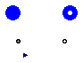
This base model contains the basic interface, parameters and definitions for steam turbine models. It lacks the actual performance characteristics, i.e. two more equations to determine the flow rate and the efficiency.
This model does not include any shaft inertia by itself; if that is needed, connect a Modelica.Mechanics.Rotational.Inertia model to one of the shaft connectors.
Modelling options
The following options are available to calculate the enthalpy of the outgoing steam:
| Type | Name | Default | Description |
|---|---|---|---|
| Boolean | explicitIsentropicEnthalpy | true | Outlet enthalpy computed by isentropicEnthalpy function |
| MassFlowRate | wnom | Inlet nominal flowrate [kg/s] | |
| Real | eta_mech | 0.98 | Mechanical efficiency |
| Initialisation | |||
| Pressure | pstart_in | Inlet pressure start value [Pa] | |
| Pressure | pstart_out | Outlet pressure start value [Pa] | |
| MassFlowRate | wstart | Mass flow rate start value [kg/s] | |
| SpecificEnthalpy | hstartin | Inlet enthalpy start value [J/kg] | |
| SpecificEnthalpy | hstartout | Outlet enthalpy start value [J/kg] | |
| Type | Name | Description |
|---|---|---|
| input RealInput | partialArc | |
| Flange_a | shaft_a | |
| Flange_b | shaft_b | |
| FlangeA | inlet | |
| FlangeB | outlet |
partial model SteamTurbineBase "Steam turbine"
replaceable package Medium = ThermoPower.Water.StandardWater extends
Modelica.Media.Interfaces.PartialMedium "Medium model";
parameter Boolean explicitIsentropicEnthalpy=true
"Outlet enthalpy computed by isentropicEnthalpy function";
parameter Pressure pstart_in "Inlet pressure start value";
parameter Pressure pstart_out "Outlet pressure start value";
parameter MassFlowRate wstart "Mass flow rate start value";
parameter Medium.SpecificEnthalpy hstartin "Inlet enthalpy start value";
parameter Medium.SpecificEnthalpy hstartout "Outlet enthalpy start value";
parameter MassFlowRate wnom "Inlet nominal flowrate";
parameter Real eta_mech=0.98 "Mechanical efficiency";
Medium.BaseProperties steam_in(p(start=pstart_in),h(start=hstartin));
Medium.BaseProperties steam_iso(p(start=pstart_out),h(start=hstartout));
Angle phi "shaft rotation angle";
Torque tau "net torque acting on the turbine";
AngularVelocity omega "shaft angular velocity";
MassFlowRate w(start=wstart) "Mass flow rate";
Medium.SpecificEnthalpy hin(start=hstartin) "Inlet enthalpy";
Medium.SpecificEnthalpy hout(start=hstartout) "Outlet enthalpy";
Medium.SpecificEnthalpy hiso(start=hstartout) "Isentropic outlet enthalpy";
Medium.SpecificEntropy sin "Inlet entropy";
Medium.AbsolutePressure pout(start=pstart_out) "Outlet pressure";
Real PR "pressure ratio";
Power Pm "Mechanical power input";
Real eta_iso "Isentropic efficiency";
Modelica.Blocks.Interfaces.RealInput partialArc;
Modelica.Mechanics.Rotational.Interfaces.Flange_a shaft_a;
Modelica.Mechanics.Rotational.Interfaces.Flange_b shaft_b;
ThermoPower.Water.FlangeA inlet(
redeclare package Medium = Medium,
p(start=pstart_in));
ThermoPower.Water.FlangeB outlet(
redeclare package Medium = Medium,
p(start=pstart_out));
equation
PR=inlet.p/outlet.p "Pressure ratio";
if cardinality(partialArc)==0 then
partialArc =1 "Default value if not connected";
end if;
if explicitIsentropicEnthalpy then
hiso=Medium.isentropicEnthalpy(outlet.p, steam_in.state)
"Isentropic enthalpy";
//dummy assignments
sin=0;
steam_iso.p=1e5;
steam_iso.h=1e5;
else
steam_iso.p = pout;
sin=Medium.specificEntropy(steam_in.state);
sin=Medium.specificEntropy(steam_iso.state);
hiso=steam_iso.h;
end if;
hin-hout=eta_iso*(hin-hiso) "Computation of outlet enthalpy";
Pm=eta_mech*w*(hin-hout) "Mechanical power from the steam";
Pm = -tau*omega "Mechanical power balance";
// Mechanical boundary conditions
shaft_a.phi = phi;
shaft_b.phi = phi;
shaft_a.tau + shaft_b.tau = tau;
der(phi) = omega;
// steam boundary conditions and inlet steam properties
steam_in.p=inlet.p;
steam_in.h=inlet.hBA;
hin=steam_in.h;
hout=outlet.hBA;
pout=outlet.p;
w = inlet.w;
inlet.w + outlet.w = 0 "Mass balance";
// assert(w >= -wnom/100, "The turbine model does not support flow reversal");
// The next equation is provided to close the balance but never actually used
inlet.hAB = outlet.hBA;
end SteamTurbineBase;
ThermoPower.Water.SteamTurbineStodola
This model extends SteamTurbineBase by adding the actual performance characteristics:
The inlet flowrate is also proportional to the partialArc signal if the corresponding connector is wired. In this case, it is assumed that the flow rate is reduced by partial arc admission, not by throttling (i.e., no loss of thermodynamic efficiency occurs). To simulate throttling, insert a valve model before the turbine inlet.
| Type | Name | Default | Description |
|---|---|---|---|
| replaceable package Medium | ThermoPower.Water.StandardWa... | Medium model | |
| Boolean | explicitIsentropicEnthalpy | true | Outlet enthalpy computed by isentropicEnthalpy function |
| MassFlowRate | wnom | Inlet nominal flowrate [kg/s] | |
| Real | eta_mech | 0.98 | Mechanical efficiency |
| Real | eta_iso_nom | 0.92 | Nominal isentropic efficiency |
| Area | Kt | Kt coefficient of Stodola's law [m2] | |
| Initialisation | |||
| Pressure | pstart_in | Inlet pressure start value [Pa] | |
| Pressure | pstart_out | Outlet pressure start value [Pa] | |
| MassFlowRate | wstart | Mass flow rate start value [kg/s] | |
| SpecificEnthalpy | hstartin | Inlet enthalpy start value [J/kg] | |
| SpecificEnthalpy | hstartout | Outlet enthalpy start value [J/kg] | |
| Type | Name | Description |
|---|---|---|
| input RealInput | partialArc | |
| Flange_a | shaft_a | |
| Flange_b | shaft_b | |
| FlangeA | inlet | |
| FlangeB | outlet |
model SteamTurbineStodola "Steam turbine"
extends SteamTurbineBase;
parameter Real eta_iso_nom=0.92 "Nominal isentropic efficiency";
parameter Area Kt "Kt coefficient of Stodola's law";
equation
w = Kt*partialArc*sqrt(steam_in.p*steam_in.d)*Functions.sqrtReg(1-(1/PR)^2)
"Stodola's law";
eta_iso = eta_iso_nom "Constant efficiency";
end SteamTurbineStodola;
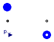
This model describes a simplified steam turbine unit, with a high pressure and a low pressure turbine.
The inlet flowrate is proportional to the inlet pressure, and to the partialArc signal if the corresponding connector is wired. In this case, it is assumed that the flow rate is reduced by partial arc admission, not by throttling (i.e., no loss of thermodynamic efficiency occurs). To simulate throttling, insert a valve before the turbine unit inlet.
The model assumes that a fraction hpFraction of the available hydraulic power is converted by the HP turbine with a time constant of T_HP, while the remaining part is converted by the LP turbine with a time constant of L_HP.
This model does not include any shaft inertia by itself; if that is needed, connect a Modelica.Mechanics.Rotational.Inertia model to one of the shaft connectors.
The model requires the Modelica.Media library (ThermoFluid does not compute the isentropic enthalpy correctly).
| Type | Name | Default | Description |
|---|---|---|---|
| Real | pnom | Inlet nominal pressure | |
| Real | wnom | Inlet nominal flowrate | |
| PerUnit | eta_iso | Isentropic efficiency [pu] | |
| PerUnit | eta_mech | 0.98 | Mechanical efficiency [pu] |
| PerUnit | hpFraction | Fraction of power provided by the HP turbine [pu] | |
| Time | T_HP | Time constant of HP mechanical power response [s] | |
| Time | T_LP | Time constant of LP mechanical power response [s] | |
| Initialization | |||
| Pressure | pstartin | pnom | Inlet start pressure [Pa] |
| SpecificEnthalpy | hstartin | Inlet enthalpy start value [J/kg] | |
| SpecificEnthalpy | hstartout | Outlet enthalpy start value [J/kg] | |
| Temp | initOpt | ThermoPower.Choices.Init.Opt... | Initialization option |
| Type | Name | Description |
|---|---|---|
| FlangeA | inlet | |
| FlangeB | outlet | |
| Flange_a | shaft_a | |
| Flange_b | shaft_b | |
| input RealInput | partialArc |
model SteamTurbineUnit "Turbine for steam flows"
replaceable package Medium = StandardWater extends
Modelica.Media.Interfaces.PartialMedium "Medium model";
extends Icons.Water.SteamTurbineUnit;
parameter Real pnom "Inlet nominal pressure";
parameter Real wnom "Inlet nominal flowrate";
parameter PerUnit eta_iso "Isentropic efficiency";
parameter PerUnit eta_mech=0.98 "Mechanical efficiency";
parameter PerUnit hpFraction "Fraction of power provided by the HP turbine";
parameter Time T_HP "Time constant of HP mechanical power response";
parameter Time T_LP "Time constant of LP mechanical power response";
parameter Pressure pstartin = pnom "Inlet start pressure";
parameter SpecificEnthalpy hstartin "Inlet enthalpy start value";
parameter SpecificEnthalpy hstartout "Outlet enthalpy start value";
parameter ThermoPower.Choices.Init.Options.Temp initOpt=ThermoPower.Choices.Init.Options.steadyState
"Initialization option";
Medium.BaseProperties fluid_in(p(start=pstartin),h(start=hstartin));
FlangeA inlet(redeclare package Medium = Medium);
FlangeB outlet(redeclare package Medium = Medium);
Modelica.Mechanics.Rotational.Interfaces.Flange_a shaft_a;
Modelica.Mechanics.Rotational.Interfaces.Flange_b shaft_b;
MassFlowRate w "Mass flowrate";
Angle phi "Shaft rotation angle";
AngularVelocity omega "Shaft angular velocity";
Torque tau "Net torque acting on the turbine";
Real Kv(unit="kg/(s.Pa)") "Turbine nominal admittance at full throttle";
Medium.SpecificEnthalpy hin(start=hstartin) "Inlet enthalpy";
Medium.SpecificEnthalpy hout(start=hstartout) "Outlet enthalpy";
Medium.SpecificEnthalpy hiso(start=hstartout) "Isentropic outlet enthalpy";
Power Pm "Mechanical power input";
Power P_HP "Mechanical power produced by the HP turbine";
Power P_LP "Mechanical power produced by the LP turbine";
Modelica.Blocks.Interfaces.RealInput partialArc;
equation
if cardinality(partialArc)==0 then
partialArc =1 "Default value if not connected";
end if;
Kv = partialArc*wnom/pnom "Definition of Kv coefficient";
w=Kv*inlet.p "Flow characteristics";
hiso=Medium.isentropicEnthalpy(outlet.p, fluid_in.state)
"Isentropic enthalpy";
hin-hout=eta_iso*(hin-hiso) "Computation of outlet enthalpy";
Pm=eta_mech*w*(hin-hout) "Mechanical power from the fluid";
T_HP*der(P_HP)=Pm*hpFraction-P_HP "Power output to HP turbine";
T_LP*der(P_LP)=Pm*(1-hpFraction)-P_LP "Power output to LP turbine";
P_HP+P_LP = -tau*omega "Mechanical power balance";
// Mechanical boundary conditions
shaft_a.phi = phi;
shaft_b.phi = phi;
shaft_a.tau + shaft_b.tau = tau;
der(phi) = omega;
// Fluid boundary conditions and inlet fluid properties
fluid_in.p=inlet.p;
fluid_in.h=hin;
hin=inlet.hBA;
hout=outlet.hBA;
w = inlet.w;
inlet.w + outlet.w = 0 "Mass balance";
assert(w >= 0, "The turbine model does not support flow reversal");
// The next equation is provided to close the balance but never actually used
inlet.hAB = outlet.hBA;
initial equation
if initOpt == ThermoPower.Choices.Init.Options.noInit then
// do nothing
elseif initOpt == ThermoPower.Choices.Init.Options.steadyState then
der(P_HP) = 0;
der(P_LP) = 0;
else
assert(false, "Unsupported initialisation option");
end if;
end SteamTurbineUnit;
 ThermoPower.Water.EvaporatorBase
ThermoPower.Water.EvaporatorBase
| Type | Name | Default | Description |
|---|---|---|---|
| Integer | N | 2 | Number of nodes for thermal variables |
| Integer | Nt | 1 | Number of tubes in parallel |
| Distance | L | Tube length [m] | |
| Position | H | 0 | Elevation of outlet over inlet [m] |
| Area | A | Cross-sectional area (single tube) [m2] | |
| Length | omega | Perimeter of heat transfer surface (single tube) [m] | |
| Length | Dhyd | Hydraulic Diameter (single tube) [m] | |
| MassFlowRate | wnom | Nominal mass flowrate (total) [kg/s] | |
| Integer | FFtype | Friction Factor Type (0: Kf; 1:OpPoint, 2:Cfnom, 3:Colebrook) | |
| Real | Kfnom | 0 | Nominal hydraulic resistance coefficient |
| Pressure | dpnom | 0 | Nominal pressure drop (friction term only!) [Pa] |
| Density | rhonom | 0 | Nominal inlet density [kg/m3] |
| Real | Cfnom | 0 | Nominal Fanning friction factor |
| Real | e | 0 | Relative roughness (ratio roughness/diameter) |
| Boolean | DynamicMomentum | false | Inertial phenomena accounted for |
| Integer | HydraulicCapacitance | 2 | 1: Upstream, 2: Downstream |
| Length | csilstart | Liquid boundary start position [m] | |
| Length | csivstart | Vapour boundary start position [m] | |
| SpecificEnthalpy | hstartin | 1e5 | Inlet enthalpy start value [J/kg] |
| SpecificEnthalpy | hstartout | 1e5 | Outlet enthalpy start value [J/kg] |
| Pressure | pstartin | 1e5 | Inlet pressure start value [Pa] |
| Pressure | pstartout | 1e5 | Outlet pressure start value [Pa] |
| Real | wnf | 0.01 | Fraction of nominal flow rate at which linear friction equals turbulent friction |
| Real | Kfc | 1 | Friction factor correction coefficient |
partial model EvaporatorBase
"Basic interface for 1-dimensional water/steam fluid flow models"
replaceable package Medium = StandardWater extends
Modelica.Media.Interfaces.PartialTwoPhaseMedium "Medium model";
Medium.BaseProperties fluid_in "Fluid properties at the inlet";
Medium.BaseProperties fluid_out "Fluid properties at the outlet";
Medium.SaturationProperties sat "Saturation properties";
extends Icons.Water.Tube;
parameter Integer N(min=2) = 2 "Number of nodes for thermal variables";
parameter Integer Nt=1 "Number of tubes in parallel";
parameter Distance L "Tube length";
parameter Position H=0 "Elevation of outlet over inlet";
parameter Area A "Cross-sectional area (single tube)";
parameter Length omega "Perimeter of heat transfer surface (single tube)";
parameter Length Dhyd "Hydraulic Diameter (single tube)";
parameter MassFlowRate wnom "Nominal mass flowrate (total)";
parameter Integer FFtype
"Friction Factor Type (0: Kf; 1:OpPoint, 2:Cfnom, 3:Colebrook)";
parameter Real Kfnom=0 "Nominal hydraulic resistance coefficient";
parameter Pressure dpnom=0 "Nominal pressure drop (friction term only!)";
parameter Density rhonom=0 "Nominal inlet density";
parameter Real Cfnom=0 "Nominal Fanning friction factor";
parameter Real e=0 "Relative roughness (ratio roughness/diameter)";
parameter Boolean DynamicMomentum=false "Inertial phenomena accounted for";
parameter Integer HydraulicCapacitance=2 "1: Upstream, 2: Downstream";
parameter Length csilstart "Liquid boundary start position";
parameter Length csivstart "Vapour boundary start position";
parameter SpecificEnthalpy hstartin=1e5 "Inlet enthalpy start value";
parameter SpecificEnthalpy hstartout=1e5 "Outlet enthalpy start value";
parameter Pressure pstartin=1e5 "Inlet pressure start value";
parameter Pressure pstartout=1e5 "Outlet pressure start value";
parameter Real wnf=0.01
"Fraction of nominal flow rate at which linear friction equals turbulent friction";
parameter Real Kfc=1 "Friction factor correction coefficient";
constant Real g=Modelica.Constants.g_n;
/*
FlangeA infl(p(start=pstartin),w(start=wnom),hAB(start=hstartin),
redeclare package Medium = Medium)
annotation (extent=[-120, -20; -80, 20]);
FlangeB outfl(p(start=pstartout),w(start=-wnom),hBA(start=hstartout),
redeclare package Medium = Medium)
annotation (extent=[80, -20; 120, 20]);
replaceable ThermoPower.Thermal.DHT wall(N=N)
annotation (extent=[-40, 40; 40, 60]);
*/
Medium.AbsolutePressure p(start=pstartin, stateSelect=StateSelect.prefer);
MassFlowRate win(start=wnom) "Inlet flow rate";
MassFlowRate wlb(start=wnom) "Flowrate from liquid volume to boiling volume";
MassFlowRate wbv(start=wnom) "Flowrate from boiling volume to vapour volume";
MassFlowRate wout(start=wnom) "Outlet flow rate";
Medium.SpecificEnthalpy hin( start=hstartin) "Inlet specific enthalpy";
Medium.SpecificEnthalpy hout(start=hstartout, stateSelect=StateSelect.prefer)
"Outlet specific enthalpy";
Medium.SpecificEnthalpy hls "Saturated liquid specific enthalpy";
Medium.SpecificEnthalpy hvs "Saturated vapour specific enthalpy";
Medium.SpecificEnthalpy hlb;
Medium.SpecificEnthalpy hbv;
Medium.Density rhoin "Inlet density";
Medium.Density rhoout "Outlet density";
Medium.Density rhols "Saturated liquid density";
Medium.Density rhovs "Saturated vapour density";
Volume Vl "Liquid volume";
Volume Vb "Boiling volume";
Volume Vv "Vapour volume";
Mass Ml "Mass of the liquid volume";
Mass Mb "Mass of the boiling volume";
Mass Mbl "Mass of liquid in the boiling volume";
Mass Mbv "Mass of vapour in the boiling volume";
Mass Mv "Mass of the vapour volume";
Energy El "Energy of the liquid volume";
Energy Eb "Energy of the boiling volume";
Energy Ev "Energy of the vapour volume";
Power Q "Total power balance";
MassFlowRate M_flow "Total mass flow balance";
Power Ql "Thermal power to the liquid volume";
Power Qb "Thermal power to the boiling volume";
Power Qv "Thermal power to the vapour volume";
Length csil(start=csilstart, stateSelect=StateSelect.prefer)
"Abscissa of liqid boundary";
Length csiv(start=csivstart, stateSelect=StateSelect.prefer)
"Abscissa of vapour boundary";
Time Tr "Residence time";
equation
Vl=A*csil "Volume of subcooled liquid";
Vb=A*(csiv-csil) "Volume of boiling liquid";
Vv=A*(L-csiv) "Volume of superheated vapour";
Ml=(rhoin+(if hout>hls then rhols else rhoout))/2*Vl
"Mass of subcooled liquid";
Mb=(if (hout > hvs) then
rhols*rhovs/(rhols-rhovs)*log(rhols/rhovs) else
if (hout>hls+1e-3) then
rhols*rhoout/(rhols-rhoout)*log(rhols/rhoout) else
rhols)
* Vb "Mass of boiling liquid";
Mbv=(if (hout > hvs) then
rhols*rhovs/(rhols-rhovs)*(1-rhovs/(rhols-rhovs)*log(rhols/rhovs)) else
if (hout>hls+1e-3) then
rhols*rhovs/(rhols-rhovs)*(1-rhoout/(rhols-rhoout)*log(rhols/rhoout)) else
if (hout>hls) then
rhovs/(rhols-rhovs)*(rhols-rhoout)/2 else
0)
* Vb "Mass of vapour in boiling liquid";
Mbl=Mb-Mbv "Mass of liquid in boiling liquid";
Mv=Vv*(rhovs+rhoout)/2 "Mass of superheated vapour";
El=Ml*(hin+(if hout>hls then hls else hout))/2-p*Vl
"Energy of subcooled liquid";
Eb=Mbl*hls+Mbv*hvs-p*Vb "Energy of boiling water";
Ev=Mv*(hvs+hout)/2-p*Vv "Energy of superheated vapour";
der(Ml) = win-wlb "Liquid volume mass balance";
if hout>hls then
der(Mb) = wlb-wbv "Boiling volume mass balance";
else
der(csil)=0;
end if;
if hout>hvs then
der(Mv) = wbv-wout "Superheated volume mass balance";
else
der(csiv)=0;
end if;
der(El) = win*hin-wlb*hlb-p*der(Vl)+Ql "Liquid volume energy balance";
if hout > hls then
der(Eb) = wlb*hlb-wbv*hbv-p*der(Vb)+Qb "Boiling volume energy balance";
else
wlb=wout;
end if;
if hout>hvs then
der(Ev) = wbv*hbv-wout*hout-p*der(Vv)+Qv
"Superheated volume energy balance";
else
wbv=wout;
end if;
hlb=if (hout>hls) then hls else hout
"Enthalpy at the liquid-boiling interface";
hbv=if (hout>hvs) then hvs else hout
"Enthalpy at the boiling-vapour interface";
Tr=(Ml+Mb+Mv)/win "Residence time";
// Fluid properties
sat.psat=p;
sat.Tsat=Medium.saturationTemperature(p);
fluid_in.p=p;
fluid_in.h=hin;
fluid_out.p=p;
fluid_out.h=hout;
rhoin=fluid_in.d;
rhoout=fluid_out.d;
rhols=Medium.bubbleDensity(sat);
rhovs=Medium.dewDensity(sat);
hls=Medium.bubbleEnthalpy(sat);
hvs=Medium.dewEnthalpy(sat);
// Temporary boundary conditions
Q=Ql+Qb+Qv+win*hin-wout*hout-der(El)-der(Eb)-der(Ev);
M_flow=win-wout-der(Ml)-der(Mb)-der(Mv);
end EvaporatorBase;